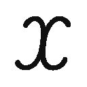

| 青春ブタ野郎はロジカルウィッチの夢を見ない<青春ブタ野郎はバニーガール先輩の夢を見ない> (電撃文庫) | |
| 鴨志田 一 | |
| (2015) | |

本書（電子版）に掲載されているコンテンツ（ソフトウェア／プログラム／データ／情報を含む）の著作権およびその他の権利は、すべて株式会社ＫＡＤＯＫＡＷＡおよび正当な権利を有する第三者に帰属しています。
法律の定めがある場合または権利者の明示的な承諾がある場合を除き、これらのコンテンツを複製・転載、改変・編集、翻案・翻訳、放送・出版、公衆送信（送信可能化を含む）・再配信、販売・頒布、貸与等に使用することはできません。
──ねえ、キスしよっか
そう言って僕をからかってきた当時高校生だったはずの彼女は、二年後に再会すると中学生になっていた。
つまるところ、一体全体これはどういうことなのだろうか。
１
その日、梓川咲太は夢を見た。
昔の夢......とは言っても、二年ほど前のこと。
咲太が中学三年生だった頃の出来事。
謎の三本傷が胸に刻まれ、血まみれで病院に運ばれてから十日が経過していたあの日......担当医の困った顔も見飽きていた咲太は、病院を抜け出して近くの駅から電車に乗った。
行き先は別にどこでもよかった。なんとなく海に行こうと思ったのは、昨日ヒマ潰しに見ていたＴＶドラマの登場人物が、海でたそがれていたのを思い出したからだ。
気分が沈んでいるときは、そうすればいいんだと思えた。
そうしてやってきたのが七里ヶ浜の海岸。砂浜に下りると、意外と力強い波の音が聞こえてきた。波打ち際までゆっくりと歩く。
潮の香りを含んだ海辺特有の風。昼下がりの日差しは心地よい。海面には太陽へと続く光の道が生まれている。そのはるか彼方......空気が透き通っているのか、水平線がはっきりと見えた。
海と空の境目をしばらく見ていると、隣に人の気配がした。
「知ってますか？ 人の目の高さから見える水平線までの距離は、約四キロメートルなんですよ」
透明感のある声。音色はか弱いのに、はっきりと意思のこもった凜とした声だった。
「......」
ちらりと横を確認する。風に揺れる髪を手で押さえた制服姿の女子高生が立っていた。ベージュのブレザーに、紺色のスカート。砂の上に裸足で立っている。
面識のない女子高生。名前を知らない女子高生。
咲太の視線に気がつくと、彼女は悪戯っぽく微笑んだ。
一応、周囲を確認したが、咲太以外の人影はない。犬の散歩をしている老夫婦が遠くに見えたくらい。咲太が話しかけられたという解釈で間違いはなさそうだった。
「この辺の人って、みんなそうなんですか？」
「ん？」
質問の意図が伝わらなかったのか彼女は首を傾げている。
「見ず知らずの人に、突然話しかけたりするんですか？」
この一帯は海辺の観光地だ。西に江の島、東には鎌倉がある。だから、外から訪れた人に対して、もてなそうというやさしい文化を築いているのかもしれない。
「あ、もしかして、わたしのこと、変な人だと思ってます？」
「いえ」
「よかった」
ほっと、彼女が胸を撫で下ろした。
「ウザい人だと思ってるだけです」
「それ、女子高生に禁句です。ウザい、ダサい、空気が読めないは三大禁句」
両手を腰に当てたポーズで、彼女が頰を膨らませる。お冠のようだ。
「なら、イタイ人で」
「それは四番目」
恨めしそうに彼女は不機嫌な顔を向けてくる。
「少年は、随分とやさぐれているようですけど、何か嫌なことでもあったんですか？」
「さっきの話」
彼女からの質問は無視して、咲太はそう切り出した。こうした態度のせいで、出会ったばかりの女子高生に、やさぐれているなどと言われたのだろう。
「はい」
それでも、彼女は嫌な顔ひとつしない。にっこりと微笑んでいる。先ほどからその表情はコロコロと変わっていた。
「水平線までの距離の話です」
そんな彼女の前で、咲太は憮然としたままだった。
「約四キロメートルって本当ですか？」
「意外と近くてびっくりですよね」
彼女は砂浜に落ちていた細い木の枝を拾うと、湿った砂の表面に円を描いた。その円の上に、今度は丸と棒で構成された人の絵を追加する。最後に、丸と棒の人間から円の縁に接するように一本の直線を引いた。
「高校の数学で教わる直線と円の式を使えば、水平線までの距離は簡単に導き出せます」
砂の黒板に、彼女は数式を書いてくれたが、それは長く伸びてきた波にさらわれて消えてしまった。慌てて、彼女も波打ち際から一歩下がる。
「......」
咲太はもう一度水平線を見据えた。先ほどははるか遠くに思えていたそれが、不思議と今は近くに見える。
「次はわたしの質問に答えてもらう番ですね」
言われた瞬間は、やはり無視をしようかと思った。だが、結論から言えば、咲太はこのあと海にやってきた理由を彼女に話していた。
「僕は──」
はじめは妹がいることを伝えた。次に、その妹が中学でいじめに遭ったことを話した。
一度口を開くと、言葉は次から次へと出てくる。
いじめを切っ掛けに、妹の体に謎の痣や切り傷ができたこと。酷く傷付いた妹に対して、自分は何もしてあげられなかったこと。挙句、わけのわからない傷が自分の胸にもできたこと。何もかもが上手くいかなくて......全身に伸し掛かる無力感から逃げ出すように、今日はここへ来たこと。それらを全部話した。
同情が欲しかったわけでもなければ、慰めの言葉を期待したわけでもない。話を聞けば、突然現れたお節介な女子高生もドン引きしていなくなると思っていた。そういう意地悪な気持ちが咲太の口を割らせた。それくらい、このときの咲太は突然話しかけてきた彼女が言った通りで、とにかくやさぐれていたのだ。
「そんなことがあったんですね」
驚いたことに、すべてを聞き終えたあとでも、彼女は困惑の表情を見せなかった。同情もなければ、慰めもない。胸の傷に関しての言及もしてこなかったし、話を噓だと疑うようなこともなかった。ただ、右手を差し出して、
「わたしは、牧之原翔子です。牧之原サービスエリアの牧之原に、大空を翔る子の翔子。少年の名前は？」
と言ってきた。
「僕は......」
咲太は反射的に口を開いていた。躊躇いながらも、握手に応じようと手が伸びる。だが、翔子の手を摑む寸前で、夢は終わりを迎えた。
夢の中では空振りに終わった咲太の手が何かに触れる。手のひらに収まる丸くてやわらかい感触......。
続けて、咲太は体に覆い被さる人肌のぬくもりを感じた。少し汗ばんだ柔肌が、右半身にぴったり張り付いている。
ふにっとした感触と、重さから考えるに女の子。
ぼんやりと思考していると、今度は唇を舌でなめられた。
ゆっくりと目を開ける。
白くてふわふわした愛くるしい生き物が、咲太の目の前にいた。ちょっとざらついた舌でなおも咲太の顔をなめてくるのは、白い毛並みの子猫。
わけがあって、二週間ほど前......一学期の最終日から咲太の家で預かっている子猫だ。
とりあえず、顔の上から白い子猫を下ろした。
ただ、これではまだ起き上がれない。もう一匹......いや、もうひとり咲太に覆い被さっている大きな生き物がいる。
パンダ。もとい、パンダ柄のパジャマを着た妹のかえでだ。今年で十五歳のお年頃なのだが、時々こうして咲太のベッドに潜り込んでくる。
そのかえでの胸元には、梓川家の飼い猫であるなすのがいた。メスの三毛猫。先ほどから咲太の右手が感じていたやわらかい感触の正体は、どうやらなすのの丸いお尻だったようだ。うっかり、妹の胸を触ったりしなくてよかった。
なすのから手を離すと、咲太はすぴ～っと寝息を立てるかえでの鼻を指で摘んだ。
「むっ」
一瞬、苦しそうな顔をするかえで。だけど、すぐに口を開けて酸素を確保する。口も塞いでやろうかと考えたが、お年頃の妹にする行為ではないと思いやめておいた。
「かえで、起きろ」
「ん？ あ、お兄ちゃん、おはようございます」
目元をこすって、かえでがあくびを嚙み殺す。
「何度も言っているが、僕のベッドに潜り込むのはやめなさい」
「お兄ちゃんが、禁断の愛に目覚めてしまうからですか？」
「違うな」
「大丈夫です。お兄ちゃんが望むなら、かえではどこまでも堕ちていきます！」
「ただただ暑いからやめてほしいんだ」
季節は夏。人肌のぬくもりなどちっとも恋しくない時期。むしろ、なるべく人と触れ合いたくないシーズンだ。
もちろん、お付き合いをしているひとつ年上の彼女......桜島麻衣だけは例外。むしろ、オールシーズン触れ合っていたい。
だが、世の中とは思い通りにはいかないもので、麻衣とはスキンシップのない日々が続いている。それ以前に、夏休みがはじまってから数えるほどしか会っていない。
芸能活動を再開した麻衣は、ドラマ撮影、ＣＭ撮影、さらに、ファッション雑誌の表紙モデルや、そのインタビュー、番組の宣伝イベントなどに引っ張りだこで、芸能人として充実した日々を送っているのだ。
夏休みがはじまる前は、「半分くらい仕事」と言っていたのに、スケジュールは瞬く間に埋まってしまっていた。殆どオフのない状態だ。
「はあ......」
だから、落胆のため息のひとつやふたつは零れる。
「どうしたんですか、お兄ちゃん」
「かえで、今日が何月何日か知ってるか？」
デジタルの目覚まし時計で日付を確認したかえでは、
「八月二日です」
と、律儀に教えてくれた。
「つまり、夏休みは二週間ほど経過したわけだ」
「そうですね」
「なのに、麻衣さんと全然イチャイチャしていない」
「なら、かえでとイチャイチャしますか？」
ここぞとばかりに、かえでが顔を寄せてくる。
「いや、しないな」
未だに離れる気配のないかえでごと、咲太は無理やり起き上がった。
「かえでの何が不満なんですか!?」
ぐいっとかえでが身を乗り出してくる。危うく押し倒されそうだったので、咲太はさっさとベッドから立ち上がった。
「今日はやけに必死だな」
「今、かえではかえで史上最大のピンチなんです」
「なんだそりゃ」
「一日も早く妹道を極めないといけないんです！」
力強くかえでが自分の言葉に頷いている。
妹道とはなんだろうか。剣道や柔道の親戚だろうか。いや、同列に並べたらそれぞれの団体から苦情の電話が来そうだ。
そんなどうでもいいことを考えていると、インターフォンが鳴った。時計を見ると午前十時を示している。だから、誰が来たのか、咲太は出る前にわかった。
この時間にやってくるのは彼女しかいない。
「はいはい、今、行きますよ」
大きなあくびをしながら、咲太は来客を出迎えるために玄関へと向かった。
訪ねて来たのは、清楚な佇まいのひとりの少女。白のワンピースは、彼女の清らかさをより引き立てている。
年齢は十二歳。中学一年生。顔立ちには年相応の幼さが残っているが、「こんにちは。お邪魔します」と言って頭を下げる仕草は妙に落ち着きがあって大人びている。物腰が丁寧で礼儀正しい。
靴を脱いで玄関を上がった少女......牧之原翔子の足元に、咲太の部屋から出てきた白い子猫が駆け寄っていく。背中をすりすりとこすり付けていた。
「今日はご飯がまだなんだ」
「あ、でしたら、わたしがあげてもいいですか？」
「なすのの分も一緒にお願い」
「はい」
うれしそうに翔子が微笑む。
その翔子をリビングへ案内する。足元には、子猫がじゃれついていた。
「お兄ちゃん、ちょっと来てください」
自室の前を通り過ぎたところで、かえでから手招きをされた。先に翔子をリビングに通してから、咲太はかえでのもとへ戻った。
「なんだ？」
「お兄ちゃんは、妹は若い子の方がいい人ですか？」
若干、泣きそうな顔。
「なんだ、その質問は」
「清楚で礼儀正しい妹がいいんですか？」
かえではちらちらとリビングの方を気にしている。どうやら、これがかえでにとって、かえで史上最大のピンチということのようだ。
「妹はかえでひとりいればいい人だな、僕は」
「ほ、本当ですか」
「むしろ、なんだと思われてるんだ、僕は......」
「で、では、翔子さんは、お兄ちゃんにとってなんなんですか？」
「......なんなんだろうな」
予想外の出会いから約二週間。色々な推測はしたが、『牧之原翔子』という存在に対する疑問の答えは何ひとつ出ていない。
ただの同姓同名。そう考えるには顔立ちが似すぎているし、姉妹や親戚という筋は、名前が一緒の時点で成り立たないはず。少なくとも、翔子の方は咲太を知らなかったので、二年前に出会った牧之原翔子ではないのだろうと咲太は思っている。それでも、やはり、今も猫の世話をしている中学一年生の翔子は、二年前に咲太が出会った高校二年生の牧之原翔子と外見の上ではよく似ていた。別人とは思えないほどに......。
そうなると、見えてくる可能性はひとつ。
なんらかの思春期症候群による影響。ネットの掲示板で話題になっている普通では考えられないような眉唾物の超常現象。『突然、目の前から人が消えた』とか、『他人の心の声が聞こえた』とか、都市伝説のようなもの。ただ、それが単なるネット上の噂話でないことを咲太は知っている。今年になってからすでに二件も咲太は経験していた。ひとつは麻衣の件で、もうひとつは後輩の古賀朋絵の件だ。
それと似た現象が、翔子にも起きている可能性がある。今起きていることなのか、二年前に起きていたことなのかはわからないが......。
「あの、咲太さん」
考え事をしながら、翔子の後ろ姿を見ていた咲太は、振り向いた彼女とばっちり目が合った。
「ん？」
「その、ごめんなさい」
「なんのこと？」
「この子のことです」
キャットフードを食べる子猫の背中を翔子がやさしく撫でる。
「引き取りたいと言っておきながら、なかなか両親に言い出せなくて......」
子猫の隣になすのがやってくる。
「必ずお父さんとお母さんには話しますので、もう少し待ってください」
それが今なお公園で拾った子猫が咲太の家にいる理由だ。
「ご両親は厳しい人？」
「わたしにはとてもやさしいです」
「動物が苦手とか？」
「好きだと思います。動物園に行ったときには、わたしと一緒になってはしゃいでいました」
「さては、猫アレルギー？」
「いえ」
と、翔子は首を横に振る。
「実は家が飲食店を営んでいるとか？」
衛生面の問題や、それこそ猫アレルギーの客への配慮という可能性もある。
「父は会社員で、母は専業主婦の一般的な家です」
「なるほど」
これ以上は、尋問のようになりそうだったので、咲太はやめておいた。
けれど、翔子の方から、
「わたしが『猫を飼いたい』と言ったら、お父さんもお母さんも絶対に反対はしないと思います」
と、わずかに表情を曇らせて言ってきた。
なんだか妙な言い回しだ。だから、当然その理由は気になったが、咲太はあえて追及はしなかった。はっきり言えることなら、翔子は最初から今のような言い方を選ばなかったはずだ。
「でも、だから、言い出せなくて......」
またよくわからないことを言ってくる。
「そっか」
「ごめんなさい。よくわからないですよね」
「ああ、さっぱり」
咲太が思った通りに答えると、翔子は何がおかしかったのか、くすくすと笑い出した。
「ま、しばらくはこのままでもいいよ。なすのも喜んでるし」
子猫の顔をなすのがなめてあげている。
「牧之原さんもここで猫の世話の練習をしておけばいいし」
「はい」
「そういや、名前は決めた？」
「はい、決めました」
ぱっと笑顔になって翔子が頷く。
「......」
「......」
けれど、続きの言葉は出てこない。
「教えてはくれないんだ」
「え？ あ、そうですよね。......あの、笑わないでくださいね」
「そんな面白い名前なのか」
「い、いえ、普通だと思いますけど......『はやて』です」
子猫は翔子の方を見て、怪訝そうに首を傾げていた。自分の話をしているのだということは、なんとなくわかっているのかもしれない。
「白くてしゅっとしているので、『はやて』って感じだと思いました」
「いいね。なすのと東北仲間だ」
「東北仲間？」
新幹線の名前繫がりなのは、伝わらなかったようだ。わざわざ説明するほどのことでもないので、「なんでもない」と言って咲太は軽く流した。
それから、しばらくは猫とじゃれ合っていた翔子だったが、何かに気づいて顔を上げた。
「あの」
上目遣いで咲太を見ながら、声をわずかに潜めている。
ちらりと横に流れた視線は、咲太の後ろ......部屋のドアの隙間から咲太と翔子の様子を窺っているかえでに向けられていた。
「わたし、かえでさんに嫌われているんでしょうか？」
「あれが全人類に対するかえでの標準的な反応だから気にしなくていいよ」
「いえ、気になります」
ごもっともな意見が返ってきた。言われてみれば確かに気になる。
「かえで、今日の分の勉強は終わったのか？」
「わからないところがあるので、お兄ちゃんに教えてほしいです」
「なら、こっちに来なさい」
数学の教科書を胸に抱えたかえでが恐る恐る部屋から出てくる。すぐに咲太の背中に張り付いてきた。
「この状態で、どう教えればいい？」
「ここです」
後ろから、顔の前に教科書が差し出される。因数分解の問題。計算式はきちんと書き込まれていて、分解する問題も、式をまとめる問題もちゃんとできている。
「どこがわからないのか、僕にはわからないんだが」
「因数分解が、人生のどの段階で活躍するのかわからないんです」
「たとえば、入りたい高校の入学試験で活躍するな」
咲太の人生の中で、因数分解が役に立った唯一の場所だ。
「わかりました」
納得した様子で、かえでは教科書に「試験で活躍！」とメモを取っている。本当にわかったのだろうか。今の答えでよかったのだろうか。もっと根本的なことをかえでは聞いてきたのだと思うが、そんな難題に咲太が答えられるわけがない。咲太としても、微分積分が何の役に立つのか知りたいくらいだ。あと、三角関数。一体、誰が考え出したのだろうか。サイン、コサイン、タンジェント......。
そんなことを考えていると、翔子から視線を感じた。
「どうかした？」
咲太の方から先にそう問いかける。
「わたしも、ここで宿題をしてもいいですか？」
「夏休みの宿題？」
「はい」
「いいよ。こっちのテーブル使って」
ＴＶの前のテーブルを勧める。
「ありがとうございます」
翔子は丁寧にお辞儀をしてから、ぺたんと床に座り込んだ。トートバッグの中から宿題のプリントを取り出す。翔子も数学の宿題のようだ。簡単な一次方程式の解を求める計算問題。それが全部で二十問ほど並んでいる。集中してやれば、十五分くらいで終わりそうな感じ。
けれども、プリントの問題を前にして、シャーペンを握った翔子は硬直していた。最初の問題は『３＝９』だ。両辺を『３』で割って、『＝３』にするだけのはずだが、翔子の手はぴくりとも動かない。
そのまま一分が経過。
やっと動いたかと思ったら、翔子の手はトートバッグの中に伸びた。数学の教科書を引っ張り出す。開いたページはもちろん一次方程式について書かれたところ。読み進めるにつれて、表情は困惑に歪んでいった。
「教えようか？」
「......」
声をかけると、少し驚いた様子で翔子が顔を上げた。
「苦戦してるようだし」
「だ、大丈夫です。できると思います」
再び、翔子は教科書とにらめっこをはじめる。
五分ほど粘ったあとで、プリントの一問目に着手。両辺を『３』で割って、『＝３』を導き出した。
確認するように翔子が上目遣いで咲太を見てきたので、
「正解、よくできました」
と言ってあげた。
その後は、すらすらと問題を解いていく。一次方程式がどういうものか理解したらしい。迷いが殆どない。でも、だからこそ、咲太は不思議に思った。翔子の様子は、授業で学んだ内容を思い出したという風には見えなかったからだ。どちらかと言うと、はじめて見る問題を、今、理解したという印象。
そのまま最後まですらすらと問題を解き終えてしまった。
「あのさ」
プリントをトートバッグにしまった翔子が真っ直ぐに見上げてくる。『人の話を聞くときは相手の目を見ましょう』という小学校での教えを忠実に守っている。
「変なこと聞いてもいい？」
「えっと......」
わずかに翔子が警戒を見せる。というか、なぜだか頰を赤く染めた。
「えっちな質問ですか？」
「いや、違うな」
「そ、そうですか」
どうしてそう思ったのかは気になったが、脱線すると本題を聞きそびれそうだったので、咲太はさっさと切り出すことにした。
「牧之原さんって、お姉さんいる？」
「いえ」
「親戚によく似た人は？」
「いえ、いないと思います......」
濁した語尾からは、どうしてそんなことを尋ねてくるのかという疑問が窺い知れた。
「前にさ、牧之原さんによく似た人に会ったことがあってね。ま、その人は牧之原さんより年上なんだけど......もしかしたら、お姉さんとか、親戚なのかと思ったわけ」
「わたしは一人っ子なので」
「そか」
「年上ってどれくらいですか？」
「ん？」
「その、わたしによく似ていたという人です」
「二年前に会ったときに高校二年生だったから、進学してたら大学一年生......今年十九歳ってことかな」
「十九歳......」
ぽつりと翔子がそうもらした。何か意味がある数字には思えなかったが、何か意味があるように呟いたようにも思えた。気のせいだろうか。
「どうかした？」
「あ、いえ......大学生の自分が全然想像できなかったので、どんな風になるのかと思ったんです」
まだ中学に上がったばかりではそれが自然だろう。
「大丈夫。高校二年の僕にも、大学生の自分は想像できない」
「咲太さんは、そろそろ想像できた方がいいと思います」
遠慮がちに翔子は正しい指摘をしてきた。
「確かにその通りだなあ」
それからしばらくは他愛のない話をして、十二時前に翔子は席を立った。いつも通りの時間。マンションの下まで見送り、別れ際には、
「明日はなすのがお風呂の日だから、なすのでお風呂の練習をしよう」
と約束をした。まだ小さいはやては、体温調節が苦手なためお風呂はお預けだ。
「それでは、はやてのことお願いします」
ぺこりと頭を下げてから、翔子は小さく手を振って歩き出す。遠ざかっていく背中を見ながら、
「本日も、二年前の件については進展なしか」
と、咲太は呟いた。
「双葉に、相談しとくかな」
エレベーターに乗り込むと、そんな独り言を口にしていた。
２
翔子と別れたあと、シフトの時間より少し早めに家を出た咲太は、真っ直ぐバイト先のファミレスには向かわずに、駅前の家電量販店の建物に足を踏み入れた。
最新のスマホがずらりと並んだフロアを通り抜けてエスカレーターで上を目指す。オーディオフロア、白物家電フロアには見向きもせずに、ひたすら上へ。
七階に到着すると雰囲気は一変した。この階と上の八階は品揃えの豊富な書店になっているのだ。
広いフロアには整然と本棚が並び、隙間なく本で埋められている。専門書を扱う七階は客の年齢層が高く、落ち着いた雰囲気がある。どこかの図書館のようですらあった。
その中を、咲太は本棚と本棚の間を確認しながら歩いた。
別に探している本があるわけではない。
翔子が帰ったあと、彼女のことを相談しようと思い、同級生である双葉理央に連絡したところ、
「今、家電量販店の上の本屋にいるから出てきたら」
と言われたのだ。
その理央の姿はどこにも見当たらない。てっきり、物理学の本が並んだコーナーにいると思っていたのだが、その前にいたのは、髪を結った峰ヶ原高校の制服を着た別の女子生徒だった。
仕方がなくフロアをぐるりと一周する。やはり、理央は見つからなかった。
「こういうとき、ケータイあると便利だよな」
メールにしろ、電話にしろ、無料通話アプリのメッセージにしろ、リアルタイムで居場所を確認できる。
もう一周しようかと物理学の本棚の脇を通り抜けると、
「梓川」
と、後ろから声をかけられた。
立ち止まって振り返る。
「素通りして、なんかの嫌がらせ？」
不機嫌そうな顔で咲太を見ていたのは、先ほど見かけた峰ヶ原高校の夏服を着た女子生徒。よく見れば彼女が理央だった。
「双葉？」
「夏の太陽で頭がいかれたらしいね」
呆れた様子で理央がため息を吐く。見慣れた制服。さすがに学校外なので白衣は着ていない。だが、二度も視界に収めながらも、咲太が素通りしてしまった理由は服装以外にある。
髪型がいつもと違っているのだ。普段は無造作に下ろしている髪を、今は後ろでまとめている。首筋からうなじまでの日焼けとは無縁の白い肌が惜しげもなく晒されていた。理央は常に露出が控えめなので、たったそれだけでもなんだか色気を感じた。
「下ろしてると暑いんだよ」
咲太の視線に気づいた理央は、質問するより先に理由を教えてくれた。理由も実に理央らしい合理的なもの。
だが、咲太の疑問はそれひとつではない。次に気になったのは理央の目元だ。
「眼鏡をしてないのは、今日はコンタクトだから」
今度も聞く前に答えが返ってきた。髪型が違って、眼鏡もしていないと、理央の印象はかなり違う。ただ、淡々と疑問に答えてくれた態度や口調は、咲太のよく知る理央そのものだった。
「なんで制服？」
最後の疑問だけは、口に出せた。理央に限って言えば、女子高生を売り物にするために休日も着用しているわけではないだろう。
「このあと学校」
「国見なら、僕と一緒にバイトだからいないぞ」
「部員ひとりの科学部は活動実績を残しておかないと即廃部になるんだよ」
恨みがましい目で理央が睨んでくる。
「で、梓川の用事っていうのは？」
「ん、ああ。それなんだが......」
「また例の厄介ごと？」
興味などなさそうに本棚から一冊の本を取り出すと、理央はぱらぱらとめくった。咲太には縁遠い量子力学の本だ。
「そうかもしれないし、そうじゃないかもしれない」
「煮え切らないね」
「牧之原翔子に会った」
単刀直入に用件をさらっと口にする。
「......」
その名前を聞いて、理央は本を開いたまま咲太に視線を向けてきた。瞳に驚きを宿している。前に、牧之原翔子についての話は理央に伝えてある。咲太にとっては初恋の人物。彼女を追いかけて峰ヶ原高校を受験したこと。でも、彼女は学校にはいなくて、卒業した痕跡はおろか、在籍していた記録も残っていなかったこと。そんなわけのわからない状態のまま、咲太は結果的に失恋をしたこと。その全部を理央は知っているのだ。
「彼女、実在したんだ」
だからこそ、理央がそう感想を零した気持ちもわかる。咲太自身も、もう二度と会うことはないと思っていた。彼女が出てくる夢だって、もう一年近くも見ていなかったのだ。
「しかも、驚いたことに、中学一年生になってた」
「は？」
理央が素っ頓狂な声を上げる。持っていた本を落としそうになっていた。
「二年前に会ったときは、高二だったのに、一学期の最終日に再会したら、中一になってた」
「梓川、正気？」
「残念ながら」
「だとしたら、計算が合わないね」
二年前に高校二年生だったのだから、ストレートに進学していたら今は大学一年生でないとおかしい。それが、中学一年生に逆戻りしているのだ。
「梓川のことは？」
「覚えてない......ってか、前に会ったことなんか知らない感じ」
実際、出会った直後に、「はじめまして」と挨拶を交わしている。
「......」
理央は難しい顔で考え込んでいる。
「梓川」
しばらくして、視線だけこちらによこした。
「ん？」
「よく似た同姓同名の他人なんじゃないの？」
「それが一番可能性高いよな、そりゃあ」
咲太も一度は考えたことだ。考えはしたが、こんな偶然があるだろうか。
「世界には同じ顔をした人間が三人いるらしいよ」
「んなのよくある都市伝説だろ」
「そうだね。よくある都市伝説」
理央がふと視線を逸らした。何気ない仕草。別に気にするほどのことではないが、咲太はなぜだか気になった。今の話に、理央の感情が動く理由があったとは思えなかったからだ。いつもなら、素っ気無く笑い飛ばす場面のような気がした。
「双葉？」
「あと可能性があるとすれば、その子は牧之原翔子の妹で、わけあって姉の名前を名乗っているとか？」
なんでもないように理央が話を続ける。だから、この場で言及するのは諦めた。
「どんなわけだよ」
設定が複雑すぎる。
「それは梓川が本人に聞けばいい」
「あんまり変な質問をしてると、変なやつだと思われる」
「私に害はないからいいんじゃない？」
「僕がよくないと言ってるんだ」
「桜島先輩以外にもいい顔をしたいとは意外だね」
「言っておくが、中学一年の女の子に欲情したりはしないからな」
「それは、どっちでもいいけど。もうひとつ可能性をあげるとすれば、実は二年前に出会った牧之原翔子は、梓川がその時点から未来を見ていたものだった......というパターンかな」
「あの現象の原因は僕じゃない」
未来のシミュレーション現象は、古賀朋絵が起こした思春期症候群だ。同じ学校に通うひとつ下の後輩。桃尻のかわいい後輩だ。
「一緒に体験した梓川が発生源という説も完全には否定できていないと思うけどね」
「だとしても、それだと今度は僕の年齢が合わないだろ」
「だね。でもさ......今のところ実害はないんでしょ？」
「まあ、ないな」
麻衣や朋絵のときとは根本的にそこが違う。これが思春期症候群なのかどうかもわからないが、現段階では何もまずいことにはなっていない。
理央は本を閉じて元の位置に戻すと、また別の本を取った。その脇を浴衣姿の女子二人組が通り過ぎていった。
レポートがどうのと話していたので大学生だろうか。参考になる資料を捜しに来たのかもしれない。
その後ろ姿を目で追っていると、
「梓川、見すぎ」
と、理央に鋭く指摘された。
「ああいうのは、誰かに見てもらうために着るもんだろ」
「少なくとも、その相手は梓川じゃないだろうけどね」
「今日、どっかで花火やるんだな」
「茅ヶ崎が今日」
「よく知ってるな」
「そこに書いてある」
目で理央が示したのは脇の壁。藤沢駅からは東海道線で二駅隣......相模湾に面した茅ヶ崎の海岸で行われる花火大会のポスターが貼られていた。開催日は八月二日。確かに今日だ。
「そういや、去年、行ったよな。花火大会」
八月の二十日前後に行われる江の島の納涼花火大会。
その日、バイトが夕方上がりだった咲太と佑真は、帰りがけに店長から花火大会のことを聞かされたのだ。男ふたりで行くのも寂しいという話の流れで理央に声をかけた。当時は、まだ佑真も上里沙希とは付き合っていなかった。
「そうだね」
理央は離れていく浴衣女子の背中を無感動に見ていた。
「あのときの双葉、私服だったよな」
「梓川もね」
「国見と一緒に期待してたのに」
その頃から、理央が佑真に好意を抱いていたのは知っている。というか、確かあの日に気づいたのだ。花火を見上げる佑真の横顔を、理央は横目で見ていたから。
「もったいぶらずに着てくればよかったのに」
「どうして私が梓川のために、そんな面倒なことをしなくちゃいけないわけ？」
「国見に見せるためだよ」
「......」
理央が不愉快そうな視線を向けてくる。
「どの道、私には似合わない」
「そうか？」
「そう」
「あ、浴衣って胸が大きいとダメなんだっけ？」
理央の場合、制服の上からでも、大きくふくらんでいるのがわかる。
「そういう意味で言ったんじゃない」
理央が本で胸元をそれとなくガードした。見られるのはあまり好きではなさそうだ。
「なら、どういう意味？」
「答える必要はないね」
「なんで？」
「梓川は理由を察した上で、私に言わせようとしてるから」
「地味な自分がするような格好じゃないとか思っているなら大間違い」
「......」
理央の視線が真意を聞いてくる。
「今の髪型で浴衣着たら、かなりいいと思うけどな」
アップにした髪と浴衣は大変相性が良さそうだ。
「それに、一度は着ようとしたんだろ？」
「......」
露骨に理央が警戒を示す。
「それ、どういう意味？」
「双葉の口ぶりからして、浴衣は持ってそうだし」
「何を根拠にそう思うわけ？」
その質問は肯定したのと同じだ。
「持ってなかったら、似合う似合わない以前に、『持ってない』っていう根本的な理由を答えるのが双葉なんだよ」
いつも理屈と本質で理央は話をするのだ。
「......ほんと、梓川のそういうところは小賢しいね」
「本気で嫌そうな顔するなよ」
「それは無理。本気で嫌だから」
「酷いこと言うね」
咲太の苦笑いは無視して、理央は本棚から『量子テレポーテーションの未来』と題された一冊の本を抜き取った。
「もういいね。私、行くから」
と言って、レジの方へと歩き出す。
咲太はその背中に、「相談乗ってくれて、サンキュ」と声をかけた。
３
理央と別れた咲太はシフトの時間も迫っていたので、バイト先のファミレスに向かった。
「おはようございます」
レジに立っていた店長に挨拶をしながら店内を眺める。夕方のこの時間は来客も少なく、お茶をしているお母さんのグループや、勉強をしている受験生、ノートパソコンを開いて何か作業をしているスーツを着た男性がいるくらいで、のんびりした空気が流れていた。
咲太は足を止めずに、奥の休憩スペースに引っ込んだ。着替えてタイムカードを通さなければならない。
休憩スペースには先客がいた。すでにウェイターの制服に着替えてパイプ椅子に座っていたのは、咲太にとって数少ない友人のひとりである国見佑真だ。
「よっ」
軽く手を上げてそう声をかけてくる。
「お前、さらに日焼けしてないか？」
前回会ったのは、バイトのシフトが一緒だった三日前。そのときからすでに夏の日焼け肌になっていた佑真だが、さらにこんがり小麦色になっている。
「そうか？ でも、一昨日海行ったせいかも」
「彼女と？」
「そうだけど？」
「うわー、ウザいな」
「なんでだよ。咲太だって、とんでもなく美人な彼女がいるだろ」
「その麻衣さんはとんでもなく忙しくて、この一週間顔を見てない」
「俺、昨日ＴＶで見たぞ」
「安心しろ。ＴＶでなら、僕も毎日見てる」
すでに何本契約を取っているのか知らないが、ＣＭに度々登場するのだ。清涼飲料水に新商品のお菓子。咲太にとって身近なものもあれば、その美貌を生かした化粧品やシャンプーの看板役と内容は多岐に渡る。
「ま、ご愁傷様」
着替えてロッカーの陰から出た咲太に、佑真が悪戯っぽく笑いかけてくる。
文句のひとつも言ってやろうかと思っていると、
「おはようございます」
と、聞き覚えのある声が通路の方から聞こえた。けれど、近づいてくる足音は耳なじみの薄いものだ。からんからんという風情のある音。
少し遅れて休憩スペースに入ってきたのは古賀朋絵だった。男ふたりのむさ苦しい空間が急にぱっと華やかになる。それというのも、朋絵は明るい色の浴衣を着ていた。足元は鼻緒のかわいい草履。手には金魚の絵柄が入った巾着をぶら下げている。
「げっ、先輩！」
朋絵は、咲太を見るなり嫌そうな反応を示した。
「かわいい浴衣姿を自慢しに来たのか？」
出勤表に朋絵の名前はなかったので、今日はバイトではないはずだ。
「来週の予定出してないから出しに来ただけだし」
テーブルの上に置かれたプラスチックの書類ケースから、朋絵は未記入のスケジュール表を取り出す。浴衣が崩れないように気を付けながら丸椅子に座ると、ボールペンで名前と二週間分の予定を書き込んでいた。バイトの予定はこうして二週間ごとに、スケジュールを提出して、シフトが組まれる仕組みなのだ。全部スマホとかで処理されているところもあるらしいので、こういうアナログな仕組みは、ケータイを持っていない咲太にとっては非常にありがたい。
「古賀さん、浴衣かわいいね」
何も言わない咲太に代わって、佑真は自然な調子でそう告げた。
「え？ あ、ありがとうございます」
少し慌てた感じで顔を真っ赤にする朋絵。ちらりと咲太に視線を向けてきた。
「古賀って浴衣似合うのな」
「先輩、それセクハラ」
せっかく褒めたのに、朋絵はむっとして唇を尖らせている。
「なんでだよ......」
佑真の言葉は素直に受け取ったくせに納得がいかない。
「だって、今、胸見て言ったじゃん」
巾着を持った手で胸元をガードしている。
「失敬だな。腰とお尻のバランスも含めた上での発言だ」
「余計悪いし！ どうせ、帯にどっかり乗っかるような立派な胸はないですよー。ずん胴ですよー」
なにやら、完全に拗ねている。
そんなふたりのやり取りを見ていた佑真がぷっと吹き出す。
「ふたりっていつの間にそんな仲良くなったわけ？」
「な、仲良くありません！」
ぶすっと朋絵が答える。
「なんかあった？」
それを尻目に佑真は横目で咲太にそう聞いてくる。
「僕が古賀を大人にしてやったの」
「ちょ、ちょっと先輩！ なんば言うとっとね!?」
「そっか、古賀さん、もう大人なんだ」
笑いながら佑真までそんなことを言い出す。
「国見先輩まで......」
裏切られたという顔をする朋絵。
「あたし、約束の時間だからもう行くね。国見先輩も失礼します」
ぷりぷりしながらも、きちんとぺこりとお辞儀をして朋絵は休憩スペースを出て行こうとする。その背中を咲太は呼び止めた。
「古賀」
「ん？ なに？」
素直に立ち止まる朋絵。
「浴衣姿の女子が振り向くのっていいよな」
「それで呼び止めるとか、先輩、本気で気持ち悪い」
目を細めて朋絵がかわいらしく嫌悪感をぶつけてくる。
「今のは冗談だ」
「なら、なに？」
「パンツの線が見えないから、ノーパンなのかと思って」
「線が出ないようなやつはいてるの！」
「つまりＴか。古賀朋絵だけに」
「そ、そんなのはくわけないじゃん！ あー、想像しないでよぉ!?」
朋絵は両手を後ろに回してお尻を隠そうとする。
「とっくに想像はしたから諦めてくれ」
「言っておくけど、もっとすっぽりはくやつだからね。ステテコみたいな」
「うわー、夢がねえ。聞くんじゃなかった」
「もー、恥ずかしいこと聞いておいて、勝手にがっかりしないでよぉ。ばりむかー！ あたし、行くね！」
「あ、待った」
「先輩、しつこい。まじウザい」
警戒心剝き出しの朋絵が上目遣いで咲太を見てくる。
「ナンパには気をつけろよ」
「え？ あ、うん......ありがと」
「古賀はかわいいんだから」
「かわいいって言うな」
頰を膨らませて、拗ねた顔をしている。
「んじゃ、すげえかわいいから気をつけるんだぞ」
「みんなも一緒だから平気。約束、遅れるから！」
今度こそ朋絵は休憩スペースから出て行った。
再び、咲太と佑真だけの男ふたりになってしまう。
「なあ、咲太？」
「ん？」
「ばりむかーってなんだ？」
「さあ？」
立ち上がった佑真に続いて咲太もタイムカードを通した。
「古賀さん、時々、聞き慣れない言葉使うよな」
「あれが、イマドキ女子高生なんだろ」
朋絵は福岡の出身であることを秘密にしているので、咲太は一応そうフォローしておいた。
この日の客足は普段よりも少なくて、店内は落ち着いていた。近所に住んでいる人は茅ヶ崎の花火大会に出かけているのかもしれない。
八時を過ぎた頃、浴衣姿の家族連れが入ってきた。見るからに花火大会の帰りだ。特撮ヒーロー柄の浴衣を着た四、五歳の男の子は、はしゃぎ疲れたのか、半分くらい目が閉じていた。その家族連れ以外にも、ちらほら浴衣姿の来客があった。
彼らのオーダーを受けたあとで、咲太はドリンクバーのストローを補充するために、バックヤードに入った。棚の上からストローの箱を取る。それを持ってバックヤードから出ると、
「お、咲太、発見」
と、笑顔の佑真と目が合った。
「五番テーブルからご指名だぞ」
「は？」
「行けばわかる」
にやついた佑真の表情からして、悪い話ではないのだろうと想像はつく。テーブルを指定しているのだから、恐らく咲太目的の来客だ。けれど、店に咲太を訪ねてくるような人物は特に思い当たらない。咲太を取材対象だと思っている女子アナの南条文香くらいだ。この二、三ヵ月は顔を出していないが......。
あと、可能性があるのは麻衣だが、撮影で行っている京都から帰ってくるのは明日だと聞いている。
「誰だろうな」
そう思いながら咲太はフロアに出た。
店の奥側にあるボックス席が五番テーブルだ。近づいていくと、後ろ姿のシルエットが見えた。脇にはサイズの小さなキャリーバッグが置いてある。昔の映画に出てきそうな懐かしい感じのデザイン。
咲太がテーブルの横に立つと、メニューを見ていた人物は顔を上げた。気の強そうな凜とした目が、咲太を捉えた瞬間にわずかに微笑む。
「なんで麻衣さんがいるの？」
そう、五番テーブルに座っていたのは、咲太がお付き合いをしているひとつ上の先輩......桜島麻衣だった。
今は少し大人っぽい印象の私服姿で、薄っすらとメイクもしている。本人は抑えているつもりなのかもしれないが、華やかな芸能人オーラががんがん出ている。
当然のように、近くの席にいた他の客がちらちらと麻衣を見ていた。「本物だよね？」とか、「顔、ちっさ」とか、「ファミレス、来るんだな」とか、素朴な感想が飛び交っていた。
「帰ってくるの明日でしたよね？」
「ベテランの役者が多い現場だったし、私もＮＧ出さないから早く終わったのよ」
「なるほど。で、一日でも早く僕に会いたくて帰ってきたんですね」
「そうよ」
咲太の軽い挑発を、麻衣は悪戯っぽく笑って受け止めてしまう。
「ホテルは取ってたから、もう一泊して明日ゆっくり帰ってきてもよかったんだけどね。マネージャーに無理言って、新幹線のチケット用意してもらったの。うれしい？」
「うれしいなあ」
棒読みで感想を口にする。
「......なによ、それ」
咲太の反応が気に入らなかったのか、麻衣は不機嫌な目を向けてくる。それに気づいてないふりをして、咲太はオーダー用の端末を開いた。
「お決まりでしたら、ご注文をどうぞ」
「......」
「ご注文をどうぞ」
明らかにむっとした様子の麻衣に、咲太はあえて接客用のスマイルで繰り返し促した。
「なに、拗ねてるのよ」
「拗ねてません」
「拗ねてるじゃない」
「誰のせいだと思いますか？」
「それは......その......」
「その？」
「......ごめん」
少し間を空けてから、麻衣はしおらしく謝ってきた。
「仕事に夢中で付き合って間もない彼氏をほったらかしにしている酷い彼女だってことは、私も自覚してる」
「そこまでは思ってないけど」
「けど？」
不安を含んだ上目遣い。ＴＶではなかなか見られない麻衣の貴重な表情だ。それが今は咲太だけに向けられている。
「お詫びには期待してます」
「わかった。それなりのことはしてあげるから」
「エロいことでも？」
「少しくらいならね」
「じゃあ、許してあげます」
「調子に乗るな」
テーブルの下で思い切り足を踏まれた。そのくせ、麻衣は涼しい顔で、「これと、これをください」と、丁寧にオーダーを入れてくる。咲太はそれを端末に打ち込んだあとで、麻衣にだけ聞こえるように、
「早く帰ってきてくれてすげえうれしいです」
と、呟いた。
「ばーか、それを先に言いなさい」
口調は怒っていたが、表情は楽しげに笑っていた。
「バイト、何時まで？」
「あと三十分だから、麻衣さんを送って帰りたいなあ」
今は八時半で、上がるのは九時だ。
「仕方がないから食べ終わっても待っててあげる」
「じゃあ、帰りに声かけます」
「だったら、サボってないで、早く仕事に戻りなさい」
「呼び出したの麻衣さんじゃん」
文句を言ったあとで、咲太は中断していた作業を片付けるために、バックヤードに戻ったのだった。
残りの三十分は、せっせと仕事に勤しんだ。おかげで、タイムカードは九時ジャストに通すことができた。
「お先に失礼します」
急いで着替えて咲太がフロアに出ると、麻衣はレジで会計を済ませたところだった。あと少し遅れていたら、麻衣はひとりで帰ってしまっていたことだろう。
一緒に店を出る。
「麻衣さん、それ」
外に出たところで、咲太は麻衣のキャリーバッグに手を伸ばした。
「ありがと」
受け取ったキャリーバッグを引きながら、麻衣と並んで歩き出す。
「彼女、毎日来てるの？」
すぐに、麻衣がそう聞いてきた。何気ない口調。天気の話をする程度の気軽な感じ。
「ん？」
「牧之原翔子さん」
「来てますよ」
「わかってるくせに、聞き返さない」
ほっぺたを軽くつねられた。
「気になります？」
「二年前に咲太が出会ったときは高校二年生だったのに、今は中学一年生なんだから、普通気になるわよ」
横目で咲太を見上げた麻衣の表情は、「中学一年生の女の子相手に、嫉妬なんてするわけないでしょ」と呆れていた。
「妬いてほしいなあ」
「なにを？」
「もちろん、もちを」
「私という彼女がいながら、咲太は中学一年生の女の子に欲情するわけ？」
「デートなしの生活を強いられている僕に、麻衣さんが素敵なご褒美をくれないと、ロリコン道に目覚めるかも」
「荷物、持たせてあげてるじゃない」
後ろに引いたキャリーバッグを振り返る。
「下着も入ってるわよ」
「開けていい？」
「言っておくけど、洗濯はしてあるから」
「僕、使用済みの下着の方が好みだって言ったっけ？」
「違うの？」
心外なことに、麻衣は意外そうな顔をしている。
「僕が見たいのは、下着そのものじゃなくて、僕に下着を見られて恥ずかしがってる麻衣さんだからね？」
「咲太に下着を見られたくらいで、私は恥ずかしがったりしない」
「じゃあ、見てもいい？」
「そういうのもういいから話を戻しなさい」
「僕はもっと麻衣さんとイチャイチャしてたいなあ。せっかく、久しぶりに会えたのに」
「あとで好きなだけしてあげるから」
はあ、と麻衣がため息を吐く。
「えー、今がいいなあ」
「はいはい、手を繫いであげる」
「初々しい中坊のカップルじゃあるまいし、その程度で僕が満足するとでも？」
「あ、そ。なら、いいんだ」
麻衣があっさりと手を引っ込めてしまう。その手を追いかけて、咲太は返事の代わりに麻衣を捕まえた。
すぐに麻衣が指と指を絡めるように握り直してくる。恋人繫ぎ。
「こっちの方がいいでしょ？」
「......」
「なによ、急に黙って」
「麻衣さん、すげえかわいいと思って」
「知ってるわよ、そんなこと」
素っ気無く言いながらも、麻衣は少し恥ずかしかったのか、咲太から視線を逸らした。
「それで？」
前を向いたまま、話題を元に戻すように促してくる。
もちろん、最近の翔子の様子について聞いているのだ。
「毎日、猫の世話をしに来てますよ」
「何か変わったことは？」
「ないですね」
「何かわかったことは？」
「今日、双葉に相談してみたんですけど、なんにも。同姓同名の別人じゃないかってきっぱり切り捨てられました」
「当然よね。私もそう思うし......そもそも、二年前に会った彼女と、そんなに似てるの？」
「記憶より若いんで絶対とは言い切れませんけど、ま、このまま成長するとそうなるかなあって感じです。性格はだいぶ違う気がするけど」
まだ慣れていないせいか、今の翔子からはどことなく遠慮を感じる。それは、二年前に会った女子高生の翔子からは全く感じなかったものだ。彼女は距離の詰め方が早かった。
「ふ～ん」
わかったような、わかっていないような、麻衣の曖昧な反応。麻衣は二年前に咲太が出会った翔子を知らないので、話を聞いただけではぴんと来ないのだろう。
「これ、双葉が言ってたんですけど、麻衣さんのときみたいに実害がないなら、今は気にしなくてもいいんじゃないかな」
「咲太がいいなら、いいけどね」
やっぱり、麻衣はいまいち納得していない。
その麻衣が、「あ」と口を開けて、突然立ち止まった。
「麻衣さん？」
「あれ、双葉さんじゃない？」
麻衣が視線で示した方向にあったのはコンビニ。レジ袋を提げて出てきた高校生くらいの女子は、確かに理央だった。昼間会ったときは制服だったのに、今はＴシャツにズボンというラフな私服姿。髪もアップにするのをやめて、いつも通り無造作に下ろしている。眼鏡もかけていた。
「なにしてんだ、あいつ......」
よく見れば、ぶら下げたコンビニ袋は底が平らなやつ。お弁当用の袋だ。それに気づくと、咲太の中で急速に違和感が膨れ上がった。普段、夜遊びなんてしないはずの理央が、夜の九時を回った時間帯に繁華街の方へ歩いていくのは妙だ。それに、ここから小田急江の島線で一駅隣の本鵠沼に住んでいる理央が藤沢駅のコンビニでお弁当を購入するのも引っかかった。
何より、周囲を気にする理央の態度が気になった。人目を避けようとして、逆に目立ってしまっている。
「麻衣さん、ちょっと寄り道していい？」
「つける気？」
咎めるような口調ながらも、麻衣の方が先に歩き出していた。
理央を追って駅の方へ引き返した咲太と麻衣は、七、八階建てのテナントビルの前に立ち止まっていた。理央がこの中に入っていくのを見たからだ。
ビルを見上げると、銀行や居酒屋と一緒にネットカフェの看板が並んでいた。そのうち、銀行は閉まっているし、居酒屋は店員に止められるだろう。となると、理央の行き先もおのずと絞られてくる。
ただ、ネットカフェの利用も、高校生の場合は夜十時の制限があったはず。今からでは時間も限られている。弁当を持参していたので、もしかしたら泊まる気なのだろうか。
「麻衣さん、ここで待っててくれる？」
芸能人を店内に連れていくのは、余計な混乱を生むかもしれない。
「私、ネットカフェって入ったことないの」
どうやら、一緒に行く気満々らしい。こうなっては説得は不可能。
仕方がないので、麻衣をつれて咲太はエレベーターに乗り込んだ。
エレベーターで七階まで上がる。自動ドアが開くのを待って、咲太はネットカフェの店内に足を踏み入れた。照明を抑え気味にしたシックで落ち着いた雰囲気の内装。
「いらっしゃいませ」
二十代半ばくらいの女性店員の声のトーンも雰囲気に合っている。その女性店員は、咲太の背後で店内を物珍しそうに観察している麻衣を気にしながらも、
「お時間はどうされますか？」
と、カウンターの前に立った咲太に応対してくれた。カウンターの上に、料金表が提示される。三時間や五時間、朝まで利用できる長時間のパック料金がずらりと並んでいた。
咲太はその一番上の基本料金を指差した。
「これでお願いします」
最初の三十分が二百円。あとは利用時間に応じて追加料金が発生するオーソドックスなプランだ。理央を捜すだけなので、三十分もあれば十分なはず。
支払いを済ませ、麻衣の分も合わせて伝票を二枚受け取る。
麻衣はというと、フリーのドリンクコーナーにいて、ソフトクリームを作れる機械を眺めていた。
「双葉を見つけたら、やってもいいですよ」
「お金は？」
「基本料金さえ払えば、ここにあるドリンクもアイスも無料です」
正しくは、その御代も基本料金に含まれていると言うべきだろうが。炭酸飲料、ウーロン茶、オレンジジュースに加え、コーヒーメーカーやエスプレッソの機械も並んでいる。ファミレスのドリンクバーと遜色のないラインナップ。ソフトクリームなんかもあるので、こちらの方がむしろ充実しているかもしれない。
ひとまず、咲太は席に移動するふりをして、店の奥にふらふらと足を進めた。フロアの中央は背の高い本棚に埋め尽くされ、ずらりと漫画が並べられている。そこを囲むような感じで、番号の書かれた個室の扉が続いていた。
理央どころか、他の客の姿もない。みんな個室にこもっているようだ。時折、キーボードを叩く音が聞こえてくるだけ。これでは、理央がどこにいるのかわからない。
店員に聞こうかとも思ったが、さすがに他の客については教えてくれないだろう。
「番号、覚えてるんなら電話したら？」
後ろから、麻衣が「はい」とウサギ耳のカバーを装着したスマホを差し出してくる。スマホを受け取りながらも、咲太の視線は麻衣のもう一方の手に集中していた。
麻衣が持っているのは背の低い紙コップ。その中は、綺麗なとぐろを描いたソフトクリームで満たされていた。「双葉を見つけたら」と言っておいたのに、全然話を聞いていない。さすが、麻衣だ。
麻衣はソフトクリームをプラスチックのスプーンですくうと、咲太の口の前に持ってきた。
「はい、あーん」
「あー」
促されるまま口を開ける。罠かと思ったが、麻衣は本当に食べさせてくれた。
「おいしい？」
「はい」
すると、麻衣は満足げに微笑み、再びスプーンにソフトクリームを載せて、咲太に食べさせようとしてくる。
「麻衣さんが食べたいから作ったんじゃないの？」
「さっきご飯食べたからお腹は空いてないわよ」
「左様ですか」
「なに？ 嫌なら自分で食べる？」
麻衣の中では、咲太が完食するのは決定事項のようだ。だったら、麻衣に食べさせてもらった方がいいに決まってる。
無言で、口を開けると麻衣は残ったソフトクリームを無理やりスプーンに載せて放り込んできた。
カキ氷を食べたときのように頭がキーンとなる。それを見ていた麻衣は、「しょうがないわね」とか言いながら、ドリンクコーナーに戻ってエスプレッソを淹れてきてくれた。
「ありがとうございます」
「どういたしまして」
ほっと一息。
全部飲み干すと、空の紙コップを捨てて、コーヒーカップを返却口に戻した。それから、麻衣に借りたスマホに理央のケータイ番号を打ち込む。
二回目のコールの途中で電話は繫がった。
「はい？」
警戒心を含んだ理央の声。見慣れない番号からの電話だからだろう。
「僕だ」
「なんで梓川がケータイの番号からかけてくるわけ？」
「麻衣さんに借りてる」
「のろけならよそでやって」
ため息交じりの声。咲太のよく知るいつもの理央の反応だ。あまりに自然すぎて、この近くにいる気配は感じなかった。
「で、なに？ まさかまた厄介ごと？」
「双葉の中で、僕イコール厄介ごとなのか」
「そうだよ。存在が厄介」
「あのな......」
反論を試みようとしたところで、背後の個室でドアが開く気配がした。
「......咲太、あれ」
麻衣が肩をちょんちょんと指で突いてくる。
何の気なしに振り返ると、丁度個室から出てきた客と目が合った。その瞬間、体が違和感で満たされていく。
出てきたのは理央だった。咲太が捜している人物であり、電話をしている相手。
なのに、今、個室から出てきた理央は手ぶらだ。スマホを持っていない。もちろん、マイク付きのイヤホンをしているわけでもない。
耳の奥がざわざわと騒ぎ出す。
「梓川、どうかした？」
受話器からは理央の声が今も聞こえていた。
だけど、目の前にいる理央は、少し驚いた顔で咲太を見ているだけで口元はぴくりとも動いていない。
「あ、悪い、双葉。なんか充電切れっぽいから、また明日にでも連絡する」
「あ、そ。急ぎじゃないなら、別に私はいいけど」
「じゃあな」
耳から離したスマホの画面に触れて通話を終える。スマホから顔を上げると、再び理央と視線が絡んだ。
その直後、理央は個室に引き返す。
「あ、ちょっと待て！」
制止の声は届かず、ドアが勢いよく閉まる。
理央が逃げ込んだ個室の前に移動して、軽くノックをした。
「双葉？」
「......」
返事はない。
「この状況で居留守は無理があるだろ」
そう告げると、かたんと鍵の外れる音がした。ゆっくりドアが開く。
出てきたのは理央だ。正真正銘、咲太のよく知る双葉理央。サイドに大きなポケットが付いたゆったりズボン。これまたゆったりしたＴシャツ。下に縞模様のタンクトップを一枚着込んでいる。
「電話の相手は私？」
真っ先におかしな質問が理央から飛んできた。だが、その質問はこの場合においては正しい。そのことについて咲太も聞きたいのだ。
「ああ」
「なら、ごまかしは利かないだろうね」
強張っていた理央の表情が、諦めたようにふっと緩んだ。
理央に、「外で話そう」と言われて、咲太は自分と麻衣の分の伝票をカウンターの女性店員に渡してネットカフェをあとにした。
エレベーターを下りた理央は、ＪＲの駅舎と江ノ電藤沢駅を繫ぐ連絡通路の一角で立ち止まった。それから、淡々とした口調で、
「私がふたりいるんだ」
と、とんでもないことを言ってきた。
連絡通路の手すりに両手を置いた理央の目は、向かいの通路を行き交う人々の流れをぼんやりと映している。
「それ、どういうことだよ」
「言った通り。三日前からこの世界に双葉理央がふたりいる」
「......」
無茶苦茶なことを言われているのはわかる。わかるのだが、咲太の頭は理解を拒否するようには働かなかった。先ほど、電話でやり取りした相手は間違いなく理央だった。咲太のよく知る双葉理央だったのだ。
そして、それとは別に、目の前にもうひとり理央がいる。双葉理央がいる。
「思春期症候群ってこと？」
その言葉は、麻衣の口からこぼれた。
「......」
振り向いた理央の目は、「認めたくはないけど」と語っていた。
「心当たりは？」
「あればとっくに対処してる」
「ま、そりゃそうだな」
話を聞いているうちに、咲太の頭にふとひとつの疑問が浮かんだ。無造作に下ろした髪。見慣れた眼鏡。昼間は別の格好をしている理央と会っている。
「僕が昼に会ったのはもうひとりの方か？」
「私は梓川に会ってないから、そういうことだろうね」
「そうか......」
「あの『偽者』には迷惑してる。家に居座って生活をしてくれているおかげで、私は帰るに帰れない。両親に知られるのは色々とまずいんでね」
「だな」
恐らく、娘がふたりに増えたことを理解などできないだろう。
「おまけに、『偽者』は部活動にも熱心で、学校にも行っているらしい」
「昼間に会ったとき、双葉は制服だったし、これから部活だって言ってたな」
「それを聞いたら、ますます外は危険だね。私を知ってる誰かに目撃されるのは何かと都合が悪い。しばらくは隠れているしかなさそう」
「それでネットカフェかよ。もうちょい場所をだな......」
「ホテルに泊まれるほど金銭的余裕はないよ」
いつまで続くかわからないし、と理央は付け足した。
「アホか」
「梓川からアホ呼ばわりされるのは屈辱的だね」
「さっさと僕に連絡よこせって」
「......」
咲太が真剣に怒っていると気づいたのか、理央の表情から苦笑いが消えた。
「よく考えろ。お前、女子高生だろ？ ネットカフェに連泊するとか正気か？」
個室には鍵がかかるとは言え、安全を保障された環境ではない。男ならどうなろうと知ったことではないが、女子の場合は何かあったら取り返しがつかなくなることもある。
家出同然の少女を狙って、近づいてくる男どもだっているのだ。厄介な理由があるとは言え、理央のやっていたことは無謀にもほどがある。
それに、いずれ店側も、理央が高校生であることに気づくだろう。ずっと続けられるわけはないと思う。警察に相談されでもしたら、親に連絡されて一発でアウトだ。
「......」
反省したのか、理央は俯いたまま何も言わない。
「あのな、双葉......あだっ！」
さらに続けようとした咲太の頭を、横から麻衣が小突いてきた。
「麻衣さん、構ってあげられなくて退屈だったのはわかりますけど、大事な話の最中で......って、いたたた！」
今度は耳を強く引っ張られた。
「そんな簡単に咲太に連絡できるわけないでしょ」
その目は、「何にもわかってない」と言っている。
「何にもわかってないんだから」
口でも言ってきた。
「えっと、何が？」
「仮に、咲太は双葉さんから連絡もらって事情を聞いたらどうしたのよ？」
「そりゃあ、うちに泊めます」
「咲太も男じゃない」
「ま、そうだけど......」
「咲太の性格くらい、双葉さんはわかってるんだろうし、家に泊めてもらう前提で男子に連絡なんてできると思うの？」
「正直、思わなくもないです」
素直に答えると、麻衣には大きなため息を吐かれてしまった。
「男はこれだから」
「すいません」
「咲太はこれだから」
「いや、でも、双葉は友達ですよ？ 変な気なんて絶対に起こしませんって」
「へ～、咲太はお風呂上がりの女子高生が部屋にいてもエロい気持ちにはならないんだ？」
「なります」
「ダメな方を即答するな」
おでこをつんっと小突かれた。
「そりゃあ、バスタオル一枚の絵を想像したらエロい気持ちになりますって」
「想像しろとは言ってないでしょ」
微笑んではいるけど、麻衣の目は笑っていない。
「......」
理央は理央で、嫌悪感を含んだ視線を咲太に注いでいた。
「もちろん、想像したモデルは麻衣さんだよ？」
「なら、いいけど」
「いいんだ」
それは無視して、麻衣は理央に向き直っている。
「事情はばれちゃったんだし、素直に咲太を頼ったら？」
押し付けるわけでも、やさしくするわけでもない。フラットな大人な麻衣の態度。一学年しか違わないのに、こういうときの麻衣には年長者としての落ち着きがある。
「ここで意地を張っても、咲太に子供っぽいって思われるだけよ？」
それが嫌だったのかはわからないが、理央は小さく息を吐くと、咲太の方を向いた。
「梓川」
「いいぞ」
「まだ何も言ってない」
緊張が解けたのか、理央がふっと微笑んだ。
「そういうわけなんで麻衣さん」
「なに？」
「今日から双葉を泊めますけど、いいですよね？」
念のための確認のつもりで、麻衣にそう尋ねた。だけど、麻衣からの返答は、
「ダメよ」
だった。
「は？」
さっぱり意味がわからない。先ほどは自分から理央が咲太の家に泊まれるように仕向けてはいなかっただろうか。やんわりと理央の逃げ道を潰してはいなかっただろうか。
「なんで驚くわけ？」
「麻衣さんこそなんで？」
ほんとに意味がわからない。
「本気で言ってるの？」
バカを見るような目。いや、ようなは不要だ。バカを見る目。
「だったら聞くけど......私が家に男友達を泊めるって言ったら、咲太はオッケーする？」
「想像するのも嫌なんだけど。すげえ嫌です」
「でしょ？」
「はい、すいませんでした」
けれど、こうなると理央はどうすればいいのだろうか。腕を組み考える。そんな咲太を嘲笑うかのように、
「だから、私も一緒に泊まるから」
と、麻衣がさらっと告げてきた。
「は？」
「ほら、双葉さんの荷物取りに行くわよ」
咲太の返事も待たずに、麻衣はネットカフェの方へと引き返していく。一度、顔を見合わせてから、咲太は理央と並んで麻衣の背中を追いかけた。
「意外と上手くやってるんだ」
ちらりと横目を向けて、理央がそんなこと言ってくる。
「尻に敷かれている男を見るような目で僕を見るな」
「さすが梓川、よくわかってるね」
「男が尻に敷かれるくらいの方が、カップルは上手くいくんだよ」
「それが負け惜しみじゃないところが、ブタ野郎たる所以だね」
「そりゃ、麻衣さんの尻にならずっと敷かれていたいからな」
「......」
理央から注がれる侮蔑の眼差しを感じながら、咲太は麻衣の背中を追いかけたのだった。
４
家に帰った咲太は、眠たそうな顔で出迎えてくれたかえでにまずは事情を話した。思春期症候群のことは適当にごまかしつつ、麻衣と理央がお泊まりすることに納得してもらう。
「お兄ちゃんがまた新しい女の人をつれてきました......」
「人聞きが悪いな」
「で、でも、かえでは妹なので、そんなお兄ちゃんも受け入れる覚悟です」
最初は緊張していたかえでだったが、意外と早く理央に対する警戒心は薄れていった。低めに落ち着いた理央のテンションに、安心感があったのだと思う。それと、何度か家に来ている麻衣には、徐々に慣れてきているので、その辺も理由として大きそうだった。
かえでを説得したあと、今度はお風呂の順番を決める話し合いが持たれた。かえではすでに入浴済みだったので、咲太、麻衣、理央の順番だ。
「僕は最後で」
純粋な親切心から譲ったのだが、麻衣と理央からは嫌そうな反応が返ってきた。
「妊娠しそう」
「麻衣さん、それどういう原理？」
「私、荷物を置きに一旦家に戻るから、お風呂も済ませてくる。着替えも取ってきたいし」
一方的にそう告げて、麻衣は出て行ってしまった。
「というわけで、梓川が先」
「なるほど、僕は女子高生が浸かったお風呂で興奮する変態だと双葉に思われているわけか」
わざわざ抵抗する場面でもないと思い、咲太が先に入浴を済ませた。
十分ほどで上がると、リビングで借りてきた猫のように大人しく座っていた理央と交代した。
しばらくして、理央のタオルを用意するのを忘れていたことに気づく。洗濯して綺麗に畳んでおいたタオルを持って脱衣所に入る。
すでに理央は浴室で、扉一枚隔てた向こうからは、湯気の熱気が伝わってきた。
「双葉」
呼びかけると、ばしゃっと大きな水音がした。
「な、なに？」
珍しく慌てた声。明らかに裏返っている。驚いて湯船に逃げ込んだようだ。咲太がドアを開けるとでも思ったのだろうか。まったく信用されていない。
「タオル、置いておくな」
「うん」
「着替えはあるんだっけ？」
ネットカフェから回収してきた理央の荷物は大きいトートバッグがひとつ。
「あるよ」
「なければ、バニーガールの衣装か、パンダのパジャマを貸すぞ」
「今、あるって言った」
さすがにバニーガールは着てくれないだろうが、かえでの予備のパジャマは何枚もあるので、ぜひ着せてみたかった。
「さっきまで着てた服は、洗ってもいいよな？」
洗濯機の中には、咲太とかえでの洗濯物が入れてある。そこに、理央が着ていたＴシャツも放り込んでスイッチをオン。
水が流れ出して、洗濯機は熱心に仕事をはじめた。
「洗濯なら自分で......この音、もう回したの？」
「注水中だな」
「し、下着は？」
「ん？ 双葉ってお父さんのパンツと一緒に洗濯してほしくない派だったのか」
残念ながら咲太のパンツも洗濯機の中だ。
「わ、私の下着の話！」
「ちゃんと手洗いすればいいんだろ？ わかってる」
かごの中には、先ほどまで理央が身に付けていた上下揃いのブラとパンツがある。やわらかそうな雰囲気のライトイエローの薄い布地に手を伸ばす。
「わかってない！ 梓川は見るな！ 触るな！ 出て行け！」
「ここ、僕の家」
「脱衣所からって意味」
「それはそうと、大丈夫か？」
「梓川がそこからいなくなればね」
「よっこいしょ」
パンツとブラの洗濯は諦めて、咲太は洗濯機を背に座り込んだ。
「どうして、風呂の外で落ち着く」
「今の『大丈夫か？』は、思春期症候群についてな」
恐らく、理央はわかっていたはずだ。
「......」
返ってきた沈黙がそれを証明している。
「......よくわからない」
しばらくして聞こえてきたのは、自信のなさそうな声。どこか遠慮がある。
「それだけか？」
「なんて言わせたいの？」
「別に、双葉の率直な感想を聞きたいだけ」
当事者ではない咲太ですら、胸の辺りがざわざわするのだ。この状況に理央が何も感じないわけがない。
「......少し、こわい」
風呂場の中から理央が体勢を変える音がする。
「少しだけか」
「ネットカフェにひとりのときは、すごくこわかった」
その感情を思い出したのか、理央の声は震えていた。
自分がもうひとりいる。
誰も経験したことのない恐怖の中に理央はいるのだ。こわくて当たり前だった。
「けどさ、こんなことってあり得るのか？ ひとりの人間がふたり存在するなんてさ」
小学生の頃に、一時期流行った都市伝説の中には、そんな話があったのを咲太は覚えている。自分と同じ姿をしたドッペルゲンガーの話。出会うと死ぬという、絵に描いたような都市伝説らしい都市伝説だ。
それを、今の状況では笑い飛ばす気にはなれなかった。
「マクロの世界で量子テレポーテーションが成立するなら、可能性はあるかもね」
「量子って聞くと、顔の筋肉が強張るな」
「テレポーテーションは？」
「ＳＦ映画の話だろ、それ」
「そうでもないよ。現実の話」
「まじか」
テレポーテーションなど、咲太にとっては完全に物語世界の用語だ。
「前に、量子もつれの話はしたよね」
「ああ、離れてる量子同士が同期する的なやつだっけ？」
確か、その状態になったふたつの量子は、瞬間的に情報を共有できるとか、そんな話だったと記憶している。
「そう。今回の件に当てはめて、簡単に説明すると......たとえば、私を構築している情報の設計図があるとするでしょ」
「それ、簡単か？」
スタート地点からして頰が引きつってしまいそうだ。
「その情報を、量子もつれを利用して、離れた位置に一瞬で移動させたとする」
「たとえば、双葉はうちの風呂にいるのに、その情報を学校に飛ばしたと考えればいいのか？」
「それでいいよ。学校にある私を構築する情報は、誰かに観測されることで、確率的存在から、梓川の認識している双葉理央の姿に確定される」
「観測理論だな」
「よく覚えてたね」
「その辺は何度も話を聞いたからな」
量子の世界では、物質の位置は観測されることで確定する。それまでは、確率の状態でしか存在していない......だったはずだ。
ただ、わかっているのはあくまで表面上のことだけ。ちゃんと理解している気はまったくしない。その上、今回は瞬間移動なんて話にまで発展しているのだ。ここまで来ると、「魔法は実在する」と言われているのと気分的には変わらなかった。
「けどさ、今の双葉の話だと、同時にふたりが存在するのは無理なんじゃないのか？」
量子テレポーテーションというくらいだ。コピーとは違うはず。
「そうだけど......説明してないのに、よくわかったね」
「観測したあとは確率じゃないんだから、どっちにもいるってわけにはいかないんだろ？ うちの風呂にいるときは、学校にはいない。そういう話だよな？」
「驚いた。ほんとにわかってるんだ」
「いい先生がいるんでね」
「でも、その通りだよ。実は、私はもうひとりを見たわけじゃないんだ」
「え？」
「だから、同時に存在しているのかと聞かれると、そうだとは言い切れない。ただ、私とは違う場所で、違う行動をしている私がなんらかの形で存在していることだけは間違いないと思う。部屋の様子やスマホの操作履歴を確認した限りでは、私の認識にない変化や足跡があったから」
「なら、僕が双葉を観測し続ければ、もうひとりは存在できないってことか？」
「私を形作る観測者が梓川であればそうかもしれない。正しくは......『片方を観測している限り、もうひとりのことをその観測者は観測できない』という表現になるのかもしれないけど......」
「ん？ よくわからん」
「視点を複数にして考えた場合の話だよ。今、この状態で......さっき家に帰った桜島先輩が、外で『偽者』の私と出会ったとするでしょ」
「ああ」
「その桜島先輩が『偽者』と一緒にここへ帰ってきた場合、私と梓川が見ている世界には、桜島先輩がつれてきた『偽者』はいないかもしれないということ。逆に、桜島先輩が見ている世界には、私がいないかもしれないって話」
「......とんでもないな」
とんでもなく奇妙な話だ。
「そうだね。その状態では、梓川と桜島先輩の間では、見ている世界が一致していないというパラドックスが発生していることになる」
「けど、ネットカフェで会ったとき、僕はスマホでもうひとりと電話をしていた。目の前にはここにいる双葉がいただろ」
「電話の相手は本当に私だった？」
何か意味を含んだ聞き方だ。
「双葉だったよ」
「絶対に？」
「そう言われると見たわけじゃないからな」
「それは、『極めて私に等しい存在だけど確証はない状態』と言い換えることができるね。つまり、電話口の『私』に関しては、不確定な要素を含んでいる」
「だから、同時に存在できたと？」
「あくまで憶測であり、可能性のひとつだけど。私が『偽者』と遭遇していないのは、ただの偶然ってこともあり得るとは思う。他人にはふたりが同時に見えるって可能性も捨てきれない」
「そうなると、やっぱり迂闊には出歩けないわな」
峰ヶ原高校の生徒に、理央がふたりいるところを見られるのは何かと都合が悪い。説明が必要になる場合もあるだろう。双子だと言ってごまかせるかは怪しいものだ。
「あ、でも、その量子テレポーテーション？ 双葉を構築する情報っていうのが同じなら、どっちで観測されて実体化したとしても、双葉の意識や記憶は一緒なんじゃないのか？」
観測されることで位置が特定されただけで、元になる情報の部分が『双葉理央』であることは変わらないはずだ。それが別々の意識と記憶を持って動いているとするなら、その場合は『双葉理央』を名乗る存在がふたりいることにならないだろうか。
「これこそ仮定の話だけど......」
わずかに理央が言いよどむ。言葉が途切れると、洗濯機の回る音がやけに大きく聞こえた。
「双葉？」
そっと話を促す。
「今回、私......『双葉理央』を観測しているのが、私自身だったとして、私を観測する私の意識が、なんらかの理由でふたつ存在しているのだとしたら、今のような状態になるのかもしれない」
「それって、人格がふたつあるってことか？」
「そこまではっきりと区切られたものではないと思うけどね」
「仮にそうだったとして......どうしてそんなことになった？」
「その心当たりはないって言ったでしょ」
「何かショックなことがあったとか、強いストレスに耐えかねて、とか？」
「妙にすんなりその言葉が出てきたね。そうしたものが、意識や記憶に障害を引き起こすって話は私も聞いたことがあるけど」
以前、そうしたケースを咲太は体験している。二年前の出来事。かえでがいじめに遭い、その中で、強烈なストレスが人体に及ぼす嫌な影響を目の当たりにしている。
「まあ、前にちょっとね」
「......お母さんのこと？」
聞くべきかどうか迷ったような声。理央には、母親がかえでのいじめの件で参ってしまったことは話してある。病院にかかっていることも。
「そんなとこ」
「ごめん」
「いいって。そもそも、話を振ったのは僕の方だ」
「うん......それでさ、梓川」
「ん？」
「そろそろ、出たいんだけど。のぼせそう」
「わかった」
洗濯機の前に座ったまま、咲太は答えた。
「出て行けって意味だから」
うんざりした理央の声。風呂場で反響して、不機嫌さは二割増しくらいに聞こえる。咲太は大人しく立ち上がった。
「僕は出て行くけど、双葉はずっとうちにいていいからな」
「......その、ごめん」
「気にすんな」
素直に、「ありがとう」って言わないところが理央らしいと思いつつ、咲太は脱衣所から出た。ドアもぴったり閉めておく。
すると、インターフォンが鳴った。麻衣が戻ってきたようだ。
「はいはい、今、出ますよー」
理央も風呂から上がったところで、今度は誰がどこで寝るかの相談になった。
咲太がかえでと暮らしているこの家の間取りは２ＬＤＫ。ベッドは咲太の部屋とかえでの部屋にしかない。一応、来客用の寝具は一組あるので、三名にはまともな環境が与えられる。
「では、麻衣さんと双葉さんにはお兄ちゃんの部屋を使ってもらって、お兄ちゃんはかえでの部屋で一緒に寝ればいいと思います」
「却下」
かえでの提案はさらっと跳ね除けた。結果的には、かえではかえでの部屋で、麻衣と理央は咲太の部屋で来客用の布団を追加して寝てもらい、咲太はリビングでゴロ寝となった。順当な結論......というか、最初からそれ以外の選択肢はない。
「おやすみなさい」
ふたつの部屋のドアが閉まったあとで、咲太はリビングの電気を消して、ＴＶの前のスペースに寝転がる。
天井に張り付いたＬＥＤライトのドームがぼんやりと白い光を残している。静けさの中に冷蔵庫のブーンという音がやけに響いた。
目を閉じても、すぐには寝付けない。
しばらくじっとしていると、ドアの開く音がした。音の方向からして恐らく咲太の部屋だ。
トイレにでも行くのかと思った足音は、リビングの方に近づいてくる。やがて、咲太のすぐ側まで来て立ち止まった。
しかも、その場でごろんと寝転がる気配。
絶対に理央ならこんな真似はしない。だから、麻衣だろうと思いながら目を開いた。
体を横に向けた咲太の顔の前に、案の定、麻衣の綺麗な顔があった。わずかな光の中でも、その輪郭ははっきりとわかったし、どこか楽しげなのも判別できる。
「麻衣さん」
「ん？」
声もなんだか弾んでいる。
「なにしてんの？」
「咲太の顔を見てる」
「いや、そうだけど」
「彼氏の顔を見てる」
「......」
今のはちょっと反則だ。心臓がばくんっと高鳴った。余計に眠れなくなりそうだ。
「ドキッとしたでしょ？」
からかうような瞳。
「麻衣さん、浮かれてる？」
「久しぶりにに彼氏とゆっくり会えて、お泊まりしてるんだから当たり前でしょ」
わざとらしい上に、悪ふざけを含んだ下手な演技。その瞳にはなにやら不満を溜め込んでいる。それに咲太が気づいた途端、麻衣の手が伸びてきて鼻を摘まれた。
「双葉は？」
鼻の詰まった声でそう質問する。
「ぐっすり眠ってる。この何日か、安心して眠れてなかったんじゃない？」
「そうですか」
女子がネットカフェで連泊となれば、何かと神経を削るのだろう。特に、理央はその辺に関して神経質な方な気がした。
「咲太は目の前にいる私より、双葉さんが気になるんだ」
「実は麻衣さんの機嫌が悪そうだったから、真面目な話題にしておいた方が安全かなあと思ったんだけど......」
どうやら、これも地雷だったようだ。
「あーあ、明日、丸一日オフになったから、デートしてあげようと思ってたのに」
そっぽを向いて麻衣がそんなことを言う。指も離れて咲太の鼻を解放してくれた。
「そのために、一日早く帰ってきてくれたんだ」
「......」
麻衣は肯定も否定もしない。ただ、なんとなく不満そうな目で咲太を見ている。だから、正解で間違いないと思った。
「でも、どうして、もうダメになった風なんですか？」
「咲太は双葉さんのこと調べるでしょ」
何の躊躇いもなく麻衣が図星を突いてくる。
「『偽者』は科学部の活動で明日も学校だと思うので、まー、様子を見に行こうとは思ってました」
ごまかしても仕方がないので素直に白状する。まずは、本当に双葉理央がふたり存在しているのかを改めて確認するつもりだ。
「ほら、やっぱり」
「そこで、麻衣さんにひとつお願いがあるんですが」
「嫌」
咲太が言い終えるよりも早く、麻衣が否定の意思を被せてくる。
「どうせ、咲太が『偽者の双葉さん』のところに行っている間、『本物の双葉さん』がどうしているか私に見ておけって言うんでしょ？」
「さすが麻衣さん、僕のことよくわかってる」
学校に本物の理央をつれていき、『偽者』と横に並べるのが一番手っ取り早い方法ではあるのだが、それにはリスクを伴う。誰かにその場面を目撃されるのは何かとまずい。パニックになる。
ふたりを同時に確認するのは、無理なのかもしれないという理央の仮説もある。
あと、若干気になっていたのは、ドッペルゲンガーの都市伝説。もう少し状況がはっきりするまではふたりを会わせない方がいいような気がしていた。
「喜ぶな」
麻衣の指が頰をつねってくる。
「痛い痛い」
「悦ぶな」
「というわけなんで、お願いします」
「......」
無言になった麻衣の指が咲太の頰から離れる。
「じゃあ、お詫びはチャラでいいわね」
「それって、麻衣さんが僕をしばらく放置してた分の？」
「そうよ」
「えー」
「当然でしょ」
「この件のお礼に、僕も麻衣さんのお願いを何でも聞くから、お詫びはお詫びでほしいなあ」
「今、添い寝してあげてる」
「もっとこう、ネズミの鳴き声的な行為でお願いします」
「......」
麻衣は心底呆れた顔をしていた。
「あれ、わかりませんでした？」
もちろん、そんなわけはない。麻衣はわかったからこそ、呆れているのだ。ネズミの鳴き声はチュー。すなわち、キス。
「別にお詫びを理由にしなくても、時と場所と雰囲気をちゃんと選んでくれれば、咲太の方からしてくれてもいいのよ」
途中までは悪戯っぽく笑っていた麻衣の目が、言い終えると同時に気恥ずかしそうに逸らされた。
「麻衣さん？」
「な、なによ」
強がった上目遣いで咲太を見ている。
これはオッケーと捉えていいのだろうか。たぶん、いいのだろう。仮にダメだったとしても、麻衣に叱られるだけだ。それはそれで咲太にとってはご褒美なので、躊躇う理由はひとつもなかった。
「......」
「......」
視線が絡む。
一秒、二秒......三秒して麻衣がまつ毛を震わせながら静かに目を閉じた。
キスをするために、咲太は身を乗り出した。それと同じタイミングで、麻衣が恥ずかしそうにあごを引く。おかげで唇よりも先におでことおでこがぶつかってしまった。ごつっと音までした。
「痛いわね」
むすっとした不機嫌な顔で麻衣が睨んでくる。
「麻衣さんが恥ずかしがって俯くから」
「さ、咲太ががっつくからよ」
文句を言いながら、麻衣がむくりと起き上がる。
「麻衣さん？」
「今日はもうおしまい」
そう告げてきた横顔は、暗がりでよくわからなかったけど、ほんのりと朱に染まっている気がした。
「えー」
ここまで来ておあずけは辛い。
「咲太が下手くそだからじゃない」
「うわー、それ傷付くなあ。男として自信をなくして、女性恐怖症になりそう」
「そんなことにはならないわよ」
やけにきっぱりと麻衣が否定してくる。
「その心は？」
「上手にできるようになるまで、私が練習させてあげるから」
「......麻衣さん」
「なによ、嫌なの？」
「すげえ、好きです」
「知ってる」
口調は面倒くさそうだったけど、振り向いた麻衣の口元には笑みが浮かんでいた。
「じゃあ、おやすみ」
そう言って、麻衣は立ち上がった。
「はい、おやすみなさい」
小さく手を振って、麻衣は咲太の部屋に戻っていった。ぱたりとドアの閉まる音を聞き届けてから目を閉じる。
とは言え、すぐには寝付けない気がした。麻衣にあんなことをされて、あんなことを言われて、高ぶるなというのは無理がある。
そして、それとは別に、咲太の気分をざわつかせているものがあった。
頭を過るのは理央のこと。昼間相談に乗ってくれた理央。咲太の部屋で寝ている理央。ふたりいるらしい理央。
今、咲太の部屋で寝ている理央は、もうひとりのことを『偽者』と呼んでいた。それに納得していれば、気持ちはざわつかなかったかもしれない。
その点について、咲太は別の感想を持っていた。
──どちらも双葉理央としか思えない
片方が偽者なら退治すればいい。けれど、そう単純な話ではないような気がしていたのだ。それがざわつきの正体。
けれど、どちらも本物なら、ふたりいては困ることになる。家も、学校も、そして恐らくは社会も、双葉理央をふたり受け入れられるようにはできていない。そうした現実を咲太の体は肌で感じていたのだと思う。
だから、咲太の胸はざわつき続ける。
「あ～、くそ。こういうときは、麻衣さんのバニー姿を思い出すのが一番だな」
１
海を見ていた。
砂浜に下りるための階段に座って、二年前の自分がぼんやり海を見ていた。
何度も繰り返し夢で思い出した景色。七里ヶ浜の海。
だから、これもまた夢なのだと、咲太は眠りの中でもそう自覚していた。
このあとの展開も知っている。
そろそろ翔子がやってくるはずだ。
「今日も咲太君はテンション低いんですね」
跳ねるような足取りで現れた翔子が咲太の隣に座る。
「翔子さんは今日も若干ウザいですね」
「少年の荒んだ心は、毎日海に通っても癒されませんか」
「水平線までの距離を知ったのが失敗でした」
はるか彼方に思えても、実際は約四キロメートル先に過ぎない。遠くに見えるものでも、案外近くにあるという教訓を教えてくれているのだろうか。
「あらら。責任感じるなあ。どうすれば、咲太君は元気になるんですか？ わたしにできることなら協力しますよ？」
横から咲太の顔を覗き込んでくる。その動作に合わせて、翔子のしなやかな髪はさらさらと零れ落ちた。首を傾げたようなその仕草は、とてもかわいらしい。
「翔子さんがおっぱいを触らせてくれたら、元気出ると思います」
投げやりに咲太はそう返した。
「ほんとに、それで元気になるんですか？」
疑いの眼差し。
「なります」
「でも、わたし......大きくないですよ？」
上目遣いでそんなことを聞いてくる。
「......」
じっと見つめていると、翔子の頰が赤く染まった。
「......す、少しだけなら」
「今のは冗談ですから本気にしないでください」
このままだと本当に触らせてくれそうだったので、咲太の方から引いておいた。
「わかってます、それくらい」
「ほんとかなあ」
「ほんとに元気になるなら、考えてあげてもいいですけどね」
お姉さんぶった翔子が悪戯っぽく笑う。
「そのサイズで強気に出ないでください」
「言ったな」
さっと翔子が立ち上がる。それから、咲太の背後に回ると、
「えいっ」
とか言って、おぶさってきた。咲太の肩から両手を前に回してしがみ付いてくる。当然、翔子の胸は咲太の背中に密着している。おかげで、咲太の全神経は背中に集中した。
「翔子さん」
「なにかな？」
「思ったよりありますね」
「そうでしょう。そうでしょう」
満足げな声が耳元にかかる。
「あくまで、思ったよりです」
「心臓バクバクのくせに、かわいくないなあ」
「それ、お互い様」
そう指摘しても、翔子はしばらく咲太から離れなかった。なんとなく海を見ながら、そのままの体勢でだらだらと会話を交わした。とりとめのない会話。背中から伝わる翔子の体温に、咲太は安心感を覚えていた。だから、何が切っ掛けであの話になったのかはもう覚えていない。自然な流れでそうなったのだと思う。
「咲太君は、妹さんを助けてあげられなかったことに罪悪感があるんですね」
「......悪いですか」
「悪くはないです。でも、咲太君に元気がないと、妹さんも辛いと思います。自分のせいで咲太君の笑顔がしぼんでいくのはうれしくないですから」
「いじめに遭ったのはかえでのせいじゃないですよ」
「だとしてもです」
「......」
「『ごめん』って気持ちはとても大事ですよ？ 大事ですけど、ずっとその気持ちを向けられると、人は『ごめん』の重さに押し潰されてしまうこともあるんです」
「なら、どうすればいいんですか」
「咲太君が言われてうれしい言葉はなんですか？」
「......」
「『ごめん』って言われるのは好きですか？」
「いえ」
「わたしも好きじゃないです。『ありがとう』と『がんばったね』と『大好き』が、わたしの好きな言葉。三大好きな言葉です」
後ろから回した腕に、翔子がわずかに力を込める。ぎゅっと抱き締められている感じ。少し苦しいけど、それが心地いい。あたたかい。
「咲太君はがんばったね」
「っ!?」
耳元に届けられた言葉に、胸がどきんっと反応した。
「妹さんのためにがんばりました」
「......」
続けて、じんっと鼻の奥が熱くなる。まずいと思ったときにはもう遅かった。瞬きをした拍子に、咲太の目から涙が零れ落ちる。
誰にも頼れなかった。誰からも助けてもらえなかった。思春期症候群で体を傷だらけにしたかえでを見ていることしかできなかった。どうにかしたくても、どうにもできなかった。かえでを襲う不可思議な現象を、信じてくれる人すら現れなかったから。
咲太がどれだけ喉をからして説明しても、聞く耳を持つ人はいなかった。両親は現実を受け止めきれず、学校の先生たちは責任逃れをはじめ、友達は寄ってこなくなった。一生懸命になればなるほど、周囲の人間は咲太とかえでから遠ざかっていった。空気の読めない人間でも見るような目をして。それが辛くて、しんどくて、どうにもできなくて、ただ悔しかった。
「僕は......」
「咲太君はよくがんばりました」
その一言で、ずっとせき止めていた感情が一気に決壊した。溢れる涙が止まらない。誰も理解してくれないと思っていたのに、ここにひとりだけいた。わかってくれる人が......。それが、ただただうれしかった。それだけで救われた気持ちになれた。
「翔子さん、僕は......」
感情のうねりに任せて振り向こうとした。でも、できなかった。突然、ばちんっと左右の頰を何かに挟まれたのだ。そのせいで、首が左右に動かない......。
顔に圧迫感を覚えて、咲太の意識は覚醒した。
右の頰が熱い。左の頰も熱い。引っ叩かれたようにじんじんと疼いている。
その痛みに目を開けると、真っ先に逆さまになった麻衣の顔が見えた。
「......」
不機嫌な顔。せっかくのエプロン姿が台無しだ。逆さまなのは、仰向けになった咲太の頭の上に、麻衣がしゃがみ込んでいるからだった。
その麻衣の両手は咲太の顔を左右から挟んでいる。
「ごめんなさい」
潰れてタコの口になりながら、ひとまず咲太は謝った。
「何が？」
「えっと......」
思い当たる理由はひとつ。呼んではいけない名前を、寝言で呼んでしまったのかもしれない......ということだ。
「理由を窺ってもよろしいでしょうか」
恐る恐る咲太はそう切り出した。
「私とひとつ屋根の下にいるのに、咲太がのんきな顔で寝ているのを見たら腹が立ったの」
視線を逸らし、何食わぬ顔で麻衣が噓を吐く。
「麻衣さんは彼氏の家にお泊まりで、なかなか寝付けなかったから？」
「年下の彼氏の家に泊まるくらい、別になんともない」
自然な態度を取り繕っていた麻衣だが、言い終えると同時に小さなあくびをした。以前、大垣のビジネスホテルにふたりで宿泊した際には、隣に咲太がいても麻衣はぐっすり眠っていたのに......。あの頃とは違い、少しは男として意識してもらえるようになったということだろうか。単に、昨日までドラマの撮影で京都にいたため、疲れからもれたあくびの可能性が高いが......ここは前向きに、前者だと思うことにしておこう。
「咲太のくせに、生意気なこと考えない」
「あれ、なんでばれた？」
「顔に書いてある」
「ウブな麻衣さんはかわいいなあって？」
「ほんと生意気なんだから」
額をぱちんと叩かれる。いい音がした。
「朝ご飯、作ってあるから、顔洗ってきなさい」
首だけ持ち上げると、ダイニングテーブルには、フレンチトーストとスクランブルエッグが並んでいた。
「材料、勝手に使わせてもらっちゃったけど」
「自分の家だと思って好きにしてください」
「バカなこと言ってないで早く起きなさい」
「よいしょ」
起きると見せかけて、咲太は持ち上げた頭を麻衣の太ももに乗せた。世間一般で言うところの膝枕だ。だが、完全な状態ではない。というのも、麻衣は膝をついて座ってはいるが、腰は浮いているため妙に傾斜がある。
「麻衣さん、首痛い」
「勝手にしといて、文句言うな」
それでも、麻衣は嫌がって咲太の頭をどけようとはしなかった。しばし至福の時間が緩やかに流れる。
「はっ！」
その驚きの声は、突然、別のところから聞こえた。目を覚ましたかえでが部屋から出てきたのだ。
「あ、かえで、おは......って、おわっ」
朝の挨拶の途中で、麻衣が突然立ち上がる。おかげで、咲太の頭は支えを失い、リビングの床にしたたかに打ち付けられた。
「......!?」
痛すぎて悲鳴が声にならない。しばらく、無言で後頭部を両手で押さえたままのた打ち回るはめになった。
「おはよう、かえでちゃん」
彼氏を酷い目に遭わせた麻衣は、涼しい顔でかえでに声をかけている。これはやっぱり、寝言で翔子の名前を呼んでしまったと思っておいた方がよさそうだ。麻衣がはっきり言ってこないのは、彼女のプライドがそうさせるのだろう。翔子のことを気にしているなどと、認めたくないのだ。
「お、おはようございます。かえではなにも見てません！」
ようやく咲太が起き上がると、かえでは両手で顔を覆ってもじもじしていた。
「もう、なにも見えません、お先真っ暗です！」
「手で顔を覆ってれば、そりゃあな」
「明日も見えません！」
「それが人生だ」
「筋書きのないドラマなんですね」
「梓川家の朝は賑やかだね」
洗面所から出てきた理央は、眼鏡をかけながら微妙に困った顔をしていた。きっと、この空気に混ざる自信がなかったのだろう。
それから、咲太たちは麻衣が用意してくれた朝食を四人で囲んだ。
「いただきます」
こうして、ダイニングテーブルが全席埋まるのは、この家で咲太とかえでが暮らすようになってからはじめてのことだ。
席に着くまでは少し時間はかかったが、かえでも咲太の隣に座ってふわふわのフレンチトーストを口に運んでいた。妙にぴったりくっついているので、若干食べにくい。
「お兄ちゃん、これおいしいです！ ふわふわしてます」
「卵も美味いぞ」
「こっちはとろとろしてます」
「これから、毎日麻衣さんに作ってもらおうな」
「はい」
笑顔でかえでが頷く。
「かえでちゃんを利用するんじゃないの」
テーブルの下で麻衣に足を踏まれた。
「いっ！」
「どうしたんですか、お兄ちゃん？」
「愛を試されてるんだ」
地味に麻衣がぐりぐりしてくる。
かえでは首を傾げて、きょとんとしていた。理央は理央で、なぜか手が止まっている。
「双葉さん、口に合わない？」
「あ、いえ」
麻衣に指摘されて、理央がフレンチトーストを口に運ぶ。
「誰かとの朝食が久しぶりだったので」
そう言えば、理央はよく学校の物理実験室でトーストを食べている。物理教師の私物であるインスタントコーヒーを勝手に飲みながら......。家族と一緒に朝食は取らないのだろうか。
それを尋ねようと口を開きかけた瞬間、小さな震動音が割り込んできた。耳を澄ましていないと聞こえない程度の微かな音。それでも、それがスマホの着信だと咲太はすぐに気づいた。隣に座ったかえでがびくっと震えたからわかった。
「あ、ごめん。私」
麻衣がエプロンのポケットから取り出したのは、ウサギ耳のカバーが装着されたスマホ。
「ちょっと、ごめん。マネージャーから」
と、断ってから麻衣が席を立つ。ベランダに出ると、スマホを耳に当てていた。
「はい」
大人の態度と声のトーン。
「あ、麻衣さん？」
相手の声が大きいせいか、機械のボリュームのせいかは知らないが、咲太のところまで声が届いた。
「どうかしたんですか？」
「朝からすいません。今、お電話は？」
「大丈夫です」
「昨日まで撮影お疲れ様でした......もしかして、外にいます？」
マイクの拾う音で気づいたのだろうか。正しくはベランダだが。
「彼氏の家です」
ごく自然な態度で麻衣がそう告げる。この様子だと、電話の相手であるマネージャーには、すでにお付き合いのことを話してあるようだ。
そう思った矢先、
「ああ、彼氏の......って、ええっ!?」
と驚いた声が聞こえてきた。どうやら、初耳だったらしい。
「い、今、か、彼!? 彼氏って言いました？」
「言いました」
慌てるマネージャーに、冷静に返事をする麻衣。
「そ、そこを動かないでください！ 私、社長に相談するので！ あとで、ご自宅にも伺います！」
電話は切れたのか、麻衣が室内に戻ってくる。しかも、「これでよし」とか言いながら、スマホの電源を落としていた。
「ごめんね、かえでちゃん」
席に座ると、真っ先にかえでに向かって両手を合わせた。
「だ、だいじょうぶです！ かえではちょっとあの音を聞くとぶるっとする体質なだけですから」
「麻衣さんは大丈夫なの？」
「咲太のせいで事務所の社長からお説教かもね」
「......」
「冗談」
なんでもなさそうに笑って、麻衣はフレンチトーストを口に運んだ。「なかなかいい出来ね」と自画自賛している。実際、本当に美味しい。冗談ではなく、毎日作ってもらいたい。
「麻衣さんの芸能界ジョークは、冗談か本気かわからないんでやめてください」
「大丈夫よ。彼氏くらい」
「にしては、マネージャーさん？ 随分テンパってましたよね？」
「ＣＭの契約取ったばかりだから、スキャンダルのネタに敏感なだけよ。ま、しばらく、外をふたりで歩くのはやめろとは言われるかもしれないけど」
「それ、大丈夫じゃないんじゃ」
まさか、別れろなんて話に発展するのではないかと勘繰ってしまう。
「あ、それと、マネージャーがテンパってるのはいつものことだから」
「それも大丈夫じゃないんじゃ」
よく知らないが、マネージャーとはタレントの仕事の手配をしたり、スケジュールの管理を行う立場の人のはず。さっきの様子では心配だ。結局、向こうからかけてきた電話なのに、用件を言わずに切ってしまったようだし......。しかも、麻衣は、かえでに配慮して、スマホの電源を落としている。今頃、用件を伝え忘れていたことを思い出して、再びテンパっているのではないだろうか。
とは言え、咲太が心配しても仕方がないことなので、おいしい朝食の続きを食べることにした。
十時になると、いつも通り翔子が訪ねてきた。今日はつばの大きな帽子を被っている。避暑地を散歩する良家のお嬢様風だ。
「日差しが強いので、お母さんに被っていくように言われたので」
咲太の視線に気づいた翔子が、言い訳するように教えてくれた。
「あの、お客様ですか？」
玄関に置かれた見慣れない靴を、翔子は気にしている。
「ちょっと、色々あってね。大丈夫だから上がって」
靴を脱いだ翔子をリビングに通す。かえでの他に、麻衣と理央が今日はいる。
「咲太さんは、女性のお知り合いが多いんですね」
「......」
「あ、他意はありません」
誤解を解こうと、翔子が胸の前で両手をばたばたとさせる。
「ありません」
何も言っていないのに、もう一度言ってきた。これは他意がありそうだ。
「僕を酷い女ったらしだと思ってない？」
「いえ、意外とマハラジャなのかもしれないと思っただけです」
気遣うような口調で、何やらとんでもないことを言われた。これ以上誤解が深まる前に、咲太は理央を紹介した。麻衣の方は、はやてを拾ったときに一緒だったので面識がある。
「彼女は双葉理央。高校の同級生」
「牧之原翔子と言います」
ぺこりと翔子がお辞儀をすると、理央は少し強張った顔をした。そのあとで、ちらりと咲太を見てきた。この場では、軽く目で頷くに留めた。昨日の昼間、もうひとりの理央には相談をしたが、こちらの理央にはまだ翔子のことを話していなかった。だから、理央が驚くのも無理はない。
一度、『理央』には相談したことなので、咲太はすでに話したつもりでいて、そのことをすっかり失念していた。
翔子がはやてと遊んでいるうちに、理央に翔子のことを話しておいた。
「ほんと、梓川は思春期症候群に好かれてるね」
少しもありがたくない感想をもらしていた。
その後、昨日約束した通り、咲太は翔子と一緒になすのを風呂に入れることにした。翔子になすのを抱っこしてもらい、風呂場までつれてきてもらう。後ろからは、飛び跳ねるような歩き方で、はやてもくっついてきた。でも、警戒しているのか、浴室には足を踏み入れない。
洗面器にぬるめのお湯を張る。目で合図をすると、その中に翔子がなすのを下ろした。大人しくお座りのポーズを取るなすの。その背中に、取っ手のついた桶で、外に出ている背中にお湯をかけてあげた。気持ちよさそうに目を瞑っている。
続けて、シャンプーをする。
「毛の向きに沿ってゆっくりね」
「はい」
翔子の小さな手がなすのをごしごししている。くまなく洗ったところで、全身の泡をシャワーで流した。
「ほい、終わり」
鳴き声で返事をしたなすのが、ぺたぺたと歩いて洗面器の外に出る。翔子の目の前でぴたりと足を止めた。
「あ、やばっ」
「え？」
翔子の反応とほぼ同時だった。なすのがぶるぶると濡れた体を震わせて、水滴を周囲に撒き散らす。
「きゃっ！」
びっくりした翔子が水浸しの床に尻餅をついた。さらに、握っていたシャワーを自分に向けてしまっている。
「きゃっ、きゃあ！」
体が濡れたことに驚いた翔子の手からシャワーが離れた。水の勢いで蛇のように暴れて、シャワーは翔子の全身を容赦なく濡らしていく。
「ううっ」
咲太は急いでシャワーを止めた。
けれど、時すでに遅し。
翔子は頭からお尻までびしょ濡れだ。薄い布地のワンピースはぴったりと肌に張り付き、下着どころか素肌まで透けている。
その横を、なすのは涼しい顔で通り過ぎ、廊下の方へと出ていく。まだ濡れたままなので、放置するわけにもいかない。
「かえで！ なすのがそっち行った。ドライヤーしてやって！」
そう叫んだあとで、咲太は翔子に手を貸して引っ張り起こした。驚くほど軽い。
そのまま手を引いて脱衣所に連れ出すと、タオルで頭を拭いてあげた。
「だいじょうぶです。自分でします」
「それもそっか」
小さな子供というわけではない。
「着替え用意するから、服は脱いじゃって。風邪引くといけないし」
「はい」
翔子が胸元のボタンに手をかける。けれど、濡れて硬くなっているのか、全然外れる気配がない。
「貸してみ」
咲太が手を出すと、翔子は素直にボタンを譲ってくれた。これは確かに硬い。それでも、なんとか、ひとつ、ふたつと外していく。
ワンピースの前がはだけて、その下に着ていた白いキャミソールが顔を出した。それも濡れて、肌が透けている。
脱ぎやすいように、もうひとつボタンを外そうとしていると、背後に人の気配を感じた。
「咲太、なにしてるの？」
脱衣所の前に立っていたのは麻衣だ。
「牧之原さんの服を脱がしてます」
「堂々と白状するな」
なにやらご立腹のご様子。
「え？ あれ？ いたいけな少女に性的な悪戯をしてる変質者に見えてます？」
「見えてる」
「ちょっと待った、麻衣さん。彼女、まだ子供ですよ？」
咲太が異性として意識するには少々若すぎる。
「女の子でしょ」
麻衣の苛立ちが収まらないところを見ると、双方の見解に食い違いがありそうだ。これは、明確な線引きをしておく必要があるだろう。
「牧之原さん」
「はい」
突然話を振られても、翔子は落ち着いていた。
「お父さんと一緒にお風呂入る？」
「小学三年生までは入ることもありました」
「今は？」
「もう入っていません」
きっぱりとした返事。言われてみればそうだ。年下とは言え、翔子はもう中学一年生。小さな子供ではなく、麻衣が言うように女の子......。
「えっと......麻衣さん、あとお願いします」
愛想笑いでごまかそうとする。
「終わったら、話あるからね」
残念ながらごまかせなかったようだ。
「楽しい話だといいなあ」
「あの、わたしはだいじょうぶですので、咲太さんを怒らないであげてください」
純粋な翔子の瞳は、真っ直ぐに麻衣へと向けられていた。
ありがたい助け船。だけど、この場合は逆効果だった。
「随分と従順に手懐けたじゃない」
麻衣の目は笑っていない。
「僕は何もしてませんって。もとからそういう子なんです」
「いいから、早く出てって」
脱衣所から追い出されてしまう。すぐに、ドアがぴしゃりと閉じられた。
「やべ、すげえ、怒ってるな、あれ......」
「聞こえてるわよ、バカ」
「......すいません。許してください」
２
こってり麻衣に絞られたあと、昼食を済ませた咲太は、制服に着替えて予定通り学校へと向かった。
炎天下を歩くこと約十分で最寄りの藤沢駅に到着する。人口約四十万人を数える市の中心地。駅を囲むように、百貨店や家電量販店が並んでいる。ＪＲ、小田急、江ノ電......三社の鉄道路線が走る駅周辺は、今日も多くの人が行き交っていた。
そこから、のんびりと走る鎌倉行きの電車に揺られること約十五分。咲太が降り立ったのは、藤沢駅から南東に位置する江ノ電の七里ヶ浜駅。通っている線路は一本だけの小さな駅だ。
改札を出ると、潮の香りを含んだ海風が出迎えてくれた。ずっと通っていればそのうち慣れるかと思っていたが、電車を降りた瞬間には今も海を感じる。それどころか、季節や天気によるにおいの違いにも気づくようになっていた。
だが、今日に限っては、自分の足が気になって仕方がない。長時間、麻衣に正座を強要されて感覚がおかしくなっている。
駅から学校へ続く通学路に、咲太以外の生徒の姿はなかった。地元のサーファーがボードを持って歩いているのを見かけると、本当に夏だなあと実感する。遊びに来た学生のグループが海の方へと笑い声を上げながら遠ざかっていった。
三分の一だけ開いた校門を抜けて校内へ。グラウンドの方から部活の掛け声が聞こえる。これは白球を追いかけている野球部のものだ。時折、金属バットがボールを捉える気持ちいい音が響いた。
夏の大会は終わり、三年生は引退。チームは新体制で動き出しているはずだ。高校の数がやたらと多い神奈川県の球児の中で、甲子園の土を踏めるのはほんの一握り。今年の峰ヶ原高校野球部は、二回戦で強豪校とぶつかり早々に敗れてしまった。
遠い頂。だからこそ、その頂点を目指して汗を流す彼らは眩しく見える。
そんな野球部の元気な掛け声を背中で聞きながら、咲太は日陰を求めて校舎の中へと入った。
「双葉、いるかー」
軽く声をかけながら物理実験室のドアを開けた。
「......」
返事はない。室内は無人だ。けれど、実験機材を洗浄するためのシンクには、飲みかけのコーヒーが入ったカップが置かれていた。
どうやら、『偽者』は学校に来ているようだ。
トイレだろうか。廊下に顔を出して、数メートル先にある女子トイレの入口の様子を窺う。誰かが出てくる気配はない。
机の下に鞄が置きっぱなしになっているので、帰宅したわけではなさそうだ。
理央が戻ってくるのを待つつもりで、咲太は物理実験室の中をぶらぶらと歩いた。一般教室の二部屋分ほどの広さ。ひとりで過ごすには広すぎる教室。ばらばらに置かれた椅子からは、誰かがいたような形跡を感じる。ガラス越しに届く部活の掛け声は遠くに聞こえて、この場の静けさを際立たせていた。
ここにいると、ひとりだけ学校内に取り残されているような気分になる。
少し前までは人がたくさんいたのに、今はもういなくなってしまった......そういう空気感が、この広い物理実験室には漂っているように思えた。
それは不安となって、胃の辺りに奇妙な圧迫感を与えてくる。こんな気分を、理央も日々感じたりするのだろうか。それとも、咲太の気のせいだろうか。
「......」
気分を変えようと思い、咲太は窓を開けた。
あたたかい風と共に、外から歓声が聞こえてくる。顔を出すと、大勢の熱気が体育館の方から伝わってきた。建物の周囲には、バスケ部のユニフォームやＴシャツ姿の生徒がいる。違う色のユニフォームは他校の生徒のようだ。
「そういや、国見が練習試合やるって言ってたな」
聞いたのは昨日のバイトのとき。近くの高校が集まると言っていた。
となれば、理央の居場所は推測するまでもない。
一旦、昇降口に引き返した咲太は、靴を履いて体育館に足を向けた。近づくにつれて、バスケットボールの弾む音、選手たちの走る足音、バスケットシューズと体育館のフロアが『キュッ！』と擦れる音がはっきり聞こえてくる。
正面の入口は他校のバスケ部に占拠されていたので、咲太は脇に回った。体育館が大きな日陰を作っている。試合を終えたらしい生徒たちが足を伸ばして座っていた。
等間隔に三つ並んだ体育館脇の扉は、風を通すためにどこも全開になっている。その一番奥に、咲太は理央の姿を見つけた。
「いるな......」
自然と口から出た声はわずかに緊張していた。
昨日も、『偽者』とは会っている。しっかり話もした。相談に乗ってもらったのだ。あのときは、何も感じなかったが、理央がふたり存在している事実を知った上で、もうひとりの理央の姿を目の当たりにすると、少し背筋が寒くなった。
じっと、理央の様子を窺う。
昨日、本屋で会ったときと同様、髪は後ろでまとめていた。白衣は着ていない。普段はその長い裾に隠された生足が、今は惜しげもなく晒されている。少しふっくらした太もも。ブラウスの胸元は窮屈そうで、上に重ねたベストを山なりに押し上げている。襟元はきっちりと閉めている分、真面目そうな外見とはアンバランスに成長した胸元が目を引いた。
その理央を、他校の男子生徒がちらちらと盗み見ている。横を通りかかったときには、
「あれ、三年生かな？」
「なんかエロい。エロかしこい」
「お前、声かけろよ」
「お前がかけろや」
などと言って、盛り上がっている声が聞こえてきた。
ろくでもない会話を繰り広げる彼らの気持ちは理解できる。確かに、髪をアップにしている今の理央は大人っぽいし、その上、色っぽく見えた。しかも、眼鏡をしていないその眼差しはどこか物憂げで、声をかけたくなる雰囲気がある。
だが、その理央の目に映るのはたったひとりだけだ。そのひとりだけを追いかけている。理央が見ているのはバスケの試合ではなく、国見佑真という個人。
事実、理央の目はボールの動きを追いかけてはいなかった。
「国見は活躍してんのか？」
隣に並びながら、咲太は普段通りを装って声をかけた。
「っ!?」
驚いた理央がびくっと体を震わせる。
背後からは、「あれ、彼氏か？」とか、「いや、違うだろ」とか、先ほどの男子生徒たちのやり取りが聞こえた。
理央は咲太を一瞥して、すぐに顔を背けてしまう。少し俯いた横顔は、とても居心地が悪そうで、その上、気まずそうだった。
「部活のついでに見に来ただけだから」
消えそうな小さな声。
「なにも言ってないけど？」
「どうせ、梓川は聞くでしょ」
「そりゃ、照れる双葉は貴重だし」
「死ね」
「まだ麻衣さんとやりたいことがたくさんあるから、八十年猶予をくれ」
「梓川、九十半ばまで生きる気？」
「僕みたいなやつは長生きしそうだろ？」
「それ、自分で言う台詞じゃないね」
ため息を吐くように、そう言ってきた理央の目は、今も佑真の行方を追っていた。
スコアを確認する。試合は僅差。三点だけ峰ヶ原高校がリードしている。バスケットボールにはスリーポイントシュートがあるので、一瞬で同点にされる恐れがある。まさに、そのスリーポイントシュートを黄色のユニフォームを着た敵チームの選手が放った。
ボールは弧を描き......ゴールの枠でバウンド。落ちてきたボールを白いユニフォームを着た長身の選手が摑んだ。白は峰ヶ原高校だ。
すでに相手ゴールに走り出していた佑真が手をあげる。鋭いロングパスが飛んだ。
遅れて走り出した両チームの選手。体育館は忙しない足音に満たされる。
ボールを受けた佑真は、すかさずドリブルで敵陣に切り込む。ディフェンスに戻った黄色のユニフォームを、股の下にボールを通すフェイントでかわして置き去りにする。フリーになったところで、ジャンプシュートの体勢。その前に、急いで戻ってきた大柄の選手が飛び込んできた。１９０センチくらいありそうだ。けれど、佑真の動きはフェイクで、足はまだしっかりと体育館の床に着いていた。
完全に相手ディフェンスのタイミングを外したところで、今度こそ狙いを定めてシュート。
緩やかな放物線を描いたバスケットボールは、綺麗にくるくると回転しながらぱさっとゴールネットを揺らした。
試合を観戦していた女子部員が黄色い歓声を上げる。キャーキャー言っているのは、一年生だろうか。他校の女子生徒からも、声援を送られていた。
「なんだろうな、このむかつく光景。ばりむかー」
「梓川、心が狭すぎ」
「双葉も『キャー、国見ー！』とかやったら？」
「......」
ギロリと睨まれた。
「国見、びっくりして絶対ミスるぞ」
「応援ならしてる」
「心の中で？」
「......」
この無言は肯定の証だ。
「双葉はアピール不足なんだよ」
また歓声が上がる。相手チームの選手が得点を決めたようだ。
一進一退の攻防。熱のある試合になっているのは、周囲の反応でわかる。
残り時間は二分を切った。
「あのさ、双葉」
「邪魔しないでほしいんだけど」
「国見のどこがいいんだ？」
直球をど真ん中に投げ込む。
「梓川は、国見の友達やってるくせに、そんなこともわからないわけ？」
「あいつはいいやつだよ。むかつくくらいにさわやかだし、先入観で人を評価したりもしないしな」
誰かに聞いた評判ではなく、自分がどう思ったかで人や物事を見ることができる。それは、母親の教えだと前に佑真は言っていたが、教えられたからできることでもないと思う。評判の悪い人間の側にいれば、自分の評判も落ちていく世の中だ。だから、咲太に向かって「佑真に近づくな」と面と向かって言ってくる上里沙希の気持ちも理解できないわけではない。言われる方はたまったものではないが......。
「けど、そんなのは人として好きって話だろ？ 僕は男だから、女子的に感じるあいつの魅力なんてさっぱりだ」
顔立ちが整っているのはわかる。背も咲太より高い。バスケも上手いさわやかなイケメンだ。笑った顔は妙に子供っぽくてかわいいと、バイト先のファミレスで女子大生が言っているのを聞いたこともある。だが、理央の執着の仕方には、そうではない理由があるような気がした。
「知ってどうするの？」
「別にどうも。単なる興味。高校生らしい会話でいいだろ？」
「そういうのは、普通の高校生の特権」
「双葉って、自分を特別だと思ってんのな」
「普通の高校生活も送れてないって意味」
無感動な口ぶり。その目は、ずっと佑真の動きだけを追っている。
「恋愛する権利は誰にだってあるって。車と違って免許がいるわけでもあるまいし」
誰にでも許されていること。いや、そもそも権利とか、許すかと、許さないとか、そういう概念の外のあるもののはずだ。心が勝手にあっちやこっちに動くだけ。それに、右往左往させられるだけの話だ。楽しめる人もいれば、悩んで、悩み過ぎて、息苦しさを感じる人もいるというだけの話......。
なにひとつ、特別なことはない。
「前から思ってたけど、梓川は何気に恋愛体質だよね」
「そうか？」
「初恋の女子高生を追いかけて峰ヶ原高校を受験したり、その彼女を忘れるのに一年費やしたり、気が付けばあんな有名人と付き合ってるとかさ。異常だよ」
「褒められても困るな」
「当然だけど、褒めてない」
「それは残念」
「褒めてはないけど、自分の感情に忠実なのは少し羨ましいね。普通は尻込みする。素直とか、真っ直ぐとか、忠実とかは、今の時代流行らないし」
羨ましいと言いながら、理央の態度はあくまで淡泊だ。羨ましがられている気がしない。
「双葉も流行りとか気にすんのな」
「真っ直ぐぶつかると、今とは変わってしまう関係もある」
もちろん、それは佑真のことを言っているのだ。
「んで？ 結局、国見のどこに惚れたわけ？」
話題が上手に逸らされていると感じた咲太は、強引に話を最初に戻した。
「......」
恨みがましい理央の眼差し。
「はあ」
露骨にため息を吐かれてしまった。空気を読めとその目は語っている。
「恋バナでため息って」
「恋バナとか、梓川の口から出ると寒気がする」
「じゃあ、二度と言わないように注意するわ」
何気に、人生ではじめて言ったような気もする。
「チョココロネ」
突然、理央はぽつりと呟いた。
「ダッシュで買ってこいと？」
「違う。お弁当を持ってこなかった日に国見がくれた」
「ああ」
峰ヶ原高校に学食などという素敵な設備はない。昼ご飯は弁当持参が基本。なければ、昼時に小さなトラックでやってくる、おばちゃんのパン販売を利用するしかない。昇降口の脇で開かれる昼休み限定のパン屋だ。
一応、学校の近くにコンビニもあるので、利用しようと思えば利用できる。ただ、学校を抜け出すのは校則違反のため、実際にやる人間は限られている。
そんなわけで、唯一合法的な昼食の供給源であるパン販売は、当然のようにめちゃくちゃ混雑する。腹ペコの生徒が群がり、イナゴの大群のごとく、ケースの中のパンを買いあさっていくのだ。
通り過ぎたあとには、空っぽのプラスチックケースと、満足げなおばちゃんだけが残される。
「一年の一学期で......パン販売を利用するのはあの日がはじめてで......」
確かに、おばちゃんの周囲に群がる無数の生徒たちの姿は、なかなか迫力がある。気の弱い生徒は、突っ込む勇気が出ないだろう。
「困ってる双葉のところに、颯爽と国見が現れたわけか？」
「すでに戦利品のカレーパンを食べながら現れた」
「カレーパンの王子様だな」
「圧倒されてる私に国見が声をかけてきて......『双葉は女子だから甘いの好きだよな』って、笑顔で」
見ていなくても、その光景は容易に想像できた。パンを買いに来た生徒の群れから少し離れたところに立ち尽くす理央。買いたいけど、他の生徒の中に飛び込む勇気はない。しょんぼりして帰ろうとしたところに、佑真がやってきたのだろう。いつもの屈託のない笑顔を引っ提げて......。
切っ掛けの部分は把握できた。
「ふむ」
軽く頷いて続きの言葉を待つ。
「......」
「......」
けれど、わずかに頰を朱に染めた理央は何も言ってこない。
「それで？」
仕方がないので促した。
「それだけ」
いつも通りの理央の返事。
「なるほど、それだけか」
「そ」
「チョココロネっていくら？」
「百三十円」
「双葉ってお手軽なのな」
「くれたのが梓川なら、好きにはならなかった」
「結局、顔かよ」
「梓川以外では、国見がはじめてだったから。『双葉』って、私を呼んだのは」
咲太も、佑真も、理央も一年生だった一年前。三人は同じクラスだった。一年一組。その教室の中で、常に白衣を羽織った理央は異彩を放っていた。どこの女子のグループにも属さず、当然、男子とも話をしなかった。自分の席にぽつんと座っている姿が妙に印象に残っている。誰も関わろうとしない存在。クラスメイトたちからは、陰で『博士』とか、『白衣』とか、名前ではない呼び方をされるのが普通だった。それが双葉理央だった。
「だったら、惚れるの僕でよくないか？」
「私は梓川のタイプじゃないでしょ」
「ま、双葉は恋人より友人にしたいタイプだな」
しょうがないやつ、と言いながら理央が笑う。
「結局、タイミングだと思う。あの頃、気分が落ちてたから」
「ん？ その時期、なんかあったのか？」
「何もなくても、気分が沈むことくらいあるでしょ。梓川にはないか」
「知らないかもしれないから言っておくけど、僕も双葉と同じ人間だからな」
「衝撃の事実だね」
「ま、いいけどさ。んで？ 落ちてるときに、ちょっとやさしくされたから、国見が特別に思えるようになったと？」
「......そう言われると確かに私はお手軽だね」
自嘲気味に理央が鼻で笑う。
かける言葉を探していると、試合の終了を告げるブザーが鳴った。
両チームの選手が整列する。
「ありがとうございました！」
威勢のいい挨拶が体育館に響き渡った。
試合後、汗だくの選手たちは、体育館の外へとぞろぞろ出てきた。ユニフォームの上を脱いで、「このまま海にダイブしてー！」とか叫んでいたかと思うと、水道に駆け寄って水浴びをはじめている。
部活動で鍛えられて引き締まった肉体。峰ヶ原高校の生徒は当然だが、他校も海辺の高校らしく、肌はこんがり小麦色だ。
一年生の女子は、そんな佑真たちの様子に照れが半分、うれしさ半分くらいの悲鳴を上げている。同学年の女子は、「もう男子サイテー」と白い目が殆ど。試合後にこんな真似ができるのは男子ならでは。
とは言え、咲太は男の肉体に興味はないので見るのはやめた。むさ苦しいだけだ。
理央も同じように、そっぽを向いていた。ただし、その理由は咲太とは違う。水を掛け合ってはしゃぐ佑真たちの声に、いちいち耳が反応しているのは一目瞭然だし、首まで真っ赤になっている。
「見たけりゃ見ればいいのに」
ひとしきり水を浴びた佑真は、頭を振って犬のように水を飛ばしていた。それから、タオルで体を拭いて新しいＴシャツに着替えている。
「あーあ、服着ちゃったぞ」
「......」
わずかに振り向いた理央の瞳には、冷たい殺意が宿っていた。これ以上、からかうのはやめておいた方がよさそうだ。友情にひびが入る。
「それで？ 梓川は何の用？」
「は？」
「用もないのに、夏休みに登校してくるほど、梓川は学校が好きじゃないでしょ」
「ま、一生夏休みが続けばいいとは思ってる」
ただし、ちゃんと麻衣に毎日会えるのなら......という条件付きだが。
「発想が小学生」
無感動に切り捨てながら、理央は横目で本題に戻るように促してくる。
「んじゃ、はっきり言うわ」
「だから、なに？」
「今さ、うちに双葉がいるんだよ」
「......」
ぴくりと理央の目元が揺らいだ。
「なるほど、昨日、夜にかけてきた電話で、梓川の様子がおかしかったのはそのせい」
独り言のように理央が呟く。
「これって、何が起きてるんだろうな」
「そんなの、もうひとりの私に聞いたら？」
「もうひとりいることは、あっさり認めるのな」
口調も事務的で、どこか他人事のようですらあった。ただ、それは咲太のよく知る理央の態度だったし、佑真の話題でからかっているときの理央の反応も、やはり、咲太のよく知る理央でしかなかった。困ったことに、理央ではない理由がひとつも見つからない。これのどこが『偽者』だと言うのだろうか。
「もうひとりの私の見解は？」
「可能性があるとすれば、量子テレポーテーションだとか」
「私と同じ考えだね」
そう言えば、昨日本屋で会ったときに、理央は量子テレポーテーションがどうとかいう本を買っていた。
「ただ、その場合、私ともうひとりの私は同時に存在できないし、同一の思考と記憶を持っていなければならないことになる」
それはもうひとりの理央も言っていた話だ。
「だから、今回に関しては、双葉を観測しているのは双葉の意識そのもので、その双葉の意識がなんらかの理由でふたつ存在しているんじゃないかって考察だったな」
今の説明で正しいのかはわからないが、咲太はそう理解している。
「なるほどね。で、意識がふたつ存在している原因については？」
「心当たりはないってさ」
「そんな見え透いた噓を、梓川は信じたわけ？」
「友人を疑うような真似を僕がするかよ」
「するよ。事実、私を『偽者』だと思ってる」
理央が鋭く踏み込んでくる。
「白状すると、そうかもしれない前提ではいた」
「今は違うって言いたそうだね」
「どっからどう見ても、双葉にしか見えないよ、お前。てか、心当たりがあるなら、意識がふたつに分かれた理由を教えてくれ」
「もうひとりの私に聞けば？ 心当たりはあるはずだよ」
「なんで、そう思う？」
「私には心当たりがあるから」
つまり『双葉理央』になら、それくらいわかって当然だと言っているのだ。逆に、わからないようなら、それが偽者だと目の前の理央は言いたいのかもしれない。
「どっちに聞いても同じなら教えてくれてもいいだろ」
理央の目が一瞬だけ咲太の背後に流れた。そっちにいるのは佑真のはずだ。
「私、部活に戻るから」
一方的に言って、理央は校舎の方へと歩き出す。まるで逃げ出すように......。
「国見には、声かけなくていいのか？」
思春期症候群のことを追及しても無駄だと思い、咲太は普段通りの感じで理央の背中に言葉を投げた。
「......」
返ってきたのは沈黙。足を止めることなく、理央は校舎の中へと入ってしまった。その背中もやがて見えなくなる。
「その奥ゆかしいところも双葉そのものなんだよなあ」
見ている咲太の方が切なくなってしまう。
「双葉がどうしたって？」
後ろからの声に振り返ると、タオルを頭に被ったＴシャツに短パン姿の佑真が立っていた。手に持っているのは青いラベルのペットボトル。二リットルのスポーツドリンクだ。すでに三分の二が減っていて、残りも一気に飲み干してしまった。
「はー、生き返る」
「今まで死んでたのか」
「ほぼ、死んでた......で、双葉がなんだって？」
「別に、双葉は今日も双葉だって話」
「なんだそりゃ」
適当にごまかしただけだったが、佑真はそれで納得したようだ。さすがに、理央がふたりいるなんて話はできない。頭がおかしいと思われる。いや、佑真なら納得するまで話を聞いてくれるような気がする。だが、恐らく理央は佑真に知られることを望んではいない。
「双葉、さっきまでいたよな？」
「気づいてたのかよ」
「試合はじまってすぐここから見てたのが見えた」
「もっと試合に集中しろ」
「コートの中にいると、周りにいる知り合いの顔ってはっきり見えるもんなんだよ」
そう言い訳しながら、佑真は空になったペットボトルをゴミ箱に向けてシュートする。外れろと念を送ったが、見事に入った。
「咲太、今、外れろって思ったろ」
「国見って心が読めるんだっけ？」
「顔に出てたっての」
軽く頭を小突いてくる。
「双葉ってよく来るのか？」
「んー、どうだろ。科学部のついでに、たまにって感じ？」
「どっちがついでなんだか」
明確な意思を込めて、咲太は佑真を見た。
「最近、咲太のプレッシャー強いな」
「国見が双葉をもてあそんでるのが許せないだけだ」
「はっきり言ってくれるね」
体育館の中では、女子部員の試合がはじまっていた。
「その点は、善処するとして......咲太はなんでいんの？」
当然の疑問とばかりに佑真が尋ねてくる。
「いたら悪いのか？」
「咲太は夏休みに登校してくるほど、学校が好きじゃないだろ」
「それ、もう双葉に言われた」
「......もしかして、双葉になんかあった？」
一瞬、考えるような素振りを見せた佑真は、急にそんなことを聞いてくる。
「なんかって、なんだよ」
「俺の方は特になんもないし、咲太は夏休みなのに学校にいるし......となると、双葉になんかあったと思うだろ」
理屈は通っているような通っていないような......。
咲太と理央のことをよく知らなければ出てこない言葉だ。
「国見先輩、コーチが反省会するって呼んでます」
会話のわずかな隙間に、一年生と思しきバスケ部員が割り込んできた。
「わかった。今行く」
そう答えて体育館の中へ戻ろうとした佑真だったが、すぐに立ち止まって咲太を振り返った。
「なんかあったら声かけろよ？」
「ん？」
「双葉のこと」
「言われなくてもそのつもり。深夜に連絡しても飛んで来いよ」
「空は飛べそうにないから、チャリを飛ばしていくわ」
笑顔で答えた佑真は、体育館の中へ戻っていった。
３
体育館をあとにした咲太が真っ直ぐ向かったのは、昇降口から三十メートルほど離れた来賓用の入口。入った正面には事務室があり、普段は特に用事もないため、生徒は滅多に足を運ばない場所。利用するのは、ふたつ隣にある保健室までだ。
しんと静まり返った来賓用の入口で靴を脱ぎ、スリッパに履き替える。電気の消えた事務室のドアには近づかずに、咲太は廊下の突き当たりに置かれた緑の公衆電話の前に立った。財布から十円玉をあるだけ出して、電話の上に積み上げると受話器を持ち上げた。十円玉を一枚だけ投入する。
プッシュしたのは自宅の電話番号。
すぐに電話は繫がった。
「はい、梓川です」
誰が出たのかは、声を聞いた瞬間にわかった。麻衣だ。
「麻衣さん、それ、もう一回お願いします」
「はい、梓川です」
さっきは声にやわらかさがあったが、今度はとことん事務的で淡々としている。面倒くさそうな麻衣の表情が思い浮かんだ。
「もっと新妻風がいいなあ」
「電話一本でよくそこまではしゃげるわね」
「そりゃあ、相手が麻衣さんだから」
「そんなこと言っても、新妻風はしないから」
「恥ずかしがらなくてもいいのに」
「そっちはどうだったの？」
咲太の甘えを完全に無視して、麻衣が本題について尋ねてくる。
もう少し食い下がりたい気持ちはあったが、十円玉にも限りはあるので、咲太は素直に答えることにした。そもそも、その件で電話をかけたのは咲太の方なのだ。
一枚、十円玉を追加する。
「双葉、学校に来てました」
「そう。こっちにもずっと双葉さんはいたわよ」
「僕が出かけてからなにしてたんですか？」
「主にかえでちゃんの勉強を見てた。今も双葉さんが理科を教えてる」
「かえでに？」
「なんか妙に距離はあるけど」
くすっと麻衣が喉の奥で笑っている。恐らく、自室から顔を覗かせたかえでに、理央がリビングから勉強を教えてくれているのだろう。背は隠れているかえでの方が理央よりだいぶ高いので、絵面を想像すると確かに面白い光景だ。かえでが１６２センチあるのに対して、理央は１５５センチくらいしかない。麻衣が笑う理由もわかる。
「麻衣さんは何してたの？」
「咲太の部屋、掃除しといたから」
その口調には、わざとらしく悪戯っぽさが含まれている。
「さては、麻衣さん、クローゼットを開けて、僕のパンツ見たでしょ」
「部屋にあったいかがわしいものは全部処分しといた」
「......まじで」
「バニーガールの衣装なんて、もういらないでしょ」
「それ、二番目に大事なもの！」
受話器に向かって前のめりになる。
「一番目は？」
「当然、麻衣さん」
「はいはい」
「本当なんだけどなあ」
「だったら、二番目以降はなくてもいいわよね」
「え？」
「私がいれば十分でしょ？」
「......」
「違うの？」
ぴりっとした麻衣の声。
「十分です」
仕方がなく小声で答えた。
「そんなにがっかりしなくても、ちゃんと全部捨てずに取っておいてあげるわよ」
「麻衣さん、人が悪いです」
「そう言えば、咲太ってアイドルとか好きなの？」
麻衣が突然話題を変えてくる。急すぎて、その意図が咲太にはわからなかった。
「え？ なんで？」
「アイドルグループが表紙グラビア飾ってる漫画雑誌が部屋にあったから。三ヵ月くらい前の」
「あ～、それ、捨てるタイミング逃してるだけです。捨ててもらってもいいですよ」
「そう」
すんなり麻衣が納得する。ただ、その返事は、何か別のことを考えているようにも思えた。
「麻衣さん？」
「そうだ。あと十分くらいでマネージャー来るんだけど、ここに上げてもいい？ その......双葉さんから目を離さない方がいいでしょ？」
理央を気にしてか、わずかに麻衣が声を潜めている。
「さっきのもう一度言ってくれたらいいですよ」
「はい、梓川です」
やわらかい声色。幸せそうなオーラを感じる。まさしく咲太の思い描いた新妻風だ。
「咲太、私と結婚したいの？」
「今は恋人でいたいです」
「『はい』って即答されるのも嫌だけど、なんか微妙に拒否されたように思えて釈然としないわね」
「実際のところ、結婚はまだリアルに想像できません」
「ふーん」
やはり、まだ納得はしていないようだ。
「ま、それについては同意見かな。幸せな家族の風景っていうのも、実感湧かないし」
どこか独り言のように麻衣は言っていた。幼いうちに両親が離婚して、母親とふたりの時期が長かったから出てきた言葉なのだと思う。今ではその母親とも折り合いが悪く、別々に暮らしているのだ。
「やっぱり、麻衣さんと結婚したいなあ」
「なによ、急に」
「一緒に幸せな家庭を築きましょうね」
「はいはい。で？ 咲太、もう帰ってくる？」
「そのつもりです。そっちの双葉に聞きたいことあるし」
「そう。じゃあ、あとでね」
「はい」
電話が切れるのを待ってから咲太は受話器を置いた。
残った十円玉を財布に戻す。それから、帰ろうと思って振り返った。
「げっ」
思わず声が出たのは背後に人がいたから。四、五メートル離れた場所に立っていたのは佑真の彼女......上里沙希だ。
「げっ、てなに？」
両手を腰に当てた沙希は、咲太を真っ直ぐに見ている。
「......」
「......」
視線が絡むが、ひとまず何も言ってこない。それをいいことに、特に咲太の方から用事はないので、さっさと靴に履き替えることにした。
「ちょっと」
不機嫌な感情が、刺々しい声に乗って突き刺さってくる。
気にせずに靴を履いたら、
「聞こえないふりとか、まじでウザいんだけど」
と、冷たい声で言われた。
心の中でため息を吐いてから沙希に向き直る。
「悪いな。まさか、クラスで一番かわいいと評判の上里沙希さんが、クラスで浮いている僕ごときに話しかけてくるなんて夢にも思わなかったんだよ。わー、驚いた」
一応、こちらの気分も伝えておこうと思い、咲太は棒読みでそう告げた。
「なにそれ、まじでウザい」
ゴミを見るような目。なんとも屈辱的だ。どうせ、そういう目で見られるなら麻衣がいい。それなら咲太にとってご褒美になるが、沙希では不愉快なだけだ。
「今のは僕にもウザいって自覚がある」
事実、ウザいことを言ったのだ。わざとウザいことを言ったのだから当然だ。けれど、咲太の言った内容......特に、『クラスで一番かわいいと評判の』というくだりを否定してこないあたり、沙希もなかなかのものだと思う。
「で、なんだ？ 今日も、国見と別れてくれってお願いか？」
「佑真と付き合ってるのはあたし」
「実は、掘った掘られた仲なんだよ」
「......」
沙希がわずかに頰を赤く染める。
「上里、そっちの趣味か？」
「違う！」
「安心してくれ、僕も違う。男なんてごめんだ。僕は女子が好きだし。女子と書いて好きという文字になるように」
「なに言ってんの？」
「僕をこれ以上面倒くさいやつにしないためにも、さっさと用件を言ってくれ」
家には麻衣がいるのだ。早く帰りたい。
「......」
自分から話しかけてきたくせに、沙希はいざ話を聞こうとすると、なぜだか躊躇うような態度を示した。言葉を探すように視線をさまよわせている。
「梓川って、あの女と友達なのよね」
「......」
「どうなの？」
「『あの女』っていうのは、察するに双葉のことか？」
「白衣の女」
「双葉だな」
「......」
再び、沙希が口を閉ざす。それでも、今度はすぐに咲太に視線を戻してきた。いつも自信満々なので、咲太にとってははじめて見る沙希の表情。
「あの女、なんかやばいことしてない？」
「......やばいこと？」
一瞬、思春期症候群のことかと疑ったが、それにしては言い方が違う気がした。沙希は「してない？」と聞いてきたのだ。今の理央の状況を『している』と表現するのは、なんだか違和感がある。
「なんだよ。物理実験室で爆弾でも作ってたとか？」
沙希の真意を摑みかねた咲太は、もう少し話を聞き出すために適当な返事をしておいた。
「はあ？ ばかぁ？」
心の底から呆れた沙希の態度。
「なら、なんだよ。いいから言ってみ」
苛立ちを堪えて続きを促す。
「それは......」
なおも沙希が言いよどむ。ここまで歯切れが悪い沙希をはじめて見た。それが段々と面倒くさくなってきたところで、沙希はとんでもないことを言ってきた。
「一週間くらい前......自分のスカートの中の写真を撮ってた」
「......」
一瞬、何を言われたのか理解が追いつかなかった。
「......」
「......」
咲太と沙希の間に沈黙が落ちる。体育館の方から聞こえてくる部活の掛け声は、やけに遠くに感じた。
「は？」
五秒ほどして、ようやく驚きが声になった。
「だから！ スマホのカメラで、こう......」
沙希が自分のスマホをスカートの下に滑り込ませる。足をクロスさせて、ちょっとしたポーズも取っている。あれなら絶妙な感じに下着が隠れそうだ。
「最近、女子高生の間では、エロい遊びが流行ってんだな」
「流行ってない」
「上里、ムラムラしてんのか？」
「してないわよ！」
「ほどほどにしておけよ」
「だから、あたしじゃない！ やってたのは双葉って女！ あんた、ほんと面倒くさい、死んで」
最後は冷ややかなトーンで言われた。結構、本気のやつだ。さすがに悪ふざけが過ぎたという自覚はあるので、心の中で反省をしておく。
「......双葉がねえ」
ただ、沙希がもたらした話に関しては、いまいち信じられない。
「そうよ」
咲太の独り言に沙希が深々と頷く。
「そっか」
「そう」
「そうかあ」
「......」
「......」
「......って、それだけ？」
咲太としては十分に驚いている。正直、理央がふたりいるという今の状況よりも、びっくりな話だ。ただ、自分でその場面を目撃したわけではないので、まだ実感が追いついていないだけ。沙希の間に温度差が生じるのは仕方がない。
あとは、思春期症候群が起きている以上、どこかでまたとんでもない事態が降りかかってくるかもしれないという心構えが咲太にはあった。
「梓川、全然意味わかってないでしょ」
「スカートの中を自撮りしてたんだろ？ わかってる」
「撮った写真、誰かに見せるかもしれないって考えないわけ？」
「はあ？」
「考えなかったんだ」
バカにしたような沙希の呆れ顔。
「誰かに見せる意味がわからん。いっちょんわからん」
咲太の疑問からは目を逸らした沙希は、なにやらスマホを操作している。表情はどこか退屈そうだ。
スマホから顔を上げた沙希は、やはり退屈そうな顔をしながら咲太に大股歩きで近づいてくる。風が柑橘系の香りを運んできた。沙希が使っている制汗スプレーかなにかだろう。
「これ」
沙希がスマホの画面を咲太の顔の前に突き出してくる。
誰かのつぶやき系ＳＮＳのページ。アイコンは口元から下だけのアップ。これだけで個人を判別するのは難しいが、咲太にはひとりだけ心当たりがあった。唇の少し右に並んだふたつの小さなほくろ。理央にも似たような場所にふたつのほくろがある。
すぐ下の最新のコメントには、『少しだけ』とあった。日付は昨日。一枚の写真が貼り付けられている。ボタンを三つほど外したブラウスの胸元。色っぽいはだけ方をしている。それを上から覗き込むようなアングルで、綺麗な谷間が切り取られていた。
写っている面積は狭いが、見た感じは学校の制服っぽい。
「これ、あの女の裏アカ」
「裏アカ？」
「リアルで付き合いある友達にはナイショのアカウント」
面倒くさそうに沙希が教えてくれた。
「ふーん」
この十数文字のアルファベットの綴りがそうなのだろう。
「あの女の場合、表のアカウントないっぽいから、裏も表もないかもしんないけど」
「んで、その双葉のナイショのアカウントをなんで上里が知ってんの？」
リアルで面識のある人間にばれていたら、裏アカの意味がないはずだ。しかも、別に友達でもなければ、知り合いですらないふたりがアカウントを交換するはずもない。
「さっき、物理実験室に行ったら、荷物置きっぱなしでスマホ見たから」
さらっと、勝手に見たことを沙希は白状してきた。
「彼氏が部活の練習試合でがんばってるときになにやってんだ、お前......」
「今、佑真は関係ない！」
沙希が過剰に反応して睨んでくる。
「なんだよ、ケンカでもしてんのか？」
「......」
瞳に殺意が宿る。どうやら図星だったようだ。数日前には海デートをしているはずだが、そのときに何かあったのだろうか。
「ま、なんにしても双葉は無用心だし、上里は非常識だなあ」
その沙希のおかげで、咲太では気づかなかったであろう情報を耳にすることができたわけだが......。
「上里って、その調子で国見のスマホも見たりすんの？」
「......」
沙希は何も言わない。先ほど同様こわい顔で咲太を睨みつけてくるだけだ。もしかしたら、ケンカの原因はその辺にあるのかもしれない。これ以上は無闇に藪を突かないほうがいい。怒りの矛先がこっちに向いてはたまったものではない。
「ちょっと見てもいいか？」
一言断ってから、沙希のスマホを受け取った。画面をスクロールさせて投稿メッセージを遡る。
終点はすぐに来た。というのも、書き込み自体が全部で十件しかない。最初にアップされていたのは、パジャマ姿の写真。フード付きのモコモコしたやつ。下はショートパンツのタイプなので、生足がばっちり見えている。やわらかそうな太もも。オスの部分を刺激してくる太ももだ。一緒に、『要望あったらまた上げます』とメッセージが添えられている。
似たようなものが全部で十件。どれも、顔は写っていない。
最初の書き込みの日付は七月二十五日だった。つまり、一週間前。
それらに、つらつらと閲覧者からのレスがついている。
──これは、いい太もも！
──パジャマかわいい。こういうの着てほしいよな！
──高校生でこの谷間!?
──このＩ字こそ天然の谷間！ 寄せて上げた人工はＹ字になるんだよ......
──おっぱいマエストロが出たぞ（笑）
とかなんとか......。反応は上々だ。もっと見せてほしいという要望が、早速大量に書き込まれていた。
「これが本当に双葉だったとして」
「間違いない」
食い気味に沙希が断定してくる。
「じゃあ、なんでこんなことしてんだ？」
「フォロワー増やしたいんでしょ」
現在のフォロワー数は約二千。
「増やしてどうすんだ？」
「どうもしないんじゃない」
「なんだそりゃ」
「エロやんのは、注目浴びたいからじゃん」
「なるほどね」
納得したようなことを口にしてみたものの、咲太はなにひとつぴんと来ていなかった。理央がちょっとエロい写真を撮っていることも、それをアップしていることも、それをしなければならない理由も見えてこない。
常識的に考えれば、バカな行為だ。その一言に尽きる。だが、それが『バカな行為』であることくらいは、理央だって絶対に理解していると思う。理解した上でやらなければならない事情があるとすれば、それはなんだろうか。それが思い当たらない。
「女子高生ってのは、どんなときにこういうことしたくなるんだ？」
「私はならない」
「もったいぶらずに教えてくれ」
「だから、ならないって言ってるでしょ、バカ？」
「こんな写真を撮ってるのに？」
勝手に開いた画像データを咲太は沙希に見せた。
一メートルはあろうかというクマのぬいぐるみにハグをしている沙希の自撮り写真。『がぶりんちょべあ～』という凶暴な表情をしたキャラクターだ。
「ちょ、ちょっと勝手に見んな！ どういう神経してんのよ」
「人に文句を言うとき、自分のことは棚に上げるって大事だよな」
ばっと、沙希の手がスマホを奪い去った。
「もう、あとは本人に聞けば」
ぷりぷりした様子で回れ右をした沙希は、すたすたと遠ざかっていく。その後ろ姿を見ながら、
「あいつ、変わった人の心配の仕方するんだな」
と咲太は呟いた。妙な正義感の振りかざし方だ。
「さて、どうするかな......」
沙希もいなくなったところで、改めて理央について思考をめぐらせる。
今から物理実験室に行き、理央に話を聞くのは簡単だ。だが、咲太はあるひとつの事実が気になっていた。
先ほど、沙希が見せてきた理央の裏アカウントにおける書き込み。最初に写真がアップされていたのは一週間前だった。昨日、理央は「三日前から双葉理央はふたりいる」と言っていた。すなわち、一週間前の時点では、理央はひとりしかいなかったはずで......つまり、思春期症候群が発生する前から、理央はちょいエロな自撮り写真をアップしていたことになる。
「ほんと、どうするかな......」
自分の性をなんらかの形で使用する、利用する......もしくは、利用される女子高生が存在しているのは知識としては持っていた。ＪＫ商売なんて言葉もＴＶから流れてくる時代だ。
そうしたものを、つい先ほどまでは遠い異国のものとして咲太は捉えていた。意識などしてはいなかった。クラスメイトがやっているなんて話は噂でも聞いたことがなかったし、その手の空気に触れたことすらなかったから。
一生関わることもないだろうと思っていたくらいだ。
それが、今、目の前に突然現れた。しかも、赤の他人の話ではなく、友人の話として......。その事実が、下腹をぞわぞわとざわつかせる。
「誰かに相談するとしてもな......」
その辺の事情に詳しそうな人物など思い当たらない。
「......いや、ひとりだけいるな」
あまり会いたくはない人物。借りを作るのはまっぴらごめんな人物ではあるが、今は他に話を聞けそうな相手もいない。
ため息を吐きながら、咲太は靴を脱いで公衆電話の前に戻った。財布から小銭と一緒に取り出したのは、入れっぱなしになっていた一枚の名刺だった。
４
「いらっしゃいませ」
藤沢駅まで戻った咲太がバイト先のファミレスに入ると、女性店員のかわいらしい声が出迎えてくれた。
「あれ、先輩？」
接客にやってきたのは朋絵だ。顔に疑問をぶら下げているのは、今日、咲太はバイトのシフトに入っていないことを知っているからだろう。
「今は客」
「お一人様ですか？」
「待ち合わせなので、遅れてひとり来ます」
「桜島先輩？」
遠慮がちに朋絵が聞いてくる。上目遣いのかわいい仕草。
「違う」
「国見先輩？」
「でもない」
「......」
どうやら、他に咲太が待ち合わせをしそうな相手が思い当たらないらしい。
「妄想フレンド？」
失礼なことを言ってきた。
「揉むぞ」
朋絵がさっと両手でお尻を隠す。
「普通、胸だと思わないか？」
「あたしに揉めるほど胸がないこと、先輩知ってるじゃん」
「いつの間にか、僕と古賀は随分とエロい関係になってたんだな」
「そ、そういう意味じゃない！」
頰を膨らませながら朋絵が抗議してくる。
「ほんと、古賀はかわいいな」
「もういい。こちらへどうぞ」
褒めたはずなのに、朋絵は機嫌が悪そうだ。なにやらぶつぶつと文句を言いながら、咲太を奥のボックス席に案内してくれた。五番テーブル。昨日、麻衣が座っていた場所。
咲太が大人しく座ると、
「先輩、なんで制服？」
と、朋絵が聞いてきた。
「学校行ってたんだよ」
「補習的な？」
「古賀じゃあるまいし」
「あたしだって、そんなのないよ」
「野暮用だよ」
「ふーん」
はぐらかされたことへの不満を、朋絵は視線でぶつけてきた。けど、追及はしてこない。
「ドリンクバーをお願いします。以上で」
「はい、ごゆっくりどうぞ」
端末にオーダーを打ち込むと、朋絵は笑顔でぺこりとお辞儀をした。
そこで、来客を知らせるベルが鳴る。
「いらっしゃいませ」
ぱたぱたと小走りで、朋絵が入口の方へと駆けていった。
けれど、すぐに咲太のテーブルまで戻ってくる。
「あ、あの、お連れ様です」
緊張した朋絵の声。疑問を宿した視線は咲太にぐさぐさと突き刺さっていた。その理由は、朋絵がつれてきた『お連れ様』にある。
二十代後半の大人の女性。清涼感のある白のブラウスに、下はふくらはぎまでの大人のパンツスタイル。軽めのメイクからは知的でアクティブな印象を受けた。女子アナのような雰囲気......というか、彼女は正真正銘、ＴＶ局のアナウンス部に所属するアナウンサーだ。
「私たち、もうダメだと思ってたけど、あなたの方から会いたいって連絡をくれるなんてね」
正面に座るなり、南条文香は含み笑いを浮かべながらそんなことを言ってきた。
「すでに別居中で、離婚秒読み段階の夫婦みたいな入り方はやめてください」
「あら、よくわかったわね」
本当にそういう設定だったらしい。
「何か食べますか？」
メニューを差し出すが、文香はそれを受け取らずに、
「チーズケーキとドリンクバーのセットをお願いできる？」
と、脇に立った朋絵に微笑みかけた。
「は、はい。チーズケーキとドリンクバーのセットですね」
緊張した手付きで朋絵が端末にオーダーを打ち込む。途中、ちらりと咲太を見てきたけど、さすがにどういう関係なのかは聞いてこなかった。
「ごゆっくりどうぞ」
お決まりの台詞を残して、朋絵はテーブルから離れていった。
「あの子、かわいい」
「でしょ」
「なんで、咲太君が誇らしげ？」
「自慢の後輩なんで」
そう言いながら席を立つ。ドリンクバーの前に行き、コーヒーをふたつ用意する。ひとつはアイスで、もうひとつはホットだ。
席に戻ると、文香の前にはチーズケーキが置かれていた。すでに最初の一口は食べたようで、先端の部分が欠けている。
「どうぞ」
コーヒーカップを文香の前に置いた。
「ありがと」
早速、グロスで艶々した唇をカップの縁につけている。それから、「ふう」と小さく息を吐くと、
「私に聞きたいことって、イマドキ女子高生の生態についてでいいのよね？」
と、聞いてきた。
今、女子アナの文香がメインで担当している仕事は、昼に放送しているワイドショー番組のアシスタントキャスターだ。芸能や政治、経済など幅広く取り扱っている。その中には未成年に関する事件や社会事情に触れたものも多い。だから、文香ならば、理央と同じようなことをしている高校生に取材した経験があるのではないかと思い、咲太は連絡したのだ。
「出会い系のトラブルとか、援助交際、最近だとＪＫ商売の取材なら何度もしてるわね」
文香は電話口でそう教えてくれた。しかも、このあと時間があるからと言って、わざわざ来てくれたのだ。
「あ、もちろん、これは咲太君に取り入って、いずれは君の取材をさせてほしいからよ」
そんな本音までぶっちゃけて。
「それ、言ったら意味ないでしょ」
「言わなくても、咲太君はそれくらい気づくでしょ」
指摘をしても、あっけらかんとした態度で片付けられてしまった。
こういうさばさばしたところには、咲太も好感を抱いている。自分が取材対象として見られていなければ、好きな部類だっただろう。けれど、だからこそ油断できない。
文香が知りたいのは、咲太の経験した思春期症候群について。普通では考えられないような出来事を、世間が受け止めてくれるとは到底思えない。ほら吹き呼ばわりをされることもあるだろうし、取材のカメラにだって追い回されることになるかもしれない。
今では、麻衣や朋絵、それに理央も巻き込む危険性があるのだ。
「で、具体的にはどんなケースについて知りたいの？」
一口サイズにしたチーズケーキを文香が口に運ぶ。
「胸の谷間の自撮り画像をＳＮＳとかにアップする女子高生についてです」
「それって、自発的に？ 出会い系で知り合った男に強要されてとかじゃなくて」
「自発的にだと思います」
「そっちか......」
「どう思います？」
「最近の子は発育いいのよね」
文香の視線は咲太の斜め後ろに注がれている。軽く振り向くと、制服姿の女子高生四人組がスマホの画面をお互いに見せ合ってはしゃいでいた。笑い声は店内に響き、彼女たちは完全に自分たちの世界に入っている。
「私が高校生のときなんて、結構がんばらないと谷間は作れなかったのよ」
「南条さんの発育には興味ないんですけど」
今では白いブラウスの下に、立派に成長した隠しきれない膨らみがあるようだ。
「とか言いながら、咲太君の視線をばっちり胸元に感じるんだけどぉ？」
「話の流れ的には、見るのが礼儀かと思いまして」
「男がそういう反応をするからじゃないかしらね」
「......」
「需要があるから」
どうやら、ようやく本題に入ったようだ。
「咲太君の視線を胸に感じて、私は少なからず優越感を覚えてる」
「痴女ですね」
「女として見られているというのは、やっぱりそれなりに重要でしょ。ま、相手にもよるんだけど。変質者はごめんだし、エロ上司もノーサンキュー」
「じゃあ、その優越感がほしくて写真をアップするってことですか？」
「行為がエスカレートしていく理由のひとつになってるって感じかな。最初は生足だけとか、下着の一部とか、それくらいからスタートするんだけど、『いいね』、『もっと見せて』、『次は水着を見たい』とかおだてられて、過激になっていくのは典型的なパターン」
「......」
「信じられないって顔をしてるけど、私が取材をしてきた女の子たちは、それぞれに言い方は違ったけど、それをすることで、『誰かに必要とされてると思えた』って話してくれたわよ」
やはり、いまいちぴんと来ない。
「話の順番が悪かったかしら。元々、そうした行為に及ぶ女の子は、人よりも強い孤独感を抱いている傾向があるの」
「孤独感......」
「学校で友達を作れなかったり、友達と上手くやれなかったり......家庭では家族と会話がなかったり、逆にものすごく期待だけを一方的に押し付けられて、相互の意思疎通が図れていなかったり......誰も自分のことをわかってくれないと思ってる」
「なるほど」
相槌を打ちながらも、わかった気はまるでしない。
「でも、だからこそ、自分を受け入れてくれる言葉を常に求めている。やさしい言葉をかけられると途端に満たされた気持ちになるんだと思う」
「それがうれしいから、満たされた気持ちになるから、もっと必要とされたくて行為がエスカレートしていくっていう、さっきの話に繫がるんですね」
「そう」
「でも、それって自分のしていることについてはどう思ってるんですか？ 正しいっていうか、やりたいと思ってやってるのかどうか」
一番引っかかるのはその点だ。
「私が取材をした高校二年生の女の子は、ずっと嫌な気持ちだって言ってた。下着姿なんかを自撮りしてる自分も情けないし、恥ずかしいし......写真をアップしてもレスがつかなかったらって考えると不安になるって。レスがあっても、『ブス』とか、『キモい』なんて反応もあるから心配も絶えないそうよ」
「なら、やめればいいのに」
それ以前に、やらなければいいと思うのは短絡的な意見なのだろうか。
「その不安と心配が厄介なのよ」
眉根を寄せる咲太に、文香はさらに続けた。
「不安や心配が大きいほど、肯定的なレスが来たときの喜びも大きくなるのはなんとなくわかるでしょ？」
「......」
黙って小さく頷く。振れ幅がそのまま喜びになるというのはわかる。
「たった一言『いいね』って言われるだけで、不安は消えて、ものすごい満足感があるみたい」
「でも、やっぱり、自分のしていることには否定的なんですよね？」
「そう。だから、一時は満たされて......でも、また不安になる。誰かの声が欲しくなる」
「その不安と孤独を埋めるためにまたやるわけか......」
「負のスパイラルが生まれると、途中で抜け出すのは難しいのよ。身近な人には知られたくないことだから、誰にも相談なんてできないし。最初はちょっと魔が差しただけなんでしょうけどね。それが、今言ったような経緯をたどって習慣化していくって印象かしら......私が見てきた女の子たちは」
「......」
わかったような気もするが、理解できる自信は正直なかった。
「どう接するべきなんですかね」
「絶対にダメなのは、『バカなことをするな』なんて一般論を押し付けることかな。やっている当人だって、バカなことをしているのはわかっているのよ。それでも、やってしまっている自分を許せないとも思ってる」
今の話は理解できた。
頭を過ったのは、かえでがクラスメイトからいじめに遭ったときのこと。学校に行けなくなったかえでに対して、『根性がない』や『自分がしっかりしなきゃ』なんて言葉をかけてくる人はいた。
だけど、かえでは好きで学校から遠ざかったわけじゃない。家好き少女になったわけではないのだ。
学校に行けない自分にかえでは苦しんでいたし、もっとしっかりしようとがんばっていた。でも、それは結果としてかえでの傷を深くしただけだったのかもしれないと今では思っている。
必要だったのは、かえでの気持ちを理解してあげることだった。がんばっているかえでを褒めてあげる人間が必要だった。
学校に行きたくないわけではない。行きたいのに、行けないこともある。それをわかってあげる人間が必要だった。
それを咲太が理解したのは、かえでが傷だらけになってからだった......。翔子に教えられてようやく理解した。かけられてうれしい言葉をかけるべきだったのだと......。
「......」
「ま、咲太君はそれくらいわかっているわよね」
それでも、言葉として聞いておいてよかったと思う。頭ではわかっているつもりのことでも、実際にその場面に立ったときに正しく行動するには、身構えておくことも必要だ。
「いえ、ありがとうございます」
「私に対して素直な咲太君は貴重だなあ。これは攻略間近？」
「それとこれとは話が別です」
「あら、残念」
特にがっかりした様子もなく、文香は残りのチーズケーキを口に押し込んだ。
「今のは友達の話だったのかな？」
「ノーコメントです」
「色々と教えてあげたのにつれないなあ」
「友達です」
甘えた感じで絡まれ続けるのも面倒なので、咲太はあっさりと白状した。
「なら、気を付けてあげて」
「そのつもりです」
実際、何ができるかは疑問だが。
「一度、アップした画像や文章を、ネットから完全に消すのは難しいしね。やってしまったら、やめて終わりってわけにもいかない」
そこが厄介なところでもある。一生残り続けるというのもあながち噓ではないのだ。
「顔出しをしてなくても、本人特定されたり、住所特定されたり、トラブルや犯罪に巻き込まれる危険性だってあるから。ＧＰＳ付きのスマホなんかだと、設定次第では撮った写真に位置情報が含まれてたりするしね」
便利な反面、その手の情報が一度拡散したら手に負えない。光の速さで広がっていく。
「私も生放送中に、風でスカートがめくれたときの画像がずっと残ってて、困ってるんだから」
「需要があってよかったですね」
「あのとき、黒の下着だったから、『昼間の番組なのに卑猥だ』って苦情の電話も酷かったの。さっさと忘れたいのに、ネットで調べ事してると、時々見かけるから忘れられない」
逆に、夜だったら黒の下着でもよかったのだろうか。わざわざ苦情の連絡をくれる人の心理はわからない。
「ま、私の話はいいとして」
文香が含み笑いを浮かべている。
「なんですか？」
聞いてほしそうだったので、咲太の方から促した。
「桜島麻衣さんとはどういった関係なの？」
「学校の先輩と後輩です」
淡々と咲太は答えた。アイスコーヒーで喉を潤す。
「それだけ？」
明らかに文香は咲太と麻衣の関係を疑っている。その根拠が文香にはあるのだ。
以前、麻衣に関する情報を教えてもらう代償として、咲太は胸の傷の写真を文香に撮らせた。その写真を表に出さないようにと取引を持ちかけたのが麻衣で、麻衣は自分の芸能界復帰のニュースを代わりに差し出したのだ。
要は、咲太は麻衣にかばってもらったことになる。ただの先輩後輩以上の関係であると疑われても仕方がない。むしろ、何も感じない方がおかしい。
「今まで恋愛関係のスキャンダルなんて皆無だから、『恋人発覚』なんてことになれば、大々的に報じられるでしょうね」
「そんなことになったら、僕は絶対に南条さんの取材には応じないと思います」
「他局や週刊誌も狙ってると思うから、注意はしておいてね。とばっちりで私が咲太君に嫌われるのは納得できないので」
「わかりました」
とは言え、実際のところどうなのだろうか。その辺のことを麻衣は全然気にしている様子がない。一学期の最中は、普通に登下校は一緒にしていたし、昨日は豪快に咲太の家にお泊まりをしている。危機感がないのか、わかった上でやっているのか、帰ったら一応確認しておいた方がよさそうだ。
「で？」
内緒話でもするように、文香がずいっと身を乗り出してくる。
「なにがですか？」
「どこまで進んでるの？」
目を輝かせて、少女のように質問してきた。
「......」
思わず、呆れてしまう。
「キスはした？」
気にした素振りもなく、文香はさらに踏み込んできた。
「南条さん」
「どう？ どうなの？ したの？」
「質問がおばさん臭いですよ」
「それくらい教えてくれてもいいじゃない」
大人気なくふてくされると、文香は背もたれに寄りかかる。
「南条さんは、彼氏いないんですか？」
お返しに、ストレートな質問を投げた。
「それが、聞いてよ。酷いんだから」
そう語り出した文香の彼氏への愚痴は、その後、約一時間に渡って続いた。
相手は学生時代から付き合っている男性。同い年。職業は大手通信会社の営業で、三年前からは同棲もしている。文香としてはプロポーズ待ちの状態らしいのだが、向こうにはまだその気がないそうだ。女子アナとして活躍する文香と比べ、自分はまだまだなので、何か結果を出してから......ということを昨晩言われたと教えてくれた。
「結果って何よ？」
八つ当たりで咲太が怒られた。
「ダメそうなら別れたらどうですか？ 女子アナならプロ野球選手がもらってくれますよ、きっと」
でも、彼のことは今も好きだそうだ。
色々と教えてもらった見返りとして、咲太はそんなどうでもいい話に、一時間も付き合わされたのだった。
５
ファミレスで文香と別れた咲太は、自宅マンションへの帰り道をひとり歩いていた。時刻は夜の七時を回っている。太陽の姿は見えないが、空はまだ十分に明るかった。
近くの公園の前を通りかかると、すぐ側の木から蟬の鳴き声がする。鳴いているのは一匹だけ。この鳴き方はアブラゼミだ。昼間は他にもたくさんいて、うるさいくらい。今は少し物悲しい気がした。
立ち止まって木を見上げたが、どこにいるのかはわからない。
「......孤独感ね」
無意識に言葉がこぼれる。文香の話の中で、咲太が最も気になった言葉。胸に刺さった言葉だった。
文香に聞いた通りなら、理央はその孤独感に苛まれていたことになる。
「あいつ、女子のグループ文化に馴染める性格じゃないしな」
共感と同調が重要視されるコミュニティにおいて、理央の理屈っぽさは確実に仇となる。恐らく、理央にもその自覚はある。だから、いつも同級生の輪から離れた位置にいるのだ。
言葉を交わすのは、咲太と佑真だけ。それでは足りないということなのだろうか。それとも、学校以外の場所に理央の孤独はあるのだろうか。
「あいつ、家ではどうなんだろ」
このまま、立ち止まって蟬を捜していても仕方がないので、咲太は家の方に向けて歩き出した。
今日までに、理央の家を訪ねたことはない。どんな家に住んでいるのかは知らない。一軒家なのか、マンションなのかも知らない。両親が何をしている人なのかも知らなかった。
知っているのは、最寄りの駅が藤沢駅から小田急江ノ島線で一駅隣の本鵠沼であるということだけ。
今さらのように、理央のパーソナルな情報を、意外と知らずにいたことに気づく。理央は自分から積極的に自分の話をする性格ではないし、何か質問をしても的確に必要なことだけを返してくるので、脱線した話の中で理央個人のことを耳にする機会も少なかった。
「ま、わかんないことは結局聞くしかないんだよな」
遠くから見ているだけで事態が好転するわけではない。ならば、ウザいと思われようとも、自ら関わっていくしかないのだ。
空に向かって大きなあくびをしながら、咲太はそんなことを考えていた。
「ただいまー」
玄関を開けながら、室内に向かってそう声をかける。
「......」
だが、反応はない。いつもは、ぱたぱたとかえでがやってきて出迎えてくれるのだが、リビングの方を凝視しても、顔を出す気配はなかった。
「寝てるのかな」
靴を脱いで玄関マットに上がる。洗面所で手洗いとうがいをしてから、咲太はリビングに入った。
案の定、ＴＶの前でかえでが二匹の猫と遅い昼寝をしている。
「おかえり」
キッチンの方から声をかけられ、怪訝に思いながら振り返る。
火にかけられた鍋の前に理央が立っていた。鍋の底が焦げ付かないように、中身をお玉でかき回している。
「双葉、なにしてんの？」
「カレーを作ってる」
「その格好で？」
わざわざ指摘したのは、理央が白衣を着ていたからだ。
「カレーが跳ねるとやだし」
「そのカレーは食えるんだよな？」
外見は完全に科学系魔女。無表情で論理的なロジカルウィッチだ。鍋にはやばい薬品でも入っていそうに思える。
「きちんとレシピ通りに作ったから大丈夫でしょ」
見れば、鍋の脇には一冊の料理本がある。咲太がかえでとふたりで生活をはじめるにあたり、料理を覚えるために買った本。最近は殆ど開いていなかったし、どこにしまったかも忘れていた。
「そういや、麻衣さんは？」
かえでは今もリビングの床で爆睡しているが、麻衣の姿が見当たらない。
「梓川の部屋で台本を読んでるって。梓川が帰ってきたら、部屋に来るようにって伝言もらってる」
「んじゃ、ついでに着替えてくるわ」
どうも、制服姿で家にいるのは落ち着かない。気持ちが悪い。
「僕は家に帰ったら、即刻部屋着に着替えたい派だからな」
「その情報、いらないから」
鍋の中のカレーから目を離さずに、つれない反応が返ってきた。
自室の前に移動した咲太は、一応ドアをノックした。
「麻衣さん、入りますよ？」
確認の声もかける。
「......」
返事はない。
しかるべき手順は踏んだので、うっかり麻衣が着替え中であったとしても、怒られたりはしないだろう。
そんなうれしいハプニングを期待しながら、咲太はドアを開けた。
「......」
麻衣の姿はすぐに見つかった。ベッドに仰向けになっている。足は肩幅ほど開いた自然体で、手にした台本に目を通していた。
上はフード付きで、下は膝よりちょっと長い丈のルームウェア姿。普段は黒タイツに隠された生のふくらはぎが見えている。
「......」
表情は真剣そのもの。研ぎ澄まされた集中力は、室内の空気にも伝染していて、張り詰めた雰囲気を作っていた。とても声をかけられる感じではない。
とりあえず、音を立てないように部屋に入り、慎重にドアを閉じた。そのまま部屋の隅に正座で待機。麻衣の作る緊迫感に、自然とかしこまってしまう。
「......」
一定のリズムで上下する麻衣の胸元。呼吸をしている証だ。繰り返し瞬きもしているので、別に目を開けたまま眠っているというオチでもなさそうだ。
邪魔をしては悪いと思い、しばし時間を潰すことにした。部屋を見回すと、綺麗に片付いている。本当に掃除をしてくれたらしい。無造作に床に置いてあったはずの三ヵ月ほど前の漫画雑誌まで、丁寧に机の上に載せられていた。
ヒマなので手を伸ばす。電話で麻衣が言っていたように、表紙はアイドルグループが飾っていた。十五、六歳の少女が七人。笑顔がはじけている。衣装は少しハード目で、ロックバンド風のエッジを感じる。それがアイドル要素と組み合わさって、よくできたハロウィンの仮装という仕上がりになっていた。スタイリッシュにも見えるし、かわいくも見える。
表紙をめくると、巻頭の数ページは彼女たちのグラビアになっていて、七人の紹介記事が合わせて載っていた。グループ名は『スイートバレット』というらしい。『今年ブレイクは彼女たち!?』と、キラキラした文字で見出しがついている。
ふと、ひとりのプロフィールに目が留まった。身長や出身地の下にある『好きなもの』という項目に、『桜島麻衣さん』と書いている子がいる。
名前は豊浜のどか。年齢は十六歳。他のメンバーは全員黒髪なのに、ひとりだけ金髪で目立っている。普通、『好きなもの』には、『いちご』とか書くものなのではないだろうか。他六名はそんな感じだ。
思わぬ形で、よく知らないアイドルたちのプロフィールを熟読してしまった。雑誌を閉じて机の上に戻す。
麻衣の様子を改めて確認すると、綺麗な唇が微かに動いていた。台詞を読んでいるのかもしれない。
「......麻衣さん？」
待っているのも飽きたので、小声で呼びかけてみた。
「......」
麻衣に変化はない。
「もしかして、今ならエロい悪戯し放題？」
「聞こえてるわよ」
台本から逸らされた目が、ようやく咲太へと向けられる。
「邪魔しました？」
「邪魔をされたくなかったら、ここで台本は読まない。おかえり」
「ただいま」
台本を閉じて、麻衣が体を起こす。ベッドの縁に座り直した。
その隣に咲太も座ったのだが、
「咲太は床」
と、犬小屋を指差すように言われた。
「さすがに襲い掛かりませんって」
渋々床に座る。
「マネージャーさん、来たんですか？」
麻衣に用事があるとすれば、その話だと思ったので、咲太の方から先に切り出した。
「来たけど、帰った」
「話は？」
「したわよ。そのために来たんだし」
それはそうだろう。
どことなく機嫌の悪い麻衣の態度を見れば、結果の方もなんとなくは想像がつく。
「マネージャーさんはなんて？」
「別れろとは言われなかったけど、しばらくはふたりで会わないようにだってさ」
だいたい、予想通りの答え。
「一応、理由を聞いてもいいですか？」
「芸能活動を再開したばかりだし、いきなりのスキャンダルは避けたいんだって。ＣＭの契約も取ったばかりで、スポンサー企業にも配慮するって意味でね。恋人発覚となれば、私のイメージと一緒に、商品の印象も悪くなるかもしれないってこと」
「麻衣さんに恋人ができると、スポーツドリンクの売上が落ちるんだ......すごいね」
スポーツドリンクに関しては殆ど影響が出ないような気もするが......。
「男性アイドルグループのイケメンと付き合って、そのファンから苦情が来るとか、既婚者の男性俳優と不倫が発覚したとかならわかるけど......高校の後輩、しかも、こんな平凡な男の子と付き合ってるってだけで、私のイメージが悪くなるなら世も末よ」
「ま、それは同感です」
「涼子さん、私を恋愛禁止のアイドルと勘違いしてるのかもね」
ちらっと、麻衣の目が先ほど咲太が見ていた漫画雑誌に向かう。
「その涼子さんってのがマネージャーさん？」
「そ。花輪涼子さん。名字は嫌いなんだって。子供の頃に、あだ名がホルスタインになって以来」
花輪。鼻輪。ホルスタイン。
きっと命名したのは、バカな男子だと思うが、そのセンスは嫌いじゃなかった。
「言っておくけど、涼子さんはスレンダーだから」
「僕、何も言ってないよね？」
あだ名があだ名だから、胸の大きな女性のシルエットを思い浮かべていたことは黙っておこう。
「それがまた皮肉っぽくて、余計嫌だって言ってたけど」
「いくつなんですか？」
「......」
急に黙った麻衣は侮蔑の眼差しを向けてくる。
「今の質問は年齢ですよ？」
さすがにバストサイズを聞いたりはしない。
「入社三年目の二十五歳」
「で、二十五歳の花輪さんの話を、麻衣さんは承諾したんですか？」
「私個人で決めていい問題じゃないから保留にしてある」
「僕と麻衣さんの問題ってこと？」
「そ、ふたりの問題でしょ？」
その言葉の響きはいい。ふたりの問題。
とは言え、この問題の答えは最初から決まっているのではないだろうか。どう考えても選択肢はひとつしかない。
麻衣もそれをわかっているから機嫌が悪いのだ。
「しばらくは仕方ないんじゃないですか？」
これ以外の選択肢はない。
だから、ここでのやり取りは、咲太がこれを言えば終わると思っていた。
「なによ、仕方ないって」
麻衣の顔から表情が消える。声のトーンも完全に素だ。
先ほどまでは、麻衣の苛立ちは事務所とマネージャーに対して向けられていた。けれど、今は咲太の喉元に突きつけられている。
静かだけど、本気で怒っているときの空気。
「あれ？ なんで麻衣さんが怒るの？ 僕が怒られんの？」
真面目に受け止めると、ケンカが本格的になると思い、咲太は大げさに怯えてみせた。
すると、麻衣は雰囲気を変えて、わざとらしく睨んできた。
「逃げるな」
こわいけど、こわくない。遊び心のある怒り方に変化している。
「戦略的撤退です」
「ほんと図太い」
「勝てない戦いはしない主義なんです」
「噓ばっか。必要だったら戦うくせに」
「そう言われると、僕って結構かっこいいですね」
「自分で言うな」
丸めた台本でぱこっと頭を叩かれた。
「あだっ。このまま僕が変な悦びに目覚めたら責任取ってくださいよ」
「......」
「ごめんなさい。冗談です」
「咲太はいいの？ しばらく私と会えなくなっても」
「よくよく考えたら、最近も殆ど会ってなかったですよね？」
「この状況でよくそれが言えるわね」
目を細めて睨んでくる。こわいので真面目な話に戻すことにした。
「ほんとはすごい嫌ですよ」
「......」
「ま、でも、マネージャーさんの言う通り、芸能活動を再開して間もないんですから、しばらくは優等生でいた方が、周囲のウケもいいんじゃないですか？」
「つまんない正論」
口ではそう言いながら、麻衣はもう答えを決めている様子だ。恐らく、はじめからこうなることもわかっていたはずだ。それでもきちんと手順を踏んで、ふたりの問題として話を前に進めることを選んでくれた。
話がまとまったところで、部屋のドアがゆっくりと開いた。隙間から室内の様子を窺ってきたのはかえでだ。遅い昼寝から目を覚ましたらしい。
「お兄ちゃん、おかえりなさい」
「ただいま」
「お兄ちゃんと麻衣さんのお話は終わりましたか？」
「終わったよ」
「なら、理央さんがカレーの時間だと言っています」
「夕飯の時間じゃなくて？」
「あ、いいにおい」
麻衣の言葉通り、部屋にはスパイシーな香りが流れ込んできていた。
理央が作ってくれたカレーは、じっくり煮込んだ本格的なものだった。
「双葉、いいお嫁さんになれるな」
「カレーなんて、誰が作っても同じ味」
理央にとっては普通のことなのか、照れた様子もない。
「作っている過程は、何かの実験のようだったけどね」
キッチンには咲太が滅多に使わない計量スプーンと秤が出ている。実験で使用する薬品と同様の扱いで、調味料をミリグラム単位で量る理央の姿が容易に想像できた。
その場面は見ないでおいて正解だった気がする。エプロンの代わりに着た白衣と合わせて、カレーが薬品の味になりそうだ。
四人でテーブルを囲んだ夕食が済むと、咲太は麻衣を送るために一緒に外へ出た。エレベーターで一階に下りて、マンションの前の道路に出る。
咲太と麻衣を見下ろす空は、さすがに暗くなっていた。八時半を回っている。それでも、雲の殆どない夜空は、深い青色という印象だった。
麻衣が住んでいるのは真向かいのマンションなので、一分とかからずに到着する。
オートロックのドアの少し手前で、ふたりは立ち止まった。
「麻衣さん、おやすみなさい」
「うん、おやすみ、咲太」
「じゃあ」
軽く手を上げて引き返そうとする。
「......あ、待って」
咲太の背中を麻衣の小さな声が呼び止めた。
「お別れのハグでもします？」
「......」
「あれ？ 図星？」
「違うわよ......違ってもないけど」
そう言った麻衣は、しきりに周囲を気にしている。
「麻衣さん？」
「この先、しばらく会えなくなるのよ」
「そうですね」
納得しているかと聞かれたら、「はい」とは答えにくい。それでも、麻衣と話して決めたことだ。
「もしかしたら、二学期がはじまらないと会えないかも」
「じゃあ、今のうちに、校内の人目につかない穴場を見つけておきます」
「今はいいの？」
「え？」
「このまま別れていいの？」
上目遣いの瞳が咲太を誘惑してくる。麻衣は、少し恥ずかしそうに俯きながらも、咲太から視線を逸らさなかった。
「えっと」
先に目を逸らしたのは咲太の方だった。それとなく、駅へと続く道路とその周囲の様子を確認する。
「人通りはない」
麻衣が先回りをして、そう教えてくれた。背筋がぞくりとする。
「それらしい車も止まってない」
通行人に見られる心配もなければ、いわゆるパパラッチ的な業界関係者もいないということだ。
ここまで言われては引き下がれない。というか、引き下がれるわけがない。
咲太は麻衣の肩にそっと手を添えた。
「......」
「......」
数秒だけ視線が絡み、咲太が顔を寄せると、麻衣はそっと目を閉じた。それはもはや反射的な行動なのだろう。麻衣が身を縮めるようにあごを引いた。咲太は少しかがんで、麻衣の顔を覗き込むように唇を奪った。
「んっ......」
鼻から抜ける色っぽい麻衣の声。熱を持った吐息に頰を撫でられ、妙にくすぐったい。意識が唇に集中して、空気を吸うのを忘れた。苦しくなったところで、咲太は麻衣から離れた。
麻衣はなんでもないような顔で咲太を見ていた。けれど、頰が赤らんでいるのは、隠しようがなかった。
「......」
「......」
「な、なにか言ったら？」
「ごちそうさまです」
「ばか」
それは、照れ隠しに出た言葉に聞こえた。
「じゃあ、おかわりしたいです」
「ほんと、ばか」
今のは言葉通りの意味で出てきた言葉だ。呆れられている。麻衣がまとっていた気恥ずかしさは一気に薄れてしまった。もったいないことをした。
「続きはまた今度ね」
「えー。今ので火がついて、我慢なんて無理です」
「発情期のサルじゃないんだから、我慢しなさい」
「僕をさかりのついたサルにしたのは麻衣さんだからね」
「私、サルの彼氏はいらない」
「麻衣さんのおねだりには応えたのに」
「だ、誰もそんなことしてない」
じろりと睨まれた。
「そうだったかなあ」
「そうよ」
「さっきの麻衣さん、すげえかわいかったのになあ」
「そんなこと言ってもダメよ。咲太、すぐ調子に乗るから」
「......」
「死んだ魚のような目をしてもダメ」
「捨てられた子犬のような目のつもりだったんだけど」
「演技の才能ゼロ。むしろ、マイナス」
酷い言われようだ。
「じゃあ、おやすみ」
「......」
無言の抵抗を試みる。
「咲太、おやすみなさい、でしょ？」
小さい子を躾けるような言い方だ。
「オヤスミナサイ」
「電話するから」
「わー、楽しみだなー」
「はあ......」
麻衣が盛大なため息を吐く。深い深いため息だった。
「わがまま聞くのは、今日だけよ？」
早口にそう言うと、麻衣は一歩近づいてきた。ついっと背伸びをして、咲太の唇にやさしいキスをする。触れるだけの短いキス。
「これで、次回はなし」
「え？ そういう制度なの？」
「そうよ」
咲太をもてあそんだ麻衣は、満足そうに笑うと、踊るように回れ右をしてマンションの中に入っていく。その後ろ姿はすぐに見えなくなってしまった。
「やべ。余計にさかってきた。どうすればいいんだ、この気持ち......」
だが、いつまでも発情期を迎えてもいられない。そういうわけにはいかない。今日はまだやることが残っている。
家に戻って、咲太は理央と大事な話をしなければならないのだ。
「双葉のこと、明日でもいいかな......」
ダメだろうなと思いながら、咲太は自分の家へと引き返していくのだった。
６
麻衣を送り、咲太が自宅に戻ると、かえでは風呂に入っていた。理央はダイニングテーブルに座ってハードカバーの本を読んでいる。小説だろうか。
帰ったら片付けようと思っていたキッチンは、すでに綺麗になっていた。使った食器や鍋が水切りに置かれている。残っていたカレーはタッパーに移されて冷凍庫の中で冬眠中。
「サンキュ、双葉」
「うん」
本に集中したままの軽い返事。
「送るだけにしては遅かったね」
続いた言葉は妙に意味深だったが、理央に他意はなさそうだ。事実を単に口にしただけという印象。
「なに読んでんだ？」
「妹さんが面白いって貸してくれた」
本を持ち上げて、背表紙を見せてくる。タイトルは『裸の王子と不機嫌な魔女』で、作者は『由比ヶ浜かんな』とある。かえで一押しの作家だ。
咲太も薦められて同じ作者の本を何冊か読んだが、いまいちはまらなかった。もやっとして終わる話が多いのだ。なんとも後味が悪くてすっきりしない。かえでに言わせると、オススメなのはそういうことではないらしいが......。
「それも、辛気臭い話？」
「ん？ 別に......今のところ、はじめて彼氏ができた地味な女の子がウキウキしてる話だね」
それだけ聞くと内容は明るそうだ。
「彼氏は結構モテる感じで......だから、『地味な自分が彼女でいいんだろうか』って悩んだり、美人の女子が近くにいると『あの子の方がきっとお似合い』だとか自己嫌悪に陥って、勝手に不安になったりしてる。そのくせ、彼女は素直じゃないから、その不安を彼氏にぶつけてる」
だいぶ、具体的な説明だ。そして、だいぶ面倒くさい女子の話のようだ。
「それ、楽しいか？」
素朴な疑問を咲太は返した。
「楽しいよ。彼女の卑屈な性格には共感できる」
「ほんとに楽しいのか、それ......」
「女子は同調とか、共感の生き物だからね」
自分も女子なのに、他人事のように理央は分析している。そこまで客観的に自分を把握した上で、本当に小説を楽しめているのか疑問だ。
「お風呂出ました。かえではほかほかです」
そのかえでに、咲太は冷蔵庫から出したスポーツドリンクを渡した。
「かえではキンキンです！」
「双葉、風呂先にいいぞ」
「......」
理央がようやく本から視線を上げた。眼鏡越しに侮蔑の眼差しが突き刺さる。
「はっきり言っとくが、双葉で出汁を取った風呂のお湯でどうこうするつもりはないからな」
「梓川」
「わかってくれたか？」
「出汁とか言ってる時点で、死ね」
「......じゃあ、先にお風呂をいただいてくるけど、いいんだな？」
「いいよ。今、いいところだし」
理央の目は文章を追って上下に揺れている。
「キスシーンでもあった？」
「彼女が路上に撒き散らされた吐瀉物を見るような目で、彼氏を躾けてるところ」
想像の斜め上を行く興味深いシーンのようだ。
「面白そうだな。読み終わったら僕にも貸してくれ」
そう言いながら、咲太は風呂場に向かった。
裸になって、まずは洗面器に入れたお湯を頭からかける。続けて、ボディソープを泡立てたスポンジで利き腕を洗った。いつものパターンだ。それからスポンジを利き手に持ち替えて全身を磨く。終わったところで泡を適当に流して、今度はシャンプーをした。最後に洗顔。シャワーで隅々まで流したら湯船に浸かり、十秒ほどで上がる。
「双葉、風呂空いた」
「カラスの行水だね」
「夏は暑いんだよ」
さすがに冬場はもっとゆっくり入る。
本に栞を挟んだ理央は、「じゃあ、お風呂使わせてもらうね」と言って、脱衣所に入っていった。ぴしゃりとドアが閉められる。ただ、この家のドアは玄関とトイレ以外鍵は閉まらない。
ドア越しに衣擦れの音がわずかに聞こえる。ずっと聞き耳を立てているのも気持ち悪いので、咲太は扇風機の前に座った。スイッチオン。風が火照った体を冷やしてくれる。
「ワレワレハウチュウジンダ」
魔が差して宇宙人ごっこをしてみたが、妙に虚しい気持ちになった。
五分ほど涼んだところで立ち上がると、咲太は理央が入浴中の風呂場に足を向けた。
脱衣所のドアを開ける。浴室からカタッと軽い音が響いた。洗面器が床とこすれたような音だ。
擦りガラス風のドアの先に、女子のシルエットが見えている。こちらに背を向けて、体を洗っている最中だったようだ。
「双葉、ちょっといいか？」
「私の方からもいい？」
「ん？」
「どうしてことごとく私の入浴中に話しかけてくるわけ？」
「ドア一枚向こうに、裸の女子がいるって興奮するから」
「......」
「顔が見えない方が話しやすいこともあるだろ」
「なにそれ」
少し警戒した空気が伝わってくる。それでも、止まっていた手を動かして、理央は体を泡で包んでいっているようだ。
咲太はドアの前は避けて、脱衣所の床に座り込んだ。これからしようと思っているのは、すぐに終わる話ではない。
「双葉ってさ、どんな家に住んでるんだ？」
「それ、何の話？」
訝しげな反応。それを気にせずに咲太は続けた。
「マンション？ 一戸建て？」
「一戸建て」
「広い？」
「広い方なんじゃない？」
「もしかして、双葉って金持ちなのか？」
「そうかもね」
あっさり肯定した理央の口調は、自分の話をしているという雰囲気を感じなかった。お金持ちなのは自分ではなく、あくまで両親だという意識が働いている。そんな気がした。
「親はなにしてる人？」
「父親は医者」
「まじか！」
「驚くことでもないでしょ」
「家、病院ってこと？」
「開業医じゃない。勤めてるのは大学病院」
「派閥争いとかしてんのか？」
「してるみたいだよ」
「すげえな」
浴室から、ザバァっと体についた泡を流す水の音がする。何度か続いたあとで、理央のシルエットは湯船に浸かった。
「お母さんは？」
「輸入ブランドのアパレルショップを経営してる」
「社長っているんだな」
「それはいるでしょ......で、梓川は何が言いたいわけ？」
落ち着いた質問。その態度から、すでに理央は気づいてると思った。咲太が理央に関する秘密をひとつ知っていることを......。
「『偽者』から何か聞いたんだ」
「多少経緯は複雑だけどさ」
まさか、沙希が絡んでいるとは思っていないだろう。
「双葉がやってたことは知ってる」
「そう」
言葉だけの反応。感情は乗っていない。独り言に近い感じだった。
「......」
「......」
「アカウントは、夏休みになる前に作ってた」
わずかな間を空けて、理央はぽつぽつと語り出した。
「でも、何を書けばいいか、わからなかった」
小学生の作文のような言い方。
「なんでもよかったんじゃないのか？ 今、彼女持ちのさわやかイケメンに恋してますとかさ」
「それ、赤の他人が見て楽しいの？」
「女子は共感の生き物なんだろ？」
「どうせ、気味の悪い女だと思われるだけ。ブスが調子に乗るなとか」
「卑屈だな」
少なくとも理央をブスだと思ったことは一度もない。地味だと感じることはあったとしても、それはそれで理央の魅力的な部分のはずだ。
「私は、全校生徒の前で、国民的知名度を誇る美人の女優に告白できるほど無神経じゃない」
「それ以上に大胆なことしてるだろ」
「......」
「一年以上の付き合いがあるのに、あんな見事な谷間、僕だって見せてもらってないのにさあ」
「梓川にサービスする理由がない」
「見せるのが誰でもいいなら、僕でもよくないか？」
「ほんと、梓川はバカだね」
「それ、麻衣さんからも言われた」
しかも、殆ど同じニュアンスで......。
「よくわかんないんだよな。普段、双葉ってガード固いじゃん？」
「......梓川のそういう抜け目ないところは、ほんと嫌いだね」
「いや、双葉はわかりやすいって」
スカートも他の生徒よりも長いし、ブラウスのボタンは常に一番上まできっちり留めている。夏場はベストを身に着けないで過ごす女子も多い海沿いの学校なのに、校内では白衣まで着込んでいるのだ。長袖な上に、裾も長いので足も大部分が隠れている。
「それをわかった上で、梓川は私にセクハラしてたわけ」
「本気で嫌がっているラインは踏み越えないように注意はしてた」
「性格悪すぎ」
「じゃあ、そんな僕に嫌気が差して、双葉はネットでお友達を作ろうとしたのか？」
「どうだろ......少し違う気がする」
「違う？」
「もっと単純に......誰かに構ってほしかっただけかもね」
自嘲気味に理央が言う。自然な態度。やけになったような雰囲気はまったくない。いつも通りに淡々としていた。
けれど、それが逆に咲太を不安にさせた。何か明確な切っ掛けがあって、理央が自撮り画像をアップするような行動に出たのならまだわかりやすい。だが、そうではないのだ。日々の鬱屈した気分の積み重ね。劇的なことは何もないまま、日常の中で今の状況が起こっている。
一滴ずつ心のコップに鬱憤が溜まっていき、ついに溢れてしまった。そういう類の話なのだと思う。
ゆっくりと、ゆっくりと心が侵食されていく感じ。だから、咲太は理央のそうした気分にまったく気づいていなかった。
「最初からエロネタの投稿はずるいだろ」
「私にはそれしかないんだよ」
「むしろ、そこには自信あったのか」
「......自信どころかコンプレックスにしか思ってなかった」
そうでなければ、ガードが固い意味がわからない。
「中学の頃から......同級生より女子の部分の成長は早かったから。それを、サル同然の男子たちがどういう目で見てたかは知ってる」
「『双葉の胸やべえ』とか？」
「ほんと、そのまま言ってたね」
咲太もサル同然の男子中学生だった時期があるのでよくわかる。今も、その頃とそんなに変わったわけでもないと思う。女子の体に興味津々な年頃。制服のブラウスから透けるブラのラインとかで盛り上がれた頃。クラスにひとりかふたりはいるやけに発育のいい女子は、そうした興味の視線を集中的に浴びることになる。理央のクラスでは、それが理央だったのだろう。
「ある日の放課後、掃除当番のゴミ捨てから戻ると、教室に残っていた男子が私の話をしてるのを聞いて......この体が嫌いになった。自分が汚れたもののように思えてきて......」
多感であるがゆえか、思春期に受けた衝撃は、後々まで長く尾を引く。たった一度のことでも、ずっと心に残ってその後の生き方に影響を残すことだってあるのだ。当時は、そんなことわからずに生きていたが......。
「それは悪かった」
「なんで梓川が謝るわけ？」
「サル同然の男子代表として」
少しだけ気の抜けた笑い声が浴室から聞こえた。
「それ以来、男子の視線がダメになった」
これで経緯は理解できたが、今度は理央が今やっていることと辻褄が合わなくなった。
「なのに、あの写真なのか？」
完全に真逆に進んでいるように思える。男子の視線が嫌な理央。それなのに、顔を隠しているとはいっても、際どい写真をアップしている理央。
「あれをすれば、反応はあるから」
「エロおやじに好かれてうれしいのかよ」
「相手を選べるのは、選べるだけの魅力がある人間だけだよ。全員が望んだ形で必要とされるわけじゃない」
「ほんとのことなんか聞きたくないっての」
「相手が誰であれ、反応があるだけで私は救われた気持ちになれた」
「それ、望んだ形じゃないって言ってるのと同じだぞ」
「だからかもね。結局、見られることへの嫌悪感は捨てられなかったから......相反する目的と手段の間に強烈なストレスを私は感じていたんだと思う。そして、それが私の意識を乖離させた。そう考えれば納得できる部分もある」
なんとも冷静な自己分析だ。
「それはつまり『誰かに構ってほしい双葉』と『そのための手段が許せない双葉』に分離したってことでいいのか？」
自分でもとんでもないことを言っているとは思う。だが、簡単にまとめると、今の理央の話はそういうことだったはずだ。
「それほど、はっきりとした分離の仕方をしているとは思ってないけど......解釈の方向性としてはそれで合ってる」
「そうか......」
天井を仰ぐ。蛍光灯が少しチカチカしていた。ＬＥＤに交換しようか、でも、高いしなあと、関係のない思考が一旦挟まる。でも、すぐに消えていった。
「もうひとりの双葉は、自撮りのアップ、まだ続けてるみたいだぞ」
「知ってる。ネットカフェで監視してたから。アカウントごと消そうと思ったけど、もうパスワードが変更されてた」
「どうする？」
「どうもできないよ」
諦めたような声。
「なんだよそれ」
「あれも私だからわかる。簡単にはやめられない。簡単にやめられるなら最初からやったりはしなかった」
「誰も簡単にやめさせるなんて言ってないだろ」
「......」
「双葉はどうしたいんだ？」
「できるならやめさせたい」
「わかった。任せとけ」
方法など何も思いついてない。咲太の説得に応じるとも思えない。理央が言った通りで、簡単にやめられるなら、最初からやっていないはずだ。
理屈の話ではないのだ。話が理屈で済むのなら、咲太よりも理央の方がよっぽど適切にこの状況に対処していると思う。
そうではないから、こんな事態になっているのだ。
よっこらせ、と立ち上がる。
「梓川？ どうする気？」
「明日も学校に行くよ」
「それで？」
「だらだらと話でもしてくる」
「それから？」
「明後日も学校に行く」
「なるほどね......で、まただらだらと話をするんだ」
「そうなるな」
「面倒くさいことするね」
「だって、双葉、海とか誘っても絶対来ないだろ？」
「百二十パーセント断る」
それはなんとも説得力のある言葉だった。理央が言うのだから間違いない。
「梓川の言った通りだね。顔が見えない方が話しやすいこともある」
最後の一言は聞こえなかったふりをして、咲太は脱衣所を出た。増える一方の問題に、頭を悩ませながら......。
１
翌日の八月四日。月曜日。天気は晴れ。
洗濯物を干そうと咲太がベランダに出ると、真っ白い大きな雲が西から東の空へと流れていた。風は少しあるが、太陽は眩しい光を注いでいる。今日も暑くなりそうだった。
時計の針が午前十時を示す。いつもなら、インターフォンが鳴る時間だが、この日は鳴らなかった。代わりに、家の電話がベルを鳴らす。
「はいはい」
モノクロの液晶画面に表示された番号には見覚えがあった。０９０からはじまる十一桁の数字は、翔子のケータイ番号だ。
「はい、梓川です」
「おはようございます。牧之原です」
「おはよう」
「その......ごめんなさい」
突然、謝ってくる。
「ん？」
「今日、お伺いできなくなってしまいました」
何か用事だろうか。翔子の声が沈んでいるのが少し気になる。短いやり取りしかしてないが、明らかに元気がない。
「そか。はやてにはちゃんとご飯あげとくよ」
「はい、ありがとうございます。それで、その......」
「うん」
「今日だけではなくて......一週間か、もしかしたら、もっと長い期間お伺いできないかもしれないんです」
「海外旅行でも行くの？」
それにしては言い回しが妙だ。翔子は、「一週間か」とか、「かもしれない」とか言っていた。予定が定まっていない様子だ。
「いえ、旅行ではないんですけど、しばらく家を離れなくてはいけなくて」
旅行以外でしばらく家を空ける用事とはなんだろうか。
「......」
しばし考える。咲太の頭に浮かんだ答えはひとつだけ。咲太も、『それ』を以前に一度経験している。けど、『それ』が正解なのか、咲太は確認の言葉を翔子にかけようとは思わなかった。
先ほどから、翔子は明らかに言葉を選んで話している。少なくとも、今は咲太に知られたくないのだろう。それをわざわざ聞いて翔子を困らせる必要はない。
「わかった。また来られるようになったら連絡して。はやてのことは責任を持って面倒見とくからさ」
「はい、ごめんなさい」
電話の向こうで、「翔子」と名前を呼ぶ女性の声がした。母親だろうか。それに、「今、行きます」と答えている。
「それでは、またご連絡します」
最後までどこか沈んだ様子のまま、翔子からの電話は切れた。咲太も受話器を置く。
「かえでー」
「なんですか？」
リビングのテーブルで勉強をしていたかえでがうれしそうに咲太を見てきた。
「しばらく、牧之原さん来られないらしいから、はやての面倒よろしくな」
「はい、任されました！」
かえではない胸を精一杯張っていた。
その後、少し早めに昼食を取った咲太は、制服に着替えて学校へ行くことにした。
「ほんとに行くんだ」
制服姿で部屋から出てきた咲太に、理央が廊下で声をかけてくる。足元には、なすのがじゃれついていた。もうだいぶ懐いている。
「双葉も来るか？」
「私は行かない方が賢明だね」
「なんで？」
「都市伝説にあるでしょ。同じ顔をした人間に遭遇すると、そのあとで死ぬっていうドッペルゲンガーの話」
「ああ」
「両者の存在が同時に確定している状態というのは、量子テレポーテーションの考え方では起こり得ないはずだけど......一応ね」
「その仮説で考えた場合、もし、ふたりが一堂に会したら、どうなると思う？」
「矛盾を補正するために、どちらか一方が消滅するか......もしくは、パラドックスが崩壊して、両方いなくなるとか？」
これは少しも笑えない。
「有名な文学賞の冠にもなっている作家が、それで死んだなんて噂もあるくらいだし......ドッペルゲンガーっていうのは、今の私と同じ体験をした人間から出てきた実話なのかもね」
実際、その作家は登場人物がドッペルゲンガーに遭遇する話も書いていたはずだ。都市伝説のネタが流行った小学生時代......その話は信憑性があるとかで、クラスメイトたちが盛り上がっていたのを咲太は思い出していた。
「だから、私は行かない方が賢明」
「んじゃ、留守番頼んだ」
玄関に移動して靴を履く。
「夕飯の準備はしておくよ」
「なんか、同棲してるみたいだな」
冗談のつもりで言ったのに、理央は心底嫌そうな顔をする。
「それ、今日二度目」
一度目は今朝のことだ。居候させてもらっている代わりだと言って、理央は洗濯を手伝ってくれた。意外と手慣れた感じで、洗濯物のしわを伸ばしていた。普段から自分で洗濯をしているのがわかる自然な手つき。その理央が咲太のパンツを干しているときに、
「なんか、同棲してるみたいだな」
と、声をかけたのだ。
直後、理央は咲太の顔にパンツを投げつけてきた。
「あとエプロン姿で出迎えてくれたら完璧」
「それ、同棲じゃなくて新婚」
「あ、そか」
「そういうプレイは桜島先輩として」
「名案だな」
麻衣のエプロン姿を思い出しながら、咲太は家を出た。
むわっとした湿った夏の空気。それでいながら、太陽はじりじりと照り付けてくる。アスファルトの上に見える逃げ水を目で追いつつ、咲太はいつもの通学路を歩いた。
十分後、汗だくになりながら藤沢駅に到着する。階段を上がって連絡通路を通り、真っ直ぐ江ノ電の藤沢駅を目指した。
咲太が改札口を抜けてホームに出ると、緑とクリーム色の車両が入ってくるところだった。正面から見ると、愛嬌のある顔をしているレトロな雰囲気がいい。この炎天下の中でも健気に乗客を藤沢から鎌倉へ運んでいくのだ。
空調の効いた涼しい車内に乗り込む。空いていた座席に座ってクールダウンしていると、近くの乗車口から見知った顔が乗ってきた。
峰ヶ原高校の夏服。紺色のスカートに、白のブラウス、ベージュのベスト。上までしっかり締めたネクタイは赤い。学校が推奨する女子の標準的な服装だ。実際、その通りに着ている生徒は少ない。
「......」
咲太と目が合うと、理央は無言で隣に座ってきた。
発車を知らせるベルが鳴る。最後に慌てて女子大生のグループが乗ってきた。少し遅れてドアが閉まる。電車はのそのそとホームから走り出した。
「なにか、わかった？」
外の景色を瞳に映しながら理央が聞いてきた。
「双葉が脱ぐとすごいってことがわかった」
「......」
「脱がなくてもすごいのは知ってたけどさ」
ここで胸元を見ると確実に罵声が飛んでくる。だから、咲太も理央にならって窓の外の景色に集中した。横目で、今日も後ろでまとめている髪を見る。眼鏡もしていない。というか、眼鏡はもうひとりがかけているので、こちらの理央は持っていないのかもしれない。
「梓川は『バカな真似するな』って説教をしに来たんだ」
「するか。面倒くさい」
「なら、なにをしに来たわけ？」
「麻衣さんとデートもできず、ヒマを持て余しているから、双葉とだらだら過ごそうと思ってさ」
「......」
一瞬、理央が考え込む。
「なるほど、梓川はもっと面倒くさいことをしに来たんだ」
それには答えずに、咲太は理央の顔を覗き込んだ。
「なに？」
「写真、他にも撮ってるのか？ アップしたやつ以外に」
「あるけど？」
「見せてくれ」
「......」
理央の表情には嫌悪感が顔を出している。
「今さら僕に見られるくらい平気だろ？」
軽く挑発すると、理央は無言でスマホを渡してきた。
写真のフォルダを開く。プレビュー画面に、ずらりと写真が並んだ。
「あるな......」
その数、三百枚以上。想像の十倍はある。
ただ、必ずしもエロに直結する過激な写真というわけではない。単に手のひらだけが写っているものや、足のつま先だけ撮ったものもある。鞄の中身を撮影したものなどもあった。
古いデータへ遡っていくと、見慣れない制服を着ている理央を見つけた。紺色のブレーザーに、膝丈くらいのスカート。表情は今よりも幼い。髪も短い。でも、理央本人に間違いないと思った。
「これは？」
理央に画面を見せて確認する。
「中学のときの」
その頃から自撮りをしていたわけだ。根は深い。
「顔とか全身写ってるのも結構あるな」
古ければ古いほどその傾向がある。新しいものになればなるほど、顔出しは減っている。代わりに、下着のラインや肌の露出が激しい性的な要素を含んだものが増えていた。
「最初は、誰かに見せたり、ネットにアップする気なんてなかった」
「自分だけのアルバムとか？」
「私をイタイ女にしたいわけ？」
「すでにイタイだろ」
「そうかもね」
自嘲気味に理央が笑う。嫌な笑い方だと咲太は思った。理央にはそういう顔をしてほしくない。
「自撮りなんてはじめた頃は、客観的に自分を見て『バカなことしてる』って思いたかっただけなんだと思う」
「それ、何のためにだよ」
「バカな自分の姿を自分で確認して、すっきりするため」
「......」
ますます意味がわからない。
「これを自己分析で言うのは滑稽だけど、一種の自傷行為なんだって私は思っている」
出てきた言葉は、滑稽には程遠い。だが、確かにそれを自分で言うのは滑稽だ。それを自覚した上で、理央の行為は続いているし、確実にエスカレートしてきたという事実があるのだから。
「梓川には理解できないかもしれないけど......私は私が嫌いなんだよ」
「それ、もうひとりの双葉も言ってたな」
切っ掛けは自分の体の成長。それに男子が反応しているのを目の当たりにして、酷く自分が汚れたもののように思えたと言っていた。それから、自分の体の女性的な部分を嫌うようになったのだと。
「だから、私は自分を傷付けられる。自分が嫌いだから」
「その嫌いな自分を自分で退治して、一瞬だけでもすっきりした気持ちになるって言いたいのか？」
「見かけによらず梓川は賢いね」
「けど、退治した自分もやっぱり自分だろ」
だから、結局は何の解決にもなっていない。少し時間が経てば、我に返ってそんな当たり前の事実に気がつく。自らの行為を振り返って、自らの弱さを嫌悪する。そして、そんな自分をさらに嫌いになって、痛めつけるためにまた同じことを繰り返す。そのたびに、行為は過激に、苛烈になっていくのだ。
その負のスパイラルが理央の心を酷く不安定に揺さぶり続けた。その結果が今だ。思春期症候群を発症して、意識は分裂......ふたりの理央が存在するという状況に陥っている。
ひとつに留まっていられないほどの矛盾を理央は抱えていたのだろう。
それを理解できると言うつもりはない。ただ、一点だけ咲太にも共感できる部分はあった。
当時中学一年生だったかえでが、クラスメイトたちからいじめを受けたときのこと。目の前で苦しんでいるかえでに対して、咲太は何もできなかった。何もしてやれなかった。そのとき心の中に芽生えた無力感や不甲斐なさは、外側へ向かうことなく内側から咲太を蝕んでいった。
ただただ情けない気持ちに苛まれ、咲太は自らを責め続けた。そうした日々の果てに、咲太の胸には三本の大きな爪痕が刻まれた。唯一、この傷に理由をつけるのであれば、それは咲太が自らに与えた罰だと思っている。兄のくせに、妹を助けてあげられなかった罪の証。
「梓川はさ」
理央の声で、咲太は顔を上げた。
「ん？」
「どっちの味方なの？」
「僕は双葉理央の味方だ」
躊躇うことなく即答する。
「小賢しい答えだね」
「すげえ、上から来るのな」
「でも、『私たち』は分かり合えない」
「わがまま言うなよ」
「梓川もずけずけ来るね」
「僕は友達には遠慮しないタイプなんだよ」
気恥ずかしい気持ちはあったが、咲太はあえてその言葉を口にした。絶対に理央には引っかかるとわかっていたから。けど、軽く笑ってかわされてしまう。
「じゃあ、私も遠慮なく言わせてもらうけど......梓川がどっちかを諦めた方が早いよ」
「おっかないこと言うなよ。ちびりそう」
「その言葉が出てくるってことは、ちゃんとわかってるんだ？」
電車が停止する。到着したのは七里ヶ浜駅だ。
「この世界に、双葉理央はふたりもいらない」
どこか冷たさを含んだ声を理央が落とす。それから、先に席を立って、電車を降りた。
すぐに発車のアナウンスが聞こえてくる。
「......」
返す言葉を探しているうちにドアが閉まり、電車は咲太を乗せたまま再び走り出した。
「ほんとおっかないこと言うなよ。まじでちびりそう」
その独り言が聞こえたのか、隣に座っていた女性はそれとなく咲太から距離を取っていた。
「冗談です」
当然、ふたりの距離はそれ以上縮まることはなかった。
次の稲村ヶ崎駅で降りようかと思った咲太だったが、なんとなくそのまま電車に乗り続けて終点の鎌倉駅まで乗車した。
これまたなんとなく駅の外に出る。ふらりと目に付いたお店に入り、五枚入りの鳩サブレーを買った。鎌倉を代表するお土産。鳩の形をしたビスケット風のお菓子だ。生まれてこの方、ずっと神奈川県民の咲太にとっては、シウマイと同じくらい馴染みの深い食べ物。
お土産を片手に駅へと戻る。大人しく江ノ電に乗って引き返すことにした。
今度こそ学校のある七里ヶ浜駅で下車する。
多少寄り道はしたが、予定より四十分ほど遅れて、咲太は学校に無事たどり着いた。
「これ、お土産」
物理実験室に顔を出した咲太は、理央が使っている実験テーブルの上に、鳩サブレーの黄色い手提げの箱を置いた。
「なにしてたの？」
「いざ鎌倉へ」
「あっそ」
興味などなさそうに言いながらも、理央の手はきちんと包みに伸びてきた。丁度、コーヒーを淹れたところだったらしく、お茶菓子にされている。理央は尻尾の方から食べる派のようだ。
頭からかぶりつく派の咲太も、一枚取って口に運んだ。
「どっちの私にするかは決まった？」
「あのな、双葉」
「なに？」
「そんなもん自分で決めろって」
「......」
「自分のことは自分で決めるもんだろ」
「なるほど、正論だね」
机の下から引っ張り出した丸椅子に座る。間を埋めるために、咲太は机の隅にあったＴＶのリモコンに手を伸ばした。電源ボタンを押す。
黒板の脇......天井からぶら下がった液晶ＴＶに光が灯る。映ったのは、昼下がりのワイドショー番組。
どこかの海水浴場の砂浜で行われているサンドアート大会の様子を、見覚えのある人物が取材していた。マイクを持ってカメラ目線を決めているのは女子アナの南条文香だ。今日はスタジオを飛び出しているようだ。
「見てください、この見事な作品！」
テンション高めの声で、どうだと言わんばかりに砂の彫刻を披露する。画面にいっぱいに映し出されたのは、スペインはバルセロナにあるかの有名なサグラダファミリア。しかも、十八本の塔はすべて完成済み。完全体。確かに、文香の言った通りで見事だった。
他の出場者の作品とは格の違う仕上がりになっている。
「こちらのおふたりが作者なんですよ」
文香が紹介したのは男女のペア。ふたりとも二十代半ばくらいだろうか。男性の方は、細身の長身。眼鏡が知的な印象を与えるイケメンだ。カメラにも怯むことなくにっこり微笑んでいる。女性の方は、小柄でかわいい顔立ちをしている。それでいてスタイルは抜群。水着の上からＴシャツを一枚羽織っていてもそれがわかる。赤いビキニが透けて見える胸元は窮屈そうに膨らみ、丈の短いＴシャツの下からはきゅっと引き締まった健康的なウエストが覗いていた。
身長的にはたぶん理央と同じくらいだ。それとなく見比べると目が合った。
「私は、あんなにくびれてない」
心を読まれてしまった。だが、逆を言えば、それ以外はあれくらいだと認めているとも取れる。咲太が思っている以上に、脱ぐとすごいかもしれない。
「おふたりは恋人同士なんですか？」
文香がＴＶの中で質問している。
「南条アナって実物の方が綺麗なんですね」
質問を無視して男性がそんなことを言う。でも、文香が一瞬眉をぴくりとさせると、
「ちなみに、妻です」
と、さらっと答えた。すかさず、女性の方が、左の薬指にはまったきらりと光るリングを見せてくれる。「きらり～ん」と自分で効果音を口にしながら......。
「お若いですが、新婚とか？」
文香がさらに質問を投げかける。
「そうでもないですよ。結婚したの十八なんで」
なぜか、男性は遠い目をしていた。十八歳で結婚となると、何かと色々あったのだろう。その苦労を思い出しているのかもしれない。来年には咲太も十八歳になるのだが、結婚など今のところファンタジー用語を聞くのと大差のない感覚だ。
「じゅ、十八でご結婚とはすごいですね」
予想外の返答に、文香は少し戸惑っていた。
「さて、作品の方は、殆ど奥様がひとりで作成されたとのことですが、何か苦労された点などはありますか？」
「二十三日は、鵠沼海岸の大会にも出るんだも～ん！ そこで、あたしと握手！」
マイクを向けられた女性は、空気を無視したハイテンションでいきなりそんなことを言い出した。何のことだかさっぱりわからない。
さらに、がお～とか言いながら、カメラに寄ってくる。それを、男性......つまり旦那さんが羽交い絞めにしてフレームから消えていった。
「......」
文香は呆気にとられていたが、すぐに気を取り直して、
「スタジオにお戻ししま～す」
と、笑顔でごまかしていた。微妙な空気になっていたスタジオでは、メインの司会者が「ＣＭです」と流していく。
画面が切り替わると、今度もよく知った人物が映った。麻衣だ。シャンプーのＣＭ。さらさらの綺麗な髪が広がって、それからしなやかにまとまっていく。「毎日潤い、しなやか」とナレーションが入ると、麻衣は鏡の前で少しくすぐったそうに微笑んでいた。綺麗とかわいいが同居した破壊力抜群の表情。何度見ても釘づけになる。とてもいいものを見た。
別のＣＭに切り替わったところで、咲太は机の上にあった団扇を持って窓辺に移動した。空調が弱めなのか、室内は少し暑い。ぱたぱたと自分に風を送る。
外を見ると、照り付ける太陽の下、グラウンドを走っている人影が五つあった。ひとりだけ先行して走っているのは佑真だ。どうやらバスケ部のメンバーらしい。
「なあ、双葉」
「なに？」
「どうすれば、ひとりに戻ると思う？」
外を見たまま、咲太は突然そう質問した。
──この世界に、双葉理央はふたりもいらない
理央自身のその言葉は、先ほどからずっと咲太の耳に残っている。際どい写真をアップしているのも問題だが、思春期症候群についても、このままというわけにはいかない。
「戻らない」
「意識が乖離したって話なら、意識がひとつになれば戻るのか？」
「......そうかもね」
諦めたように理央が投げやりに答える。
「それってどうすればいいんだ？」
「少なくとも現状はどんどん離れていっているだろうね。ふたりが別々のことをしているんだから。記憶と経験がばらばらになった以上、それをひとつに戻せる気はしない」
「もっと前向きな意見を聞かせてくれ。胃に穴が空く」
「じゃあ、ふたりが同じ気持ちになればいいんじゃないの」
「国見のことが好きで好きでたまらないとか？」
「......」
返ってきたのは凍てついた無言。振り返ると、さぞ冷たい眼差しが待っていることだろう。だから、振り向かない。
「私と、もうひとりの私の中で、その感情は一致してると思う」
「なら、ひとりに戻ろうぜ」
「それで戻らないってことは、それ以上に強い意識が必要なんじゃないの」
「双葉が国見のこと以上に執着するものってなんだよ」
少なくとも咲太には思いつかない。
「知らない」
理央にも見放されてはお手上げだ。
答えのない問題を投げかけられた気分。
表情も苦々しいものになる。鳩サブレーを食べて気持ちを切り替えた。
最後に残った尻尾の部分を口に放り込む。もぐもぐと咀嚼していると、グラウンドを周回していた佑真が、校舎の方へと近付いてきた。
物理実験室にいる咲太と目が合う。気づいた佑真が少し表情を緩めた。それから、真っ直ぐ咲太の方へ走ってくる。最終的には倒れ込むように、校舎の壁に寄りかかった。
「あー、もう死ぬ！」
窓を開けると、そんな声が聞こえてきた。
荒く繰り返される呼吸。滴り落ちる汗は、コンクリートの地面を濡らしていく。
「咲太、いいもの持ってるな」
窓から顔を出した咲太を見上げ、佑真が手をぱたぱたとさせる。風をくれと要求しているのだ。その証拠に、佑真の目は咲太が持った団扇を見ていた。
「やだよ」
「なんでだよ」
「国見に奉仕する理由がない」
「風プリーズ！」
それを無視して、咲太は室内に振り向いた。
「双葉」
試験管を用意していた理央に手招きをする。
「なに？」
少し面倒くさそうな顔をしながらも、理央は咲太の隣にやってきた。
その理央に団扇を渡す。
「国見が扇いでくれってさ」
「頼まれたの梓川でしょ」
「どうせ扇いでもらうなら、女子の方がいいに決まってる」
「......」
不満そうな顔。照れも半分くらい含まれている。
「双葉、風プリーズ！」
へとへとの佑真が情けない声を出す。
「......」
少し考えたあとで、理央は何も言わずに団扇をぱたぱたと動かしはじめた。
「あ～、きもちいいー」
他四名の部員はまだグラウンドを周回中だ。ふらふらの足取り。
「バスケ部は体育館だろ？ なんでお前らだけ走ってんの？」
部員はもっとたくさんいるはずだ。
「紅白戦で負けたチームのペナルティ」
「国見のくせに負けたのかよ」
「こっちのチーム、俺以外は全員一年よ？」
「チームメイトに責任を押し付けるとは国見らしくないな。さては、お前、偽者だろ」
「咲太は俺のことなんだと思ってんだよ」
「むかつくモテ男だと思ってるな」
「ひでえ」
そう言って、佑真が大声で笑い出す。
「国見と梓川がどうして仲良いのか、ほんと謎」
独り言のように理央がぽつりともらす。
佑真はにやつくだけで何も言わない。咲太もそれにならった。別に、理央は答えを欲しているわけではないないし、そんなこと口に出して言うこともでもない。そもそも、言葉では表現が難しい問題だ。簡単に言うなら、馬が合う。そういうことだ。お互いに遠慮なく言いたいことを言えて、冗談と本気が誤解なく伝わる空気を、佑真は最初から持っていた。
そして、それは理央に関しても同じことが言える。はじめてがっつり話をしたのは、一年の一学期。咲太が中学時代に暴力事件を起こして、同級生を病院送りにしたという噂話が校内に蔓延したあとのことだ。
その日、咲太は弁当をのんびり食べられる場所を探していた。そして、たどり着いたのが物理実験室。しかし、そこには先客がいて、
「全校生徒から白い目で見られているのに、梓川はよく毎日学校に来られるね」
と、当時、同じクラスだった理央にストレートに言われた。
「『みんなに避けられてる』とか、自意識過剰だろ」
「少しも過剰じゃないと思うけど？ 頭、大丈夫？ いや、ダメだから学校来てるのか」
「双葉って面白いな」
「は？ どこが？」
「僕とこうして話をしている時点で相当だよ」
初っ端からそんな遠慮の欠片もない会話を交わした。今でもよく覚えている。あの感じは、あれから一年以上が経過した今も変わっていない。
「ラストダッシュ！」
佑真が後輩の部員に声をかける。四人の一年生は、一斉にスパートをかけた。競い合うように、ばらばらと佑真のところまで駆け込んできた。
膝に手をついて、ぜえぜえと肩を揺らしている。
「あー、国見先輩ずるっ！」
理央に扇いでもらっている佑真に、一年生が早速反応する。
「彼女いんのに、他の女子にそんなことしてもらって、なんで先輩だけモテんの!?」
それについては、咲太も同意見だ。うんうんと頷く。
「紹介してくださいよ、そちらの素敵な女子を」
「二年生ですか？」
「あれ？ お前ら、双葉のこと知らないの？」
理央は学校内ではちょっとした有名人だ。いつも白衣を着ている変な二年生として。いくら学年が違っても、恐らくは知っているはず。
「え？」
驚いたような反応をして、四人の一年生は顔を見合わせていた。
「こんなかわいい人だったんだ」
小声でやり取りしているのが、はっきりと咲太にも聞こえた。今の理央は白衣を着ていないし、髪もアップにしている。眼鏡もかけていないため、雰囲気が違い過ぎてわからなかったのだろう。最初は、咲太もそうだった。
「お前ら女子見る目がなさすぎ。そんなお前らには紹介してやんないよ。ほら、体育館戻った戻った」
しっしっと佑真が一年生を追い払う。
彼らは時折理央を振り返りながら、
「二年生って大人っぽいよな」
「あの感じ、俺の好きなやつ」
「エロかしこい！ いや、かしこエロい！」
「やべ、色々教えてもらいたい！」
などと言い合って、盛り上がっていた。
「国見の女子を見る目も、僕は大概だと思うけどな」
遠ざかっていく一年生部員の見送りながら、咲太はさらりと佑真を攻撃した。ただ、頭の中ではまったく別のことを考えていた。
思い出していたのは、ここにいる理央の言葉。
──この世界に、双葉理央はふたりもいらない
それは確かにその通りの話だ。この世の中はふたりの理央を受け入れられるようにはできていない。二学期からふたりで学校に通うわけにはいかないし、同じ家にふたりで住むわけにもいかない。住民票とかどうなるんだという問題もある。
その上で、現在のところ真っ当な社会生活を営んでいるのは、ここにいる理央であるという現実がある。咲太の家にいる理央の存在を知っているのは、咲太を含めたごく一部の人間だけ。
だから、やはり、このままではいけないのだ。とは言え、ふたりをひとりに戻す方法を、咲太は学校で教えてもらってはいなかった。
強い意識があればと理央は言っていたが、佑真のこと以上に、理央が執着する何かがあるようにも思えない。完全に手詰まり。
「ほんと、どうするかな」
「ん？」
独り言に佑真が反応する。
「なんでもない」
今はそう言ってお茶を濁す以外になかった。
２
「で、梓川はいつまでこんなこと続ける気？」
学校からの帰り道、七里ヶ浜駅のベンチに座って藤沢行きの電車を待っていると、前置きなしに理央がそう尋ねてきた。
今日はすでに八月十二日。
咲太が毎日物理実験室に通うようになって一週間が経過していた。
「双葉があんなことしないようになるまでかな」
今もなお、際どい写真のアップは続いている。
昨日、バイト帰りにネットカフェに寄って確認したら、胸の谷間に試験管を挟んだ画像が公開されていた。『何か挟んで』という要望に応えたものらしいが、ここまで来ると逆に間抜けに思えるのは咲太だけだろうか。あんまり、エロさは感じない。
「僕だけにエロ画像を見せてくれるようになるまででもいいけどさ」
「それだと日々目標から遠のいているね」
「そりゃ残念」
身を乗り出して、鎌倉方面を確認する。まだ電車は来ない。時刻は六時を回っているが、空はまだ明るく、ようやく西の空が微かに赤くなっている程度だ。
「明日は何の実験をするんだ？」
この一週間、かなり地味な実験が多かった。重力加速度の測定や、力学台車を使った繰り返し実験。淡々とこなす内容ばかりで見ていても面白味はない。
「梓川が退屈しないように、ロケットでも作る？」
「まじか」
「ペットボトルの」
「あー」
「拾いに行かせてあげる」
「手伝うのそっちかよ。そこはどっちのロケットが飛ぶか勝負するところだろ」
「梓川じゃ勝負にならない」
どうでもよさそうに、理央はスマホを気にする。何らかの着信があったようだ。
「っ！」
画面を見た瞬間、理央の肩が震えた。明らかに表情は強張っている。すぐに画面から目を逸らし、けれど、もう一度確認する。その顔からは血の気が失せていた。
思い出したように理央がスマホの画面を伏せる。太ももの上に画面を下にして置いて、両手を重ねて隠すようにしていた。
「どうした？」
「なんでもない」
理央は咲太には見向きもせずに、駅で待っている他の利用客を気にしていた。峰ヶ原高校の生徒が数名。若い学生グループがちらほら見える。そうしている間も、スマホはぶるぶると震動していた。
「双葉？」
「......平気」
見るからにそうは思えない。反応は少し遅れていたし、声はかすれていた。見れば、太ももの上に重ねた手も、スマホの震動とは関係なく小刻みに震えている。
「誰かのレス？」
「......」
理央が小さく頷く。
「見てもいいか？」
両手の下に隠したスマホを目で示す。
「ダメ」
それでも咲太は手を伸ばした。理央の指の隙間からスマホのカバーに触れる。
「......」
少し俯きながらも、理央は咲太がスマホを抜き取るまで結局抵抗しなかった。
つまり、見てもいいということだろう。
咲太は手元のスマホを確認した。
表示されていたのは、つぶやき系ＳＮＳのダイレクトメッセージを確認する画面。
──その制服、峰ヶ原高校のだよね？
最初の一言がそれ。
──俺、卒業生なんだ。わかるよ
時間を置かずに次のメッセージが届き、
──今日、近くに来てるから会わない？
と、三つ目が続けて並んでいる。それを見ている途中で、
──サポできるよ。イチゴはどう？
──会ってくんないと学校バラしちゃうよ？
──身バレしたらやばくない？
──ねえ、会おうよ。会ってくれるよね？
と、短いメッセージがたて続けに来た。
横から画面を見ていた理央の手が、咲太のシャツの裾を不安げに摑んでいる。震えは増していき、理央の不安が直接伝わってきた。
「こういうやつって、実在するんだな」
言いながら、スマホを勝手に操作してメッセージを作成。その間も、ずっとメッセージの着信は続いていた。
──会いたいな～
──返事待ってるよ
──聞いてんのか、おい
──どうなっても知らねえぞ
文面を作っている間に、どんどん割り込まれる。面倒で仕方がない。それでも、予定通りのメッセージを咲太は作り終えた。
「梓川？」
構わずに送信。
「今、なにを!?」
「これ」
画面を理央に見せた。そこには送ったメッセージの文面が残っている。
──警察に連絡します
すると、ぴたりとスマホはだんまりを決め込む。メッセージの着信は完全に止まった。
「これで大丈夫だろ」
「......消して」
「ん？」
「そのアカウント......もう消して」
「わかった......」
理央に画面を見てもらい、操作が正しいかを確認しながら咲太はアカウントを消去した。
「これでいいのか？」
「うん」
それから、やってきた藤沢行きの電車に乗り込む。
程よく混雑した車内。鎌倉帰りのおばさんの集団は、お土産の袋をぶら下げていた。近くの海水浴場で遊んでいたらしい若いカップルや、学生のグループが目に付いた。
咲太は理央を導いて、真ん中にぽっかりと空いていた座席に並んで座った。その間もずっと理央の手は咲太のシャツを摑んだままだった。周囲から生温かい視線を感じる。初々しいカップルだと思われているようだ。
「ごめん」
理央が小さくもらす。
「自業自得なのに......」
体も、声も、心までもが恐怖に支配されている。完全に怯えていた。
「なんか、わかんないけど......すごいこわくて......」
未だに理央の震えは止まっていない。並んで座って肩がくっついているからよくわかる。
「メールとか、メッセージってさ、ぐさって刺さるんだよ」
前を向いたまま、咲太はいつもの調子で口を開いた。
「......？」
「かえでがいじめに遭ったときさ......カウンセラーの先生が教えてくれたんだけど、人って目からの情報が八割で生きてるんだってな」
「......らしいね」
「だから、面と向かって『死ね』って言われるより、『死ね』って書かれたメールや手紙をもらう方が衝撃を受けるんだと」
しかも、メールやメッセージは唐突だ。目の前に相手がいれば、会話の流れの中で徐々に準備を整えることもできるが、一方的に届くデジタルの文章は不意打ちになりやすい。身構える前に、突然の悪意にぐさりと心を抉られてしまう。
今の理央はまさにその状態だった。
藤沢駅に着いた咲太は、理央と一緒に小田急江ノ島線の改札口を通った。いつもなら、ここから歩いて帰るところだが、今日はそうできない事情がある。
一見すると終点のように思える長いホーム。だが、レールの続きはなくても、この駅からは上下線が発車する。スイッチバックで、新宿方面と片瀬江ノ島方面へ分かれて電車は進んでいくのだ。
他の利用客の流れに沿って歩いていると、
「その......ごめん」
と、理央が謝ってきた。面倒をかけてとか、迷惑をかけてとか、そういう意味だろう。
ずっと握っていたせいか、理央の手は咲太のシャツから離れなくなっている。
「双葉のかわいいとこ見れたから今度国見に自慢するわ」
「......」
無言で睨まれたが、まだ恐怖の最中にいる理央は、若干泣きそうに見えた。
ホームに停まっていた片瀬江ノ島行きの電車に乗り込む。
放ってもおけないので、咲太は理央を家まで送っていくつもりだった。
発車時刻になり、白い車体に青いラインの入った電車は藤沢駅を出発する。理央が住んでいる本鵠沼は一駅隣なので、すぐに到着した。
そこから歩くこと約五分。
「ここ」
小さな声でそう呟いた理央が立ち止まったのは、閑静な住宅街の一角だった。一戸建てが多く立ち並ぶ落ち着いた街並み。周囲に見えるマンションも一番大きくて五階建てくらい。空が広く思えた。
理央が両開きの立派な門扉に手をかける。上には細かい装飾が施されたアーチが描かれている。見るからにお金持ちの家という印象だ。
中に入ると、もっとすごくて、キューブ型のおしゃれな住居までは、十メートルほど趣のある石畳が続いていた。脇には自動開閉しそうな大きなガレージ。三台は余裕で停められそうだ。
「なんか、すげえな」
率直な感想が自然と口からもれる。
「体温を感じない家でしょ」
無感動に理央が言ってきた。
「人が住んでなさそうには見える」
ＴＶなどで紹介される湘南エリアの豪華なオススメ物件という感じ。
「普通、フォローするところ」
「そんなの僕に期待すんな」
「それもそうだね」
ようやく玄関のドアに到着する。理央が鍵を差し込み、ドアを開けた。明かりは灯っているけど、人の気配はしない。恐らく玄関まわりは自動で電気がつくようになっているのだ。
時刻は七時を過ぎている。明るかった空も、やっと夜の雰囲気に染まっていく。
「ちゃんと、鍵かけてな」
「梓川」
玄関の中で理央が振り返る。ドアを押さえて、不安げな顔を咲太に向けてきた。
「ん？」
正直、聞き返さなくても、理央が何を言おうとしているのかはわかった。見ず知らずの男から届いたメッセージに、理央はまだ怯えている。恐怖を拭い去れていない。
「その......今日は一緒にいてほしい」
消えそうな声。それでも、最後まではっきりと理央は口に出した。
「親は？」
「父は学会でドイツに行っている。母も商談でヨーロッパのどこか」
「ドラマで聞くようなセリフだな」
「うちではよくあるよ」
「一応、言っておくけど、僕は男だぞ」
「何かあったら、あることないこと、遠慮なく桜島先輩に報告する」
「あることだけにしてくれ」
「梓川のことは、信用してる」
「僕としては、警戒される男になりたいんだけどなあ」
「ばか、入って」
「んじゃ、お邪魔します」
玄関を上がると、一段と静けさが深まった。制服の擦れる音がやけに大きく聞こえる。吹き抜けになった広い玄関が、そうさせるのだろうか。
理央に付いていくと、これまた広いリビングに通された。二十畳はあるだろうか。白と黒を基調にしたモノトーンのインテリア。座り心地の良さそうなソファの正面には、六十インチの大型ＴＶ。窓からは手入れの行き届いた庭が見えた。
キッチンは対面式で、中の見えるガラスの戸棚には、モデルルームのように食器や調味料が整然と並んでいる。廊下はすべて間接照明というおしゃれ仕様だ。
シンプルで上品。それでいて、豪華な雰囲気を併せ持った空間。誰もが一度は住んでみたいと思うような豪邸。
それでも、この家には決定的に欠けているものがあると咲太は思った。家に入る前から、その欠落を感じていた。
においがしない家。顔がない家。
いれものだけは立派に存在しているけど、どこからもここに住んでいる理央の空気を感じられなかった。体温を感じられなかった。
知らない空間に迷い込んだかのような錯覚に襲われる。ただ立っているだけで、不安な気持ちにさせられた。
「家の人、いないこと多いのか？」
「そうでもないよ」
「そっか」
「一年の半分くらい」
「多いだろ、それ」
多すぎる。「そうでもない」と理央に言われて、咲太が想像したのは、年に二、三回の頻度だ。けれど、妙に納得する部分もあった。この家の雰囲気はそうでもなければ生まれない。毎日、両親が帰ってきていたら、きっとこうはならないはずだ。
「父は大学病院の近くに別の部屋を借りて寝泊まりしているし、母は商談で海外にいることが多いから普通でしょ」
「それはどの世界の普通だよ」
もうひとりの理央が料理や洗濯に慣れていた理由もこれでわかった。一年の半分を、理央はこの家でひとりで生活しているのだから、慣れていて当然だった。
「うちではこれが普通。父も母も、父親と母親でいることには向いていない人だから」
誰もが知っている常識を語るように、理央は平然とそう口にした。もはや、それについては、何も感じていないように思えた。ずっと前に諦めて、当たり前のことになってしまった......。そういう印象を咲太は受けた。
「父は病院組織の中で出世するために結婚をしたような人だしね」
「なんだそりゃ」
「独身のままでは偉くなれない世界っていうのがあるらしいよ」
「双葉のお母さんは納得してんの？」
「母は母で、『双葉教授の妻』という肩書きがほしくて結婚したんだから、利害は一致してる。その上、お互い好き勝手やれてるんだから、不満なんてあるわけない。梓川は意外と考え方が古いね」
「ま、今どきスマホも持ってない原始人だからな」
「なにそれ」
「かわいい後輩に言われたの」
「ああ、例のラプラスの小悪魔ちゃん。いいこと言うね」
そう言って理央は少し笑った。普段ならこんなことで理央は笑ってくれない。自覚があるのか、ないのかはわからないが、無理に笑って気を紛らわそうとしている。
理央はてきぱきと必要な明かりをつけて、風呂のお湯張りボタンも押した。
「溜まったら、梓川が先に入って」
「あいよ」
今の理央に、「あとでいい」と言うのも気が引けたので、咲太は素直に甘えることにした。どうせ、咲太の入浴はすぐに済む。
そう思って服を脱いで浴室に入った咲太だったが、
「洗濯して、乾燥が終わるまでは出ないで」
と、理央にあとから言われた。
「何分？」
「三十分」
「僕に死ねと？」
無情にもそれに返事はなかった。
へろへろの状態で風呂を出た咲太と入れ替わりで、理央もたっぷり一時間ほど入浴をした。
その間、咲太は浴室の外に待機しているように言われた。今は本当にひとりになりたくないらしい。
仕方がないので、咲太は壁を背もたれにして浴室の外に座り込んだ。もうひとりの理央ともこんな形で二度話をしている。
「梓川」
「いるよ」
「うん......」
「......」
「梓川？」
「いる」
「うん......」
「あ......」
「いるっての！」
何度かそんなやり取りが繰り返された。
「あのさ、梓川」
「もう面倒くさいから一緒に入るか？」
「......ずっと目、瞑ってるなら」
少しの間を空けて、そんなことを言ってくる。普段の理央なら絶対に言わない。弱っている証拠だ。
「やだよ、そんなハイレベルなプレイ」
「じゃあ、歌でも歌ってて」
「もっと嫌だな！」
理央が長風呂から上がると、簡単な食事を取った。立派なキッチンで用意したのは、カップラーメン。なんとも滑稽な絵面で咲太は笑ってしまったが、理央には何がおかしいのか伝わらなかった。この家に住んでいるのだから、それも当然だ。
三分待っている間に、家に一本電話を入れて、今日は帰れないことをかえでに伝えた。
それから、ＴＶの前のソファにふたりで並んで座り、カップラーメンをすすった。音楽の代わりに、海外ドラマのブルーレイを再生し、咲太と理央はだらだらとした時間を過ごした。
とは言え、さすがに五時間もぶっ続けでドラマ鑑賞をすると疲労が蓄積する。
時刻も深夜一時半を回り、目がしぱしぱしてきたところで、
「寝ようか」
と、理央が言ってきた。
風呂上がりからずっとパジャマ姿だった理央が階段に足をかける。前に、写真で見たことのあるモコモコのパジャマ。下はショートパンツなので生足はちょっと眩しい。
さすがに部屋まで追いかけるわけにはいかないと思い、咲太は階段の下で足を止めた。すると、それに気づいた理央が階段の途中で振り向いた。
「やっぱり、今日はリビングで寝よ」
「残念、双葉の部屋を拝めるチャンスだと思ったのに」
「梓川がそういう考えだから、見せたくないの。国見に話しそうだし」
「そりゃ、言うだろ」
「はあ......」
理央は、リビングに戻るとソファをベッド代わりに寝転がった。咲太はその脇......テーブルを少し動かしてスペースを作ると、黙って横になった。
下はやわらかい絨毯なので、寝心地は悪くない。というか、かなりいい。咲太の家のリビングとは大違いだ。
「んじゃ、おやすみ」
「うん、おやすみ」
海外ドラマを見ている最中は何度もあくびをしていた咲太だったが、いざ横になると少しも眠気は襲ってこなかった。
元々、理央が眠るまでは起きていようと思っていたので好都合ではあったが......。
理央がソファに仰向けになってから、すでに一時間近くが経つ。不規則な呼吸と度々繰り返される寝返りの気配から察するに、理央は絶対に寝ていない。
ゆっくりと、理央が息を吐き出す。何かを整理するかのような吐息。意思を持った吐息だった。
それを聞きながら、咲太はカーテンの隙間から差し込む薄明りの中で、青白く光って見える白い天井をぼんやりと眺めていた。
しばらくして、
「梓川、起きてる？」
と、理央が聞いてきた。
「寝てる」
「起きてるじゃん」
「もう寝る」
わざとあくびをした。今の理央はさっさと寝かした方がいい。起きていても、不安な気持ちが余計なマイナス思考を生むだけだ。弱っているときは、とにかく寝るに限る。考えるのはあとからでいい。
「私はこわかったんだと思う」
「......」
「今は、梓川と国見がいるけど、いずれまたひとりになるんじゃないかと思って」
「なんだよそれ」
「高校に入学するまでは、こんな不安はなかった。学校でも、家でも、ひとりでいるのが当たり前だったから。梓川と国見に出会って、それから不安に思うようになった......」
「国見は悪いやつだな」
「半分は梓川だよ。学校に行くのを、中学までは楽しいと思わなかった。高校に入ってからは少しだけ楽しくなった」
「少しかよ」
「梓川は学校が楽しいわけ？」
「楽しくはない。せいぜい、少しだな」
「同じだね」
けれど、その少しが理央の気持ちに不安を生んだのだ。楽しいと思う時間を知れば、それがいつまでも続いてほしいと人は願う。もし、失われてしまったらと考えて、不安にもなる。
「国見に彼女ができたとき、ものすごくこわくなった......」
「そこは『なんで、あの女なのよ』くらいに思っておこうぜ」
「それは思ったけど......」
「思ったのか。いいぞ、双葉」
「でも、国見にはあれくらい華やかな女子の方が似合ってる。私じゃ釣り合わない」
「国見は酷いやつだな。双葉を悲しませてばっかりだ」
「梓川も国見のことを言えないよ」
「は？」
安全圏にいると思っていたが、どうやら違ったらしい。
「あんな美人の彼女ができたら、私になんて構ってくれなくなると思った」
「アホか」
軽く笑い飛ばす。
「僕が麻衣さんにぞっこんなのは事実だけどさ」
「ぞっこんって使う人間、はじめて見た。何時代の言葉？」
喉の奥で理央が笑う。
「双葉には一生友達してもらうつもりでいるんだぞ、僕は」
「梓川も友達いないもんね」
「そうだよ。だから、勝手にフェードアウトするなよ。泣くぞ」
それに、理央は答えない。距離を取りかねているという感じだ。
「あとさ、双葉は全然わかってないのな」
「なにが？」
「国見に惚れてるくせに、あいつのことを全然わかってない」
「そんなこと......」
「あるよ」
最後まで言わせずに、咲太は遮った。
「スマホ、借りるぞ」
預かったままになっていたスマホの電源を入れる。薄明りの中で、液晶のバックライトが咲太の顔を照らした。
「なにする気？」
「国見のすごさを教えてやる。きっと、惚れ直すぞ」
画面に表示されているのは、佑真の電話番号。発信ボタンに咲太は触れた。
「梓川、まさか！」
がばっと理央が上体を起こした。
「こんな時間に非常識だって思われる......」
焦りと困惑......それと、恋する乙女の感情が表情に出ていた。嫌われたくないと、理央の顔に書いてある。
「もう手遅れ」
耳に当てたスマホからは呼び出し音が聞こえている。けれど、さすがに深夜の二時半を回っているだけになかなか出ない。
それでも、咲太は佑真が電話に出ることを疑わなかった。
六回目のコールで繫がる。
「んー、双葉？」
寝ぼけた佑真の声。やはり寝ていたようだ。
「僕だ」
「咲太かよ」
露骨にガッカリしている。まだ反応は鈍い。それでも、名乗っていないのに声だけで咲太だと理解するあたりはさすがだ。
「双葉がピンチなんだよ。すぐに本鵠沼駅まで来てくれ」
「おう、わかった」
急にきりっとした口調に変わった。飛び起きるような威勢のいい返事。
「すぐ行くわ」
短く答えて、向こうから電話は切れた。
ボリュームは大きかったので、最後の二言は理央にも聞こえたはずだ。
再び、スマホの電源を落としてから咲太が立ち上がると、理央はきょとんとした顔でソファに座っていた。
「国見、来るってさ」
「梓川は非常識だ」
「この時間に二つ返事で来るって言う国見の方が非常識だろ」
佑真が住んでいるのは、藤沢駅の北側。ここまでは距離にして、三、四キロといったところだろうか。当然、深夜の時間帯に電車は走っていないので、それ以外の方法で来るしかない。
それなりに時間はかかるだろう。
「双葉は顔洗った方がいいな」
泣いたわけではないが、目元が腫れぼったい。
「それと、服も」
モコモコのパジャマはかなりかわいいが、さすがにその格好の理央を外に連れ出すわけにはいかない。
「おめかししろよ？」
「普通に着替える」
「んじゃ、外で待ってる」
リビングに理央を残して、咲太は玄関の方へと歩き出した。
外で待つこと約十五分、すっかり玄関先の石段とお尻が仲良くなった頃、
「お待たせ」
と、少し照れた様子で理央は出てきた。
咲太の言った通り、顔を洗ったあとらしく、表情はきりっとしている。髪はアップにして、シュシュでやわらかくまとめていた。
体のラインが出ないゆったりサイズのＴシャツ。裾が長く、脚の付け根まですっぽり隠れている。その下に、足首だけがちらっと見える長さのデニムをはいていた。
「......」
待たされた分、咲太はその姿をじっくり観察した。
「な、なに？」
理央が露骨に身構える。
「露出が足りない。やり直し」
戻って着替えてこいと、咲太は玄関を指差した。
「国見を待たせたら悪い」
すたすたと理央は駅の方へと歩き出す。足元のサンダルは、少しだけかかとが上がっている。五センチにも満たない背伸び。それが今の理央にとっての精一杯という感じ。
「ま、双葉にしてはがんばった方か」
「なんで梓川に上からものを言われなきゃいけないわけ？」
「上がそれなら下はショートパンツが僕はいいと思うけどな」
歩きながら理央が自分の腰から下に視線を送る。
「その組み合わせだと、はいてないように見える」
「それがいいんだろ。演出って大事だよなあ」
「......その、梓川」
急に理央が声のトーンを落とす。
「ん？」
「ほんとに、これじゃダメ？」
不安げな上目遣い。
「さあ、国見の趣味は知らん」
「梓川の意見を聞いてる。一応、男子として」
怒ったような声を出した理央の目には、緊張と不安が見て取れた。
「双葉っぽくていいんじゃない」
「なにそれ」
「文句言うなら聞くなよ」
きっと、咲太が何を言ったところで、理央の緊張と不安が消えることなどないのだ。それを与えているのは、これから会いに行く佑真なのだから。
さすがに、深夜三時ともなると誰とも遭遇しない。咲太と理央が最初に人影を見つけたのは、もう駅前に着いたときだった。
切符売り場の少し手前。自転車に跨ったシルエットが見えた。
額から流れる汗をＴシャツの袖で器用に拭っている。
その人物は、咲太と理央に気が付くと、
「おせえよ」
と笑い、自転車を軽くこいで近づいてきた。
街灯の光に下にやってきたのは佑真だ。まさか、すでに到着しているとは思わなかった。電話の直後に家を飛び出して、全力で飛ばして来なければありえない早さ。
「国見が早すぎんの」
「飛んでこいって言ったの咲太だろ」
「なに、国見の体って筋肉で出来てんのか？」
「ま、そうじゃね」
咲太のことは流して、佑真が理央に向き直る。
「双葉、大丈夫か？」
「え？」
「咲太に変なことされなかった？」
「するか」
「てっきり咲太に襲われたのかと思ったわ」
「なんで、襲った当人が通報するんだよ」
「良心の呵責に耐えかねて？ いや、咲太にそんな良心ないか」
深夜三時に自転車を飛ばしてきたのに、佑真はいつも通りだ。
「なんで......」
ぽつりと理央の声がこぼれる。
「なんで......」
もう一度。そのあとは本当に一瞬の出来事だった。
じわっと瞳に涙を溜めたかと思うと、それは理央の頰を伝い、一気に流れ落ちた。アスファルトの上にぼたぼたと大粒の雨を降らせる。
「なんで......なんで......」
と、繰り返しながら。
「国見、泣かすなよ」
「これ、俺のせい？」
咲太の非難の目に、佑真は露骨にたじろいでいた。事情をわかっていないからなおさらだろう。
「間違いなく、国見のせいだな」
「まいったな」
本当に困った顔をして佑真が頭を搔く。
「国見のせいじゃない......」
理央が涙声でフォローを入れる。溢れる涙は、両手を使って拭っていた。なんだか、子供のような泣き方だ。
「国見のせいじゃない......」
ちゃんと声になっていたか不安だったのか、理央が念を押す。
「梓川は適当なこと言うな......」
顔から手をどけた理央が咲太を睨んでくる。
その様子はべそをかいた子供にしか見えない。
「双葉って、かわいい泣き方するのな」
指摘すると、恥ずかしそうに理央が俯く。
「そんなの知らない......泣くのなんて、久しぶりで......」
だから、泣き方がわからなかったのかもしれない。子供のとき以来だから、泣き方も変わらないまま高校生になったというわけだ。
「でも......でも......」
感極まって、再び理央が涙を溢れさせる。
「私......私は......」
鼻をすすり、もう顔はべちゃべちゃだ。
「全然ひとりじゃなかったんだ......ひとりじゃなかった......」
そう口にした理央は、やさしい表情で泣いていた。だから、咲太は何も言わなかった。理由なんて何もわかっていないであろう佑真も、黙って理央を見守っている。
それから、理央は「ひとりじゃなかった」と、何度も何度も繰り返し呟いていた。泣き止もうとして、でも、そのたびに失敗して押し寄せる涙の波に翻弄されていた。
「咲太」
「ん？」
「俺と双葉にジュースおごりな」
「僕が搾取される意味がわからん。いっちょんわからん」
「減った分の水分は、補給しないとまずいだろ」
佑真の勝ち誇った顔。
「たいして、上手くないけど、ま、今日は特別な」
「俺、炭酸ならなんでもいいや。双葉は？」
「アイスコーヒー」
泣きながらも、しっかりと理央の目は通りの先にあるコンビニの明かりを見つけている。どうやら、自販機ではダメらしい。
咲太は「眠れなくなっても知らないぞ」と文句を言いながら、仕方なくコンビニに足を向けた。
ひとりでコンビニに入った咲太は、棚から青いラベルのスポーツドリンクを取った。嫌がらせに二リットル。それをレジに持っていき、大学生風の店員にアイスコーヒーを追加で注文する。その際、脇に置かれた手持ち花火のセットが気になった。手を伸ばして、「これも」と、一緒に会計を済ませた。
「ありがとうございました～」
気だるげな店員の挨拶に見送られて店を出る。
佑真と理央は店先に来ていた。なんだか、理央の顔が赤い。
「国見にエロいことでも言われたか？」
「言われてない。服のこと......」
小声で理央が教えてくれた。赤くなっているところを見ると、褒めてもらえたのだろうか。さすが、佑真というべきか......その辺りは心得ている。
手に持っていたアイスコーヒーを理央に渡した。すでにストローは挿してある。佑真には袋から出したスポーツドリンクを手渡す。麻衣がＣＭをしているやつ。
「梓川はすっかり桜島先輩に飼いならされてるね」
と、理央は泣き跡の残った顔のまま笑った。やっと涙は止まったらしい。
「咲太って、変なところで健気だよな」
そう言ってきたのは佑真だ。炭酸飲料でないことへの不満は出てこない。二リットルであることへのツッコミもなかった。それどころか、一気に半分ほど飲み干してしまう。本当に喉が渇いていたようだ。残り半分は自転車のカゴに収められる。
「んで、これからどうするよ？」
自転車に跨ったまま、佑真が素朴な疑問を口にする。時刻は午前三時過ぎ。
「これ」
咲太は佑真の自転車のカゴに、コンビニ袋を投げ入れた。買ったばかりの花火セットが袋から半分ほど顔を出す。
「この近く、この時間に花火やれる場所あんの？」
右を見ても、左を見ても、完全な住宅街。佑真の気持ちはよくわかる。
「海は？」
「ここから歩くんだと、結構距離がある」
一番土地勘のある理央が冷静に指摘してくる。
「僕がチャリの後ろに双葉を乗せて、国見がダッシュすれば十分くらいで着くだろ」
「チャリの持ち主俺なのに？」
「なんだよ、国見、双葉に走れって言うのか？」
「咲太に言ってんの」
笑いながらも、佑真は自転車を咲太に譲ってきた。屈伸運動をして、アキレス腱を伸ばして、走る気満々だ。
「ま、咲太を走らせたんじゃ、歩いていくのと変わらないだろうしな」
「冗談じゃない。途中で休憩を挟むから、歩いた方が早い」
「偉そうに言うな」
けたけたと笑い、でも、すぐに深夜であることを思い出して佑真は必死に堪えていた。
「双葉」
自転車の後ろに乗るように促す。
「先、行くぞ」
佑真は有無を言わせず走り出していた。これなら、理央は断れない。遠慮もできない。
「ふたり乗りは捕まるよ」
呆れた顔で言いながらも、理央は自転車の荷台に横向きに座った。サドルの後ろをしっかりと摑んでいる。
「抱きついてもいいぞ」
「ほんと、梓川は変態だね」
「冗談......うおっ」
思わず変な声が出たのは、予想に反して理央がしがみ付いてきたから。咲太の腰に後ろから両手を回して、背中にぴったりと体をつけてくる。肌に伝わるやわらかい感触。
「今度、桜島先輩には、梓川が私に欲情してたって伝えておくから」
照れを含んだ口調で、理央が強気なことを言ってくる。
「麻衣さんに叱られるのは、楽しみだなあ」
「それでこそブタ野郎だね」
それを笑いながら聞いて、咲太はペダルに力を込めた。速度が出るまで、右へ左へぐにゃぐにゃと蛇行する。
「バ、バカ、真っ直ぐ走って」
珍しく理央が慌てる。
「双葉が重いんだよ」
「死ね」
なんとか体勢を立て直して前を行く佑真に追いついた。
「お前ら、楽しそうだな」
並走する咲太と理央を見て、佑真は楽しげに笑っていた。
「私は少しも楽しくない」
体重のことに触れられた理央は、普通の女の子のように恥ずかしそうにしていた。
十五分後、本鵠沼駅を出発した咲太たちは、一駅先の鵠沼海岸駅をさらに南下して、鵠沼の砂浜に到着していた。相模湾に面した湘南エリアの一角。この辺りは、海に面した公園にもなっていて、砂浜に出るルートも整備されていた。ビーチバレーのコートや、スケボーを楽しめるエリアなども近くには用意されている。咲太が利用する日は一生やってこないだろうが......。
東側に見えるのは江の島だ。この場所からだと結構距離があるため、島にかかる弁天橋は綱渡りの綱のように随分と細く見えていた。
「なあ、咲太」
「なんだよ」
「風強くね？」
三人は、咲太、理央、佑真の順番で、海に背中を向けて並んでいた。壁を作って風を防ごうとしているのだが、なかなかロウソクに火がつかない。
「明日の夜、台風らしいしね」
風が湿っているわけだ。
「もっと寄れ、国見。そのでかい体で風を防げ」
「咲太もな」
理央を挟むようにより密集する。
「ち、近い......」
小声で理央が抗議していたが、聞こえなかったふりをする。
「だから、近い......」
真ん中で理央は丸まっていた。
「お、ついた」
マッチを持っていた佑真が歓喜の声を上げる。
「双葉、急げ」
佑真に促された理央は、小さくなったままロウソクの火に花火の先端を近づける。見事に着火。緑色の火花が噴出した。それは、黄色からやがてピンクへと変化する。
咲太と佑真も続けて火をつけた。三人の周囲だけがぱっと明るくなる。
火薬の焼け焦げるにおいは、強烈に夏を印象づけた。
最初の着火に手間取ったせいか、いざ火がつくと、妙にはしゃいだ気持ちになれた。次から次へと、競い合うように手持ち花火に火をつけていく。
しばらくすると、風も急に止まった。三人は示し合わせたように線香花火に手を伸ばす。せ～ので一緒に火をつける。ぱちぱちと静かに燃える小さな花火が三つ。
「国見は、何も聞かないんだね」
線香花火をじっと見つめながら、そう切り出したのは理央だ。
「ん？」
「私のこと」
「咲太に呼び出されたときは、さすがに何事かと思ったけどさ」
なんでもない風に話す佑真の横顔を、理央は横目で気にしていた。
「さっき双葉の泣き顔を見たら、もういいやって」
「あれは......忘れて」
「あ」
「お」
殆ど同時に、咲太と佑真の線香花火が落ちた。
「くっそー、負けたー」
佑真が伸びをしながら立ち上がる。別に勝負をしていたわけではないけど、咲太も同じ気持ちだった。
「こっからだとよく見えそうだな」
そう言った佑真はひとり江の島の方を見ている。
「は？ なにが？」
「江の島の花火。来週だろ？」
咲太も立ち上がって、佑真の隣に並んだ。確かに、適度な距離があって花火が見やすそうだ。
「それ、去年、私言ったよね？」
理央の線香花火はまだついている。
「そうだっけ？」
「そしたら、ふたりが『近くから見たい』って言い出したの」
結果、人は多いし、首痛いし、音がすごくて大変だった。
「だったら、今年こそ、ここから見ようぜ？」
屈託のない笑顔で佑真が理央を振り返る。
「かわいい彼女と約束はしてないのかよ」
即答しない理央に代わって咲太がそう指摘した。
「あー、ただいま絶賛ケンカ中」
わざとらしく乾いた笑い声を佑真は上げていた。
「だってさ」
それを聞いて、咲太は理央に話を振った。
「梓川はどうなわけ？ 桜島先輩と約束してないの？」
「ただいま事務所からデート禁止令が発令中」
「さすが、超人気の芸能人」
佑真が人の不幸をカラッと笑い飛ばす。
「その日、バイト入ってるけど、ま、古賀と代わってもらうから平気だな」
「古賀さんの予定はいいのかよ」
ひでえと言って佑真は喜んでいた。
「双葉は？」
「別に、予定ない」
「んじゃ、決まり」
「双葉は今日のお礼に、絶対浴衣な」
「え？」
咲太の提案に、理央の声が裏返る。
「お、いいね。浴衣ー」
佑真にそう言われて、理央は明らかに動揺していた。
「着るの、面倒なんだけど」
小さな声で、理央が抵抗になっていない抵抗をしてくる。
「ってことは、自分で着られんのな」
「......」
墓穴を掘ったことに、言ったあとで気づいたらしい。理央は苦々しい顔で咲太を睨んでいる。隣に来ると、肩を軽く殴って八つ当たりをしてきた。
「あのさ」
相変わらず江の島の方角を見ていた佑真が言いながらあくびをする。
「空明るくなってね？」
富士山のある西から、江の島のある東へと視線を送る。佑真の言う通りで、確実に東の空は薄っすらと白くなっていた。
「こんな風に徹夜するのはじめて。私、なにやってんだろ」
「そりゃ、バカなことだろうな」
咲太は思ったままを口にした。
「確かにバカなことしてんなー」
佑真が同意する。
「あーあ」
それに、理央が大きなため息を落とした。
「残念」
続けて、そうもらす。
「言われてるぞ、国見」
「いや、咲太だろ」
「ふたりともだよ」
わけがわからず、咲太は佑真と顔を見合わせた。だが、やっぱりわからない。怪訝な表情を浮かべる咲太と佑真を見て、理央は小さく笑った。
「梓川と国見が女子だったらよかったのに」
もう一度、咲太は佑真と顔を見合わせた。
女子同士なら、もっと気兼ねなく、もっと色々な話ができたかもしれない。佑真のことも好きにならなかった。ずっとただの友達でいられた。
そんなことを理央は言いたかったのだろう。
「咲太が明日からスカートはくってさ」
「一度はいてみたいと思ってたんだ」
佑真の発言に、咲太はすかさずそう重ねた。
理央が笑い声を上げる。
「ばーか」
楽しそうな表情。咲太を見て、佑真を見て笑っている。
「ほんとバカで、最低だね。けど......」
そこで理央が言葉を止めた。
「けど？」
「なんでもない」
「なんだよ、言えよ」
「言わない」
「なんだそりゃ」
咲太と佑真は揃って不満の声を上げた。でも、理央は言わないし、咲太と佑真もあえてそれ以上は聞かなかった。理央が何を言おうとしていたのか、その続きはなんとなく想像ができていた。
──ほんとバカで、最低だね。けど、それができるのが友達
きっと、そんな風に言おうとしたのだ。
「国見」
佑真の反応を待たずに、咲太はスマホを山なりに投げた。預かったままだった理央のスマホ。
「ん？ おっと」
驚きながらも、佑真は器用に片手でキャッチする。その表情には疑問が浮かんでいた。けれど、咲太が海をバックに理央の隣に並ぶと、「ああ」と納得した声を上げる。それから、佑真も理央の脇にやってきて肩を寄せた。
「な、なに？」
わかっていないのは理央だけだ。
「いいから、いいから」
構わずに、佑真はスマホのレンズを自分たちに向けた。カメラ機能は起動済み。全員がフレームに収まるように、ぎりぎりまで腕を伸ばしている。
「一億二引く、一億は？」
「二」
淡々と理央が答える。わずかに遅れて、パシャッとシャッターが落ちる気持ちのいい音が砂浜に響いた。
それから、朝日が顔を出すまでの時間、咲太たちは三人でだらだらと他愛のない話をした。父親と同じように理央も将来は医者を目指すのかとか、愛想のない女医って興奮するなとか、医者を目指す気はないとか、佑真は女の趣味が悪いとか、彼女は彼女でいいところがあるんだとか、ケンカ中のくせにとか......気兼ねなく、遠慮なく、とにかく言いたい放題だった。
朝日が昇ると、すげえとか、感動するとか、でも、ぶっちゃけ徹夜明けに眩しい朝日はうれしくないとか言って砂浜を離れることにした。
もちろん、花火のゴミは綺麗に回収。花火の燃えカスは、食べ終わった焼き鳥の串のように海水を入れたペットボトルに突っ込んである。
「あ、もう始発動いてるな」
ゆっくりと、咲太たちは片瀬江ノ島駅まで歩いた。
竜宮城を模した赤い駅舎。朝日を浴びて神秘的に輝いている。
改札口の前で、佑真とは別れた。
「んじゃ、お疲れ。またな」
「おう」
ひらひらと手を振りながら、佑真は自転車をこぎ出す。すぐにスピードが上がり、建物の向こうへと消えていった。
最後の最後まで、佑真は本当に理央に何も聞かなかった。
「双葉が惚れるのも、ま、わかる」
「急になに？」
「国見はいいやつすぎるって話」
「梓川もね」
先に理央が改札を抜ける。咲太はその背中を歩いて追いかけた。
「僕をあんなさわやか野郎と一緒にしないでくれ」
「梓川でも、照れることはあるんだ」
振り向きもせずに言って、理央は軽く笑い声を上げた。
ホームに停車していた電車に乗り込む。他にもちらほら乗客の姿がある。殆どが大学生くらいの若者グループ。咲太たちと同様、徹夜組が駅に流れ着いたようだ。遊び疲れてぐったりしているのが大半。寝息すら聞こえていた。
出発時刻を知らせるベルが鳴る。プシューと音を立てドアが閉まった。
静かにホームから電車が走り出す。
「梓川」
早朝の電車特有の静けさ。理央の声だけがやけにはっきり聞こえた。その視線は正面の窓の外を流れる景色を見ている。
「こわいんなら、今日も一緒にいるぞ」
「それは平気。今は一分でも早く帰ってひとりで寝たい」
理央があくびを嚙み殺す。
「同感」
つられて咲太もあくびがもれた。
「んで？」
「もうひとりの私のこと」
「ま、そうだと思った」
「重症なのはあっちの方だよ」
「......」
意図を確認しようと、咲太は横目を向けた。
「もうひとりの私は、私のことが嫌いだから」
「そか」
「男に求められて自分の存在価値を確認するような私のことを嫌ってる。嫌悪して、あれは自分じゃないと思っている」
だからこそ、今、理央はふたりいるのだろう。
「けど、どれだけ嫌っても、嫌悪しても......これが自分だということも、もうひとりの私はきっとわかってる」
「難儀な話だな」
「そうだね」
もうひとりの理央はここにいる理央を嫌うことで、結局は自分のことを嫌いになっている。本当に難儀としか言いようがない。
「だから、お願い。もうひとりの私のこと、お願い」
「いいけどさ」
「なに？」
「そのお礼に、これからも物理実験室に顔を出したときは、コーヒーご馳走してくれよ」
「いいよ。あれ、私のじゃないし......でも、なんとかなりそう？」
頼んできておきながら、理央は不安を隠そうとはしない。
「どうだろ。わからん。ただ、双葉の泣き顔を見たとき、わかったような気もした」
気のせいかもしれないが、理央が強く求めるものの正体はそこにあったような気がする。
「あれは、もう忘れて。本気で恥ずかしい......」
俯いて理央が小さくなる。そうしているうちに、電車は次の鵠沼海岸駅に停車し、また出発する。一分ほど走って、今度は理央が降りる本鵠沼駅に到着した。
「あ、スマホはどうする？」
預かったまま、まだ咲太が持っている。
「持って行って。しばらくはちょっと」
その顔は、手にするのも嫌そうだ。
「わかった。んじゃ、おやすみ」
「梓川もね」
小さく手を振る理央は、朝の光の中で少しやさしげに笑っていた。それは、一年以上の付き合いがある咲太にとっても、一瞬ドキッとさせられる魅力的な笑顔だった。
眠たい目をこすりながら咲太が自宅のマンションに帰り着いたのは五時半過ぎ。寝静まっていると思った室内には人の気配がして、咲太が玄関で靴を脱いでいると、
「おかえり」
と、理央が出迎えてくれた。
「ただいま......」
「お疲れだね」
「双葉、これ」
部屋に上がりながら、理央に差し出したのは預かってきたスマホだ。
「たぶん、もうしないと思う」
「......そう」
スマホを受け取った理央は、俯いた姿勢でその画面を見ていた。先ほど、咲太、理央、佑真の三人で撮った写真が、待ち受け画面に設定されている。
真ん中できょとんとした顔をしている理央。右隣では佑真がさわやかに笑っている。その反対側にいる咲太の顔は半分見切れていた。背後には海と、江の島と、朝を待つ青白い空が写っている。けして、上手に撮れた写真ではない。綺麗な写真ではない。けれど、ありのままの今を切り取った最高の一枚だった。
「詳しくはあとで話すよ。とにかく、眠い。寝る」
咲太はふらふらの足取りでリビングにたどり着くと、絨毯の床に倒れるように寝転がった。こうなると、もう動きたくないし、動けない。まぶたを閉じると、意識は一瞬にして夢の世界へと吸い込まれていった。
だから、そのすぐあとに続いた理央の言葉は聞こえなかったし、しばらくして玄関のドアが閉じる音がしたのにも気づかなかった。
その日の夕方、咲太が目を覚ましたときに、理央はもう家の中にはいなかった。
１
目を覚ますと、目の前に白猫のはやてがいた。咲太の体の上で飛び跳ねて遊んでいる。すくすくと元気に成長しているようで何よりだ。
起き上がって周囲を窺う。見覚えのある部屋。咲太の家のリビングだ。その床に、咲太は先ほどまで寝ていたことになる。
ようやく、頭が回り出して、今朝、朝帰りをしたことを思い出した。
時計を見ると午後六時になろうとしている。十二時間も寝ていたらしい。それにしては体がだるい。まだ眠い。
それでも、夕飯の準備をしないといけないという意識が働き、咲太は立ち上がった。まずは汗を流すためにシャワーを浴びる。
ぬるめのシャワーは気持ちよかった。
風呂を出る頃には、しっかりと目も覚めた。パンツ一丁でリビングに戻ると、部屋からかえでが出てきた。
「お兄ちゃん、おはようございます」
「おそよう、かえで」
「おそようございます」
「双葉は部屋？」
今や咲太の自室は完全に理央の部屋と化している。
「いえ、まだ帰ってません」
「は？ 出かけてるのか？」
「はい、お兄ちゃんが帰ってきてすぐに買い物に行くって言ってました」
「買い物って」
今朝、咲太が帰って来たのは六時頃。そんな早朝に買い物に出かけるのはおかしい。業者が市場に仕入れに行く時間だ。
咲太は事実上理央の部屋になっていた自室のドアを開けた。
「......」
妙に片付いている。理央の荷物はひとつも残っていないし、掃除をした形跡まであった。
シャワーを浴びたばかりの体に嫌な汗がじんわりと滲む。
「あのバカ」
体の真ん中に生じた熱い衝動に任せ、咲太は反射的に玄関に駆け出していた。ドアを開けて外に出る。だが、すぐにその足は止まった。
あてがないことに気づいたのだ。
それに、咲太は未だにパンツ一丁のまま。クールビズのご時世でも、さすがにこの姿を世間は許容してくれないだろう。時代を十年は先取りしている。デンジャラスクールビズ時代の到来までは我慢だ。
咲太は部屋に戻ると、八分丈のカーゴパンツをはいた。Ｔシャツに着替えながら電話の前に移動する。
押したのは友人のケータイ番号。理央のスマホの番号だ。
「......」
何度呼び出し音が鳴っても繫がらない。繫がったと思ったら、それは留守番電話サービスだった。
「僕だ。梓川だ。今どこにいる？ 帰ってこないつもりか？ これを聞いたら連絡くれ。絶対だぞ」
無駄と思いながらメッセージを残して受話器を置く。それをまたすぐに咲太は持ち上げた。もうひとりの理央に連絡するつもりだった。
「......」
だが、番号をプッシュしようとして気づいた。理央の家の電話番号を知らない。小学生の頃にはクラスの連絡網なんてものがあったが、高校になってからは見た記憶がない。これまでは知らなくても特に困ることはなかった。
「かえで、ちょっと出かけてくる」
「今からですか？」
少し寂しそうなかえでの頭にぽんと手を置く。
「悪いな」
「い、いえ、お兄ちゃんは悪くないです。かえでならだいじょうぶです！」
「ご飯はカレーを解凍して食べてくれ」
「はい」
「たぶん、遅くなる。先に寝てていいからな」
「何時になっても待ってます」
力強く意気込むかえでの頭を撫でてから、咲太は家を出た。
自転車に跨り、住宅街を走り抜ける。まずは藤沢駅方面に向かった。そこで、電車に乗り換えて、理央の住んでいる本鵠沼に行こうと思ったが、一駅なら自転車の方が早いと判断して、咲太は自転車をこぎ続けた。
体に触れる風が妙に生暖かい。たっぷりと湿っている。それが何を意味しているのかは、この年まで生きていればだいたいわかる。
台風の接近を知らせる空気。
速度を落とさずに自転車をこぎながら、咲太は空を見上げた。どんよりとした重たい雲が頭上を覆っている。まるで生きているかのようにうごめき、不気味に形を変えながら北へと流れていく。
「これ、来るな」
口にした瞬間、大粒の雨が額に落ちてきた。すると、雨粒が二滴、三滴と続けて体に当たる。雨の勢いは瞬間的に増して、瞬く間に土砂降りになった。
周囲が白く見えるほどの大雨。
「うそだろ」
Ｔシャツは重たく湿って肌に張り付く。
引き返そうかとも思ったが、戻っても濡れることに変わりはない。
「最悪だな、くそっ！」
咲太は悪態を吐きながら、必死に自転車をこぎ続けた。
理央の家に到着したときには、もうパンツまで雨が染み込んでいた。はっきり言って、気持ち悪いが、今は文句を言っている場合でもない。
インターフォンのボタンに触れる。
両親が出た場合は、どうしようかと思ったが、出たのは理央だった。
「梓川？」
インターフォン越しに、理央の声がする。
「なんでわかった？」
「カメラ」
「ハイテクだな」
「今さら珍しくもないでしょ。いいから入って」
門扉を開けて自転車ごと咲太は双葉家の敷地に入った。何度来ても慣れそうにないお金持ちの家という雰囲気。ずぶ濡れになってみすぼらしさのアップした咲太を拒もうとする威圧感がある。
咲太が自転車を止めていると、ドアが開いて理央が顔を出した。モコモコのかわいいパジャマ姿。
「どうしたの？」
「双葉がいなくなった」
「え？」
「今朝帰ったときはいたんだよ。そのあと、僕が爆睡して......起きたら、荷物ごときれいさっぱり消えてた」
「一応、言っておくけど、ひとりに戻ったわけじゃないと思う」
「だろうな」
それはなんとなくそう感じていた。戻る理由がない。
「行き先に心当たりないか？」
「......学校かもしれない」
たいして時間をかけずに、理央は力強く答えた。どこか、確信めいた意思を感じる。
「もうひとりの私が梓川や私たちの前から姿を消すつもりなら......たぶん、そうする。私なら最後に、ひとりじゃなくなれる場所だった学校に行くと思うから」
理央の瞳には力が込められていた。疑う余地のない言葉だった。
「わかった。サンキュ」
そこで、大きな雷が鳴った。空気を震わせる雷鳴。
「きゃっ」
驚いた理央が両手で耳を塞ぐ。
「双葉でもそういう声出すのな」
「い、今のは、突然だったから」
言い訳している途中で、再び空が光った。すぐに音が追いついてくる。近い。
「きゃっ！」
「......」
「違うから」
「ひとりがこわかったら、国見を呼べよ」
「呼ばない」
「こわ～い、とか言って抱き付けばいいのに」
「私はそんなこと言わない」
「押し倒して既成事実を作れば、あいつ、責任取ってくれるぞ」
「そんな形で結ばれてもうれしくない」
「んじゃ、そっちは普通にがんばってくれ」
咲太は適当に答えて自転車に跨った。
「私も」
「双葉は留守番。あ、家の電話番号だけ教えてくれ」
家の中に戻った理央が、メモ用紙を持って再び現れた。それを受け取る。
「なんかわかったら連絡する。それと......」
「もしかしたら、ここに来るかもしれない」
咲太の言葉を理央が先回りする。その瞳には緊張感が宿っている。頭にあるのは、もうひとりの自分に遭遇すると命を落とすという、ドッペルゲンガーの都市伝説だろう。実際、今、双葉理央はふたり存在しているのだから無視もできない。出会った場合にどうなるのかは誰にもわからない。それは、理央の立てた仮説においても同じことが言えた。
「そんときは、冷静に話し合ってくれよ」
「私はそのつもりでも......」
理央が何を言おうとしたのかはわかる。もうひとりの理央がそのつもりかどうかはわからない。咲太の家から消えた理由を想像すると、きな臭い展開になる可能性もゼロとは言えなかった。ふたりがひとりに戻ることができないのなら、どちらか一方しか、『双葉理央』として生きていくことはできない。ひとつの席をふたりの理央が奪い合うという状況も、考えておかなければいけなかった。
そんな最悪の事態も想定しながら、咲太は自転車を再びこぎ出した。今は一刻も早くいなくなった理央を捜し出さなければいけない。
一度、藤沢駅まで引き返して、江ノ電で学校まで行こうかと思ったが、その案はすぐに自ら却下した。
もはや、水滴が滴るほど雨に濡れているので、電車に乗るのはなにかとまずい。確実に迷惑になると思った。
あと、風の状態が気になった。かなりの強風だ。もしかしたら、強風、大雨の影響で運転見合わせという可能性もある。そうなっては足止めだ。
だから、咲太は理央の家を出発すると、進路を江の島方面へと取った。
道路を南下して、国道１３４号線に出る。
海沿いを走る道路。
ここを道なりに行けば、七里ヶ浜までは残り二キロ程度だろう。
海から吹き付ける風が強い。右側に映る海面は真っ黒で、普段は穏やかな海水浴場にも高い波が押し寄せていた。
目を細め、横殴りの大雨と強風に耐えながら江の島の前を通過する。この季節、この時間にはついているはずの灯籠の光が見えない。大荒れの天気を前に、今日は片付けたのだろう。
体が風を受けてふらつく。何度も転びそうになった。
車通りの多い道なので、ひやりとする場面もあったし、脇を通る車が飛ばす飛沫を頭から被った。
「あー、くそっ、面倒くせえな！」
誰にも届かない文句がもれる。大雨に声はかき消された。
「ほんと面倒くせえ！」
それでも咆えるのはやめない。自転車の速度は落とさない。七里ヶ浜が見えると立ちこぎをして、さらに速度を上げた。
「双葉、面倒くせえ！」
見慣れた七里ヶ浜が、まったく別の顔をしていた。元からこの浜はサーファー好みの波がある海だが、今日は見ているだけで飲み込まれそうな迫力があった。
それに背を向けて、咲太はもう見えている学校を目指して最後の力を振り絞った。
「はあ......あ～、吐きそう。吐く」
ふらふらになりながら、校門の前に自転車を止める。
閉まった門を乗り越えて、峰ヶ原高校の敷地内に足を踏み入れた。
人の気配は一切ない。八月十三日の今日から十六日まではお盆休みのため、生徒は登校してはいけないことになっている。教師はいるのかもしれないと思ったが、その気配も咲太は感じなかった。当然、昇降口も閉まっている。
「ここまでして、双葉がいなかったら泣くぞ」
文句を言いながら校舎をぐるりと回る。物理実験室の外にやってきた。
先ほど、もうひとりの理央から鍵が壊れている窓があることを教えてもらっている。奥から二番目。
「ここだな」
ガラスに手をかける。横に引くと、あっさり窓は開いた。
窓枠に足をかけて物理実験室の中に入る。
「双葉、いるか？」
返事はない。
「いないかー」
やはり、返事はない。
とりあえず靴と靴下を脱ぐ。Ｔシャツも脱いで、シンクの上で絞った。面白いくらいに水を吸っている。残りはズボン。誰もいないのをいいことに、パンツも一緒に脱いで、雑巾絞りをすると、バケツをひっくり返したように水が垂れた。
学校内を全裸で徘徊するわけにもいかず、湿って気持ちの悪い衣服を再び身に着けた。気分は最悪だが、我慢するしかない。
そんなことよりも今問題なのは、理央が物理実験室にはいなかったということ。
もうひとりの理央から「学校かもしれない」と言われたとき、絶対にこの場所にいると咲太は勝手に思っていた。
だが、いなかった。
もしかしたら、学校にはいないのかもしれない。
そう思った矢先、咲太の目に見知ったものが映った。黒板前の実験テーブルの上に置かれていたのは、一台のスマホ。手に取って操作する。理央のものだとすぐにわかった。
学校に来ていたことは確かだ。今もいるのかは確かめてみないとわからない。
不安を振り払うように、咲太は理央を捜すために廊下に出た。
あてもなく歩き出す。とりあえず、二年の教室に行こうと思った。自分のクラスにいるのかもしれない。
階段の方へと近付いていく途中、咲太は一年の教室の前を通りかかった。峰ヶ原高校は学年ごとに教室の階が違う。一年が一階、二年が二階、三年が三階となっている。
一年一組の教室のドアが半分くらい開いていた。
「......」
そこは、去年咲太たちが使っていた教室。理央や佑真も一緒だった教室だ。
ドアを全開にして中に入る。
音に驚いた人の気配があった。
窓際の一番後ろに理央がいた。膝を抱えるようにして椅子に座り、目を見開いて教室にやってきた咲太を見ている。
「梓川、どうして......」
「あ～、酷い目に遭った」
どっかりと椅子に座る。理央からは距離のある教卓の真ん前。そこは、咲太が一年生の三学期に座っていた座席だ。黒板がよく見える。
「......」
背中に、理央の視線が突き刺さる。警戒した空気がひしひしと伝わってきた。
気づいていないふりをして、咲太は口を開いた。
「昨日......ってか、あれ今朝か。双葉に言い忘れたことあってさ」
「......なに？」
「来週、花火行かね？」
「え？」
予想外の発言だったのか、理央が素の驚きを示す。大方、咲太が説得の言葉でもかけてくると思っていたのだろう。
「江の島の花火大会だよ。去年も行ったろ？」
「そうじゃなくて」
理央の声にわずかな苛立ちが乗る。咲太の行動に苛立っている。
「国見も来るってさ」
「......」
「今回は、去年双葉が言ってた通り、鵠沼海岸から見ようって話になってる」
「私は......」
「双葉も来るだろ？」
「......行かない」
「なんか予定あるのか？」
「私はもうここから消える」
それは、感情を殺した声だった。
「私は梓川の前から消えるよ。この街から消える」
静かで、冷え切った声だ。
「なんだよそれ」
雰囲気を無視して、軽い調子で返した。
「この世界に、双葉理央はふたりもいらない」
もうひとりの理央も口にした言葉。同じ人間だから同じことを言う。そんな当たり前のことになんだか安心した。やはり、どちらも理央なのだ。
「私がいなくなれば、全部解決する」
「そうか？」
「もうひとりの私はいかがわしい写真のアップをやめたんでしょ」
「ああ、しないって言ってる」
「きちんと双葉理央として、あの広くて空っぽの家に住んでいるんでしょ？」
「そうだな」
「学校にも毎日行って、科学部の活動もきちんとしている」
「時々、国見の練習を覗きに行ったりしてな」
「何の不都合もなく彼女は双葉理央として生きている」
淡々と理央は自らの外堀を埋めていっている。自らの存在を追い詰めていっている。心を完全に閉ざそうとしている。そのまま消えてしまおうとしている。それはどんな気持ちなのだろうか。
「バスケ部の一年なんか、もうひとりの双葉のこと、かわいいって言って騒いでたぞ」
「なら、なおさらだよ。もうひとりの私は、私なんかよりもよっぽど上手に『双葉理央』をしている」
またひとつピースがはまる。絶望のピースが......。
「もうひとりの私の方が、この世界に馴染んでる」
さらにひとつ追加された。
「『双葉理央』として、幸せに過ごしてる」
パズルはもう完成間近だ。いや、もう完成している。あとは......。
「私がいなくなれば、全部解決する」
余ったピースを捨てればいい。それだけだ。
「証明問題の解答としては不正解だな」
迷わずに咲太はそう返した。普段と変わらない調子で......。
「どこも間違っていない。満点の答えだよ」
「大間違いだ。根本から間違ってるっての」
「だったら！」
がたんと大きな音がした。理央が勢いよく立ち上がったのだと思う。
「なんで、あんな写真を私に見せたの!?」
「......」
咲太は手の中のスマホに視線を落とした。咲太、理央、佑真の三人で撮った写真が待ち受け画面に設定されている。言葉にすると陳腐だが、そこには目に見えないものが写っている。きっと、友情という言葉を形にしたら、こんな絵になるんだと思った。
「私の居場所なんてもうどこにもない！」
震えを帯びた激しい慟哭。
「あんな羨ましい写真を見せられたら、そう思うしかない！」
鼻をすする音が背中に響く。
「私はもういらないんだって......梓川も、国見も、あっちの私がいればいいんでしょ！」
だから、理央は泣いているのだと思った。心の底から泣いているのだと思った。すべてを失ったつもりで......。
「梓川は無神経だ!!」
攻撃的な鋭さを宿した言葉。今、この瞬間、理央は咲太のことを憎んでいる。そう感じさせるだけの刺々しい感情だった。
「アホか」
それでも、咲太は理央の感情全部を笑い飛ばした。
「今さらなに言ってんだよ、双葉」
「なにって......」
「僕が無神経なことくらい、よく知ってるだろ。双葉もよく言ってんじゃん」
「......この状況でそれが言える、そういうところも！ だから、梓川は！」
まだ何か言おうとしていた理央に、咲太は平然と言葉を重ねる。
「つうわけで、十九日は鵠沼海岸駅に六時半集合な」
それは、いつも物理実験室でだらだら話をしているときと同じ口調。佑真への片想いをからかっているときと同じ口調だった。
「......」
理央が言葉を詰まらせる。
「僕からは以上だ」
そう言って、咲太はスマホをポケットにしまって席を立った。真っ直ぐ黒板を見据えたまま、最後まで理央を振り返らなかった。
あとは理央の問題だ。伸ばした手を摑んでもらえなければ、これ以上、咲太にはどうすることもできない。自分の力だけで他人を絶望から引っ張り上げるのは不可能だ。それができると思えるほど傲慢にはなれない。
だから、もうここにいる理由はなかった。立ち去ろうとして一歩を踏み出す。
その瞬間だった。
突如、咲太の視界はぶれて、体がぐらつく。強烈な立ちくらみだと理解したときには、もう前後不覚に陥っていた。
「梓川っ!?」
理央の緊迫した声がする。やけに遠くに聞こえた。
目の前は真っ暗で視界には何も映らない。一瞬、何か見えたと思ったら、それは床のタイルの不規則な模様だった。汚れだったのかもしれない。そう思ったのを最後に、咲太の意識は完全に途絶えた。
２
体が揺れている。がたがたと下からの震動もあれば、時々左右に揺さぶられている感じがする。
それに気づくと、誰かの話し声が聞こえた。
ゆっくりと目を開けてみる。
見慣れない天井。だけど、一度だけ見たことのある天井だった。サイレンの音にも聞き覚えはある。あとは窓を打つ雨の音。ワイパーの規則正しい音がする。
「気がつかれましたか？」
咲太の顔を覗き込んできたのは、三十代くらいの男性。制服は救急隊員のもの。
「梓川」
隣には理央がいた。心配そうに咲太を見ている。
「あー、僕、ぶっ倒れたんだっけ」
酷い立ちくらみに襲われたのは覚えている。そのあと、意識は真っ黒に塗りつぶされて、気が付いたらここだった。
「脱水症状が見られますね。失神したのは、軽度の熱中症の症状かと思われます」
この時期、ＴＶをつければ、毎日のようにニュースで耳にする単語。まさか、自分がそれになると思っていなかった。
「どこか痛みはありませんか？ 倒れたときにぶつけている可能性があります」
救急隊員の男性の話は簡潔だ。
「......」
全身の感覚を確かめる。特に痛みはない。
「どこも、痛みはないです」
「彼女の話では、頭を床に強くぶつけていたようなので、病院に到着したら検査をすることになると思います」
「はい」
言われるまま、咲太は返事をしておいた。
ぶっ倒れておいて、「大丈夫です」と強がるのも間抜けだと思ったのだ。
十分ほどで病院に着くと、咲太は割と普通の診察室に運ばれた。医療ドラマによく登場する救急患者が運ばれる処置室を見られると思ったが、思惑は外れてしまった。
診察してくれたのは二十代後半の若い医師。
「念のため、頭部のＣＴを撮影します」
と言われて、別のフロアに歩いて移動となった。言われるまま大仰な機械に頭の断面図を撮影され、また最初の診察室まで歩いて戻った。
「念のため、点滴を打っておきますね」
若干、不安になる言い回しだったが、ここは医者を信じるしかない。ベッドに寝かされて腕に針がちくりと刺さる。点滴台がベッドの脇に運ばれてきて、咲太はチューブで繫がれた。
「終わった頃に来ます」
そう言って、若い医師は慌しく去っていく。他に重篤の急患がいるのかもしれない。
一滴ずつ落ちる点滴を見ながら、咲太は大人しくしていることにした。そして、そのまま気持ちよくなってきて眠ってしまった。
次に咲太が目を覚ましたのは、頰に伝わる違和感が原因だった。妙に突っ張った感じがする。たとえるなら、誰かにつねられているような感覚。
気だるさに打ち勝ちながら、咲太はゆっくりと目を開ける。
「おはよ」
綺麗な女性が不機嫌な表情で咲太を見下ろしていた。頰が突っ張っているのは、その彼女の指が、頰肉を摘んでいるからだ。
「......」
とりあえず、じっと見つめ返す。
「なに、見惚れてるのよ」
「すごい美人の先輩がいたから、つい」
「その様子ならもう大丈夫そうね」
むくりと、咲太は体を起こした。ふらついた感じもない。見れば、点滴バッグは空っぽになっているし、いつの間にか、チューブも外されていた。針を刺した部分に止血用のガーゼが貼ってある。
「それで、麻衣さん......これは何の罰？」
麻衣の指は未だに咲太の頰から離れていない。
「かえでちゃんに心配をかけておいて、幸せそうな顔で寝ていた兄への罰」
「なるほど、納得です」
それなら、仕方がない。
「すいませんでした」
「謝るのはかえでちゃんにね。早く電話してあげなさいよ」
「はい」
返事をして立ち上がる。麻衣にスマホを借りようかと思ったが、病院の中で使用していいのか悩んだのでやめておいた。
病院ならどこかに公衆電話があるはずだ。
「そういや、麻衣さんはなんでいるの？」
「双葉さんから連絡もらったの」
以前、麻衣のスマホから理央に電話をかけたことがあるので、そのときの着信履歴から番号はわかったのだろう。
「でも、会いに来て大丈夫なんですか？」
マネージャーからはしばらく会わないように言われている。それが解除されたという話を咲太は聞いていない。
今いるのは診察室なので基本的に人目はないが、奥の通路は隣の診察室と繫がっているようで、先ほどから医師や看護師の行き来がある。その際、ほぼ全員が麻衣に気づいていた。白衣の男性は「え？」と声に出して驚いていたし、カルテを抱えたナースのお姉さんは、二度見をして確認していた。麻衣を見るために、無駄に往復している若い医者もいたくらいだ。
「その前に、心配して駆けつけてくれた彼女に言うことがあるんじゃないの？」
丸椅子から立ち上がった麻衣は不満そうだ。
「ご心配をおかけしました」
「やり直し」
「えー」
「やり直し」
ますます麻衣の不満は増していく。これは、麻衣の聞きたい台詞を咲太が言うまでずっと続くパターンだ。早々に当たりを引かないと、そろそろ足を踏まれると思う。
「これのせいで、麻衣さんが仕事できなくなったら、僕は嫌だなあ」
「あのねえ、そりゃあ、仕事は好きだし、楽しいし、ずっと続けたいけど」
正解を言わない咲太に対して、麻衣は拗ねたような顔で一旦言葉を区切る。その目は、何かを訴えかけてくる。言いたいことはなんとなくわかった。わかったけど、できれば麻衣の口から聞きたい。
「けど？」
何食わぬ顔で咲太は聞き返した。
「わかってて言ってるでしょ？」
「いえ、全然」
麻衣がわずかに唇を尖らせる。それでも、諦めたように口を開いた。
「仕事は仕事で大事だけど......私は、咲太が風邪を引いたら看病してあげたいし、オフの日にはデートだってしたいの」
ふてくされたような顔。その目はそれを言わせた咲太を責めている。
「咲太のおかげで、仕事を再開したのに、咲太に会えなくなるんじゃ意味がない」
これはものすごい破壊力だ。かわいいとか、うれしいとか、そんな言葉で表現できる次元のものではない。
「麻衣さん！」
「な、なに」
「抱き締めていい？」
「なんでよ」
警戒して麻衣が半歩身を引く。
「この喜びを麻衣さんに伝えようと思って」
「......」
一瞬、麻衣が考え込む。そのあとで、
「三秒だけよ」
と、強がった笑みで言ってきた。
「えー、一分くらいないと伝わらないと思うけどなあ」
「そんなに抱き合ったら妊娠しそう......って、きゃっ！」
言っている途中で、咲太は麻衣を少し強引に抱き寄せた。背中に両腕を回す。麻衣の体はやわらかくて、あたたかくて、いい香りがする。
麻衣は咲太の胸に両手をついて小さくなっていた。
「はい、三秒」
「延長で」
「咲太は先にやることあるでしょ」
まずはかえでに連絡。そのあとで、理央にもお礼を言わなければならない。救急車を呼んでくれて、病院まで付き合ってくれた恩がある。
「やることやったら、麻衣さんと続きしてもいいの？」
「もう十秒以上経ったからダメ」
「えー」
「約束守らないからそうなるの」
さっと麻衣から離れる。
「もう遅いわよ」
つんっと指で額を小突かれた。
「......」
必死に目で訴えかける。
「死んだ魚のような目で見てもダメよ」
「これ、捨てられた子犬のような目なんですって」
「早く行ってきなさい。先生が戻ってきたら、話は聞いておいてあげるから」
「じゃあ、お願いします」
麻衣を診察室に残して、咲太は廊下に出た。
「まずはかえでに電話だな」
公衆電話は閉店して電気の消えた売店の側にあった。四つ並んだ自動販売機の横。緑の懐かしいやつ。
十円玉を入れて自宅の電話番号を押した。繫がったのは留守番電話。
「かえで、僕だ。まだ起きてるかー？」
「お兄ちゃんですか！」
数秒遅れて、電話にかえでが出た。
「お兄ちゃんだ」
「よかった。生きてたんですね......」
「勝手に殺さないでくれ。このあと、病院の手続きとかあるだろうから、家に帰るのはもう少し遅くなると思う」
壁にかかった時計を見ると、夜の十時を回っていた。なんとか今日中には帰りたい。
「かえでは先に寝てていいからな」
「待ってます」
「そっか、ま、無理のないようにな」
言っても聞かないと思ったので、咲太はそう答えるに留めた。
「かえで」
「なんですか？」
「心配かけて悪かったな」
「かえでは妹ですから、お兄ちゃんの心配をするのは当たり前です！」
「んじゃ、いつも妹でいてくれてありがとな」
「は、はい！ これからもがんばります」
「じゃあ、あとで」
受話器を置くと、急に周囲の静けさに気づいた。その静けさの中に、エレベーターの到着を知らせるベルが鳴る。自販機コーナーの先にエレベーターがあるのだ。
ドアが開き、中からひとりの少女が下りてきた。
「あ」
思わず声が出たのは、出てきた少女の名前を咲太は知っていたからだ。
「え？」
彼女もまた咲太の顔を見るなり、驚きの反応を示した。パジャマにスリッパという室内スタイルで現れたのは年下の少女......牧之原翔子だった。
「あ、あの......咲太さんがどうしてここにいるんですか？」
視線を泳がせながらも、翔子は取り繕うようにそう聞いてきた。見られたくない場面を見られたとき特有の焦りが顔に出ている。
「熱中症で倒れて救急車で運ばれてきた」
「だ、だいじょうぶなんですか？」
「症状は軽かったし、点滴打たれたら、普段より元気になった」
「水分の補給はきちんとしないといけませんよ」
ようやく真っ直ぐに咲太を見た翔子はお姉さんのようなことを言ってくる。
「あと塩分もです」
「ああ、そうだな」
「......」
「......」
会話が一度途切れる。
「えっと、牧之原さんはどうして？」
こんなところでばったり遭遇した以上、この質問は避けられない。聞かないのも不自然だったし、正直咲太は気になった。
「風邪を引いてしまいました」
きっぱりと翔子が答える。
「どれ」
翔子にそれとなく近づいて、咲太はおでこに手を当てた。
「熱はなさそうだね」
「は、はい」
「声もいつも通りだし、咳も出てない？」
「......」
「鼻水も大丈夫そうだね」
ひとつずつ外堀を埋めていくと、
「ごめんなさい。噓をつきました」
と、翔子はあっさり白状した。
それは最初からわかっていた。翔子はパジャマ姿だし、足元はスリッパだ。時刻は夜の十時で外来患者が通院する時間帯でもない。咲太のように救急搬送された患者でもないのなら、あと残っている可能性はひとつ。入院患者ということになる。
「......どこか悪いの？」
聞くべきか迷いはあった。だが、俯いた翔子の心細そうな表情を見た瞬間、咲太は口を開いていた。
「あ......」
翔子は開きかけた口を、すぐに閉じてしまう。
「話したくないことなら、無理には聞かない」
「いえ、咲太さんにはお伝えしておこうと思います」
決意を秘めた眼差しで、翔子は顔を上げた。
自販機コーナーに置かれたベンチに並んで座ると、翔子はゆっくりと落ち着いた声で病気のことを教えてくれた。
病名は一度聞いただけでは覚えられなかったし、どんな漢字を書くのかさっぱり想像はできなかったけど、心臓の病気ということだけは理解できた。
とにかく難しい病気で、翔子の体の成長と共に悪化しているらしい。延命に繫がる処置はいくつかあっても、きちんと治すには移植手術に頼るしかないのだと翔子は教えてくれた。ただ、子供の臓器提供者は大人と比べて圧倒的に少なく、移植手術を受けられる見通しもまったくないらしい。それに提供者が現れるということは、誰かの不幸があってのものなので、話をする翔子は複雑そうな表情を浮かべていた。
提供者は現れてほしい。だけど、そう思うことは、誰かの不幸を願っているようで胸が苦しくなるのだろう。
「移植手術を受けられなかった場合はどうなるんだ？」
「この病気がわかったとき、お医者さんからは、中学校を卒業するのは難しいかもしれないと言われています」
翔子はあまりに淡々と自分の最期を語った。表情には安堵すら浮かんでいる。その意味が咲太にはさっぱりわからなかった。
けど、それでもわかったことはある。
「そういうことか」
「咲太さん？」
「やっとわかったよ」
「なにがですか？」
「前に、はやてのことで言ってたろ？ 『猫を飼いたい』って言えば、両親は絶対に許してくれるってさ」
移植手術を受けられなければ、十四、五歳までしか生きられないかもしれない。そんな娘の言葉に、両親が耳を傾けないわけがない。できる限りのことをしてあげようと思うのが自然だろう。翔子がほしいと言ったものはなんでも買ってあげて、翔子がやりたいと言ったことはなんでもさせてあげようとするはずだ。
「お母さんとお父さんは、わたしにすごくやさしいんです」
「......」
「やさしくて......わたしが何かお願いをすると、なんでも『いいよ』って言ってくれます。それはとてもうれしいんですけど、同じくらい辛いんです」
「うん」
余計な口は挟まずに、咲太は相槌だけを打った。翔子や両親の気持ちがわかるなんて言えるはずがなかった。
「お母さんは『いいよ』って言ってくれたあとに、必ずわたしのいないところで『ごめんね』って謝っているから......病気の体に産んで、ごめんねって......」
「うん......」
「それで......はやてのこと今日まで言い出せませんでした」
そう語る翔子の横顔には、明らかな影が落ちている。それに咲太は気づいた。その正体がなんであるのかも咲太は理解した。
だから、咲太は無言のまま翔子のほっぺたを摘んだ。
「な、なんですか？」
予想外の咲太の行動に、翔子が慌てた声を出す。
「お母さんのせいにした罰」
「え？」
「そんな辛気臭い顔でお願いされたら、お母さんだって『ごめん』って気持ちになるって、そりゃあさ」
「......でも」
翔子が何か言おうとする前に、咲太はもう片方のほっぺたも引っ張った。
「しゃ、しゃくたさん!?」
たぶん、「咲太さん」と言ったのだろう。
「牧之原さんが、『病気でごめんなさい』って気持ちを持ってる限り、変わんないよ。きっと、お父さんとお母さんはその罪悪感に気づいてる。牧之原さんに『ごめんなさい』って気持ちを抱かせていることが、ふたりにとっては一番辛いんじゃないか？ お母さんだって『病気の体に産んで、ごめん』って気持ちになると思う」
「......それは」
そうかもしれません、と翔子が小声で続ける。
「でも、だったら、わたしはどうすれば......」
「牧之原さんはさ、お父さんとお母さんのこと、どう思ってるんだ？ 自分のことで悲しい想いをさせて申し訳ないとか、そういうんじゃなくてさ」
「お父さんのことも、お母さんのことも、わたしは好きです。大好きです」
迷うことなく、翔子は真っ直ぐに咲太を見てそう言った。紛れもない本心がそうさせたのだと思う。
「それ、ふたりに言ったことは？」
「......ないです」
「『ごめん』って言われるより、僕は『好き』って言われる方が断然うれしいな。『大好き』なんて言われたら有頂天になる」
「あ......」
ようやく、咲太が何を言いたいか翔子は理解したらしい。
「ある人が言ってたよ。『ありがとう』と『がんばったね』と『大好き』が三大好きな言葉だってさ」
「わたし......」
咲太が手を離すと、翔子はさっと立ち上がった。
わずかに遅れて、エレベーターの到着ベルが鳴る。出てきたのは、三十代後半の夫婦。翔子を見つけて反応したのがわかった。
なかなか戻ってこないので捜しに来たのだろう。
「お母さん、お父さん」
翔子が小走りでふたりに近づく。
「あ、翔子、走ったら」
そう気遣う母親の胸に、翔子は勢いを殺さずに飛び込んだ。
「あら、どうしたの？」
面食らったような母親の反応。それでもやさしく抱き留めている。
「お母さん、お父さん、いつもありがとう」
「なに？ どうしたの？」
両親が顔を見合わせている。
「わたしは、お母さんのことも、お父さんのことも好きです。大好きです」
「お母さんとお父さんも、翔子のことが大好きだよ」
父親がそっと翔子の頭を撫でている。
「ええ、そうね」
「お父さんとお母さんがお父さんとお母さんでよかった」
母親に抱きついたまま顔を上げた翔子は、笑顔の花を満開にしていた。
「翔子......」
声を詰まらせた母親の瞳は潤んで光っていた。父親もわずかに顔を背け、涙を拭っている様子だった。そこにあるのはあたたかい空気。お互いを気遣う家族の思いで満たされている。
「わたし......お願いがあります」
「なんだい、翔子」
「猫を飼いたいんです」
明るい笑顔のわがまま。それを翔子の両親は穏やかな表情で受け止めていた。
「いいわね。そうしましょう」
両親に手を繫がれて病室に戻っていった翔子を見送ると、
「梓川」
と、後ろから声をかけられた。
いつから見ていたのか、背後には理央がいた。
「もう起き上がって平気なの？」
「またぶっ倒れても、ここ病院だから平気だろ」
「迷惑な患者だね」
理央はため息交じりに苦笑いを浮かべる。
「双葉には迷惑かけたな」
「ほんと。やり方が卑怯」
理央の目には不満が溜まっている。
「あそこで倒れられたら、放っておけない」
「だったら、倒れた甲斐もあったな」
咲太は自動販売機の脇にあるベンチに腰を下ろした。理央もふたり分ほど間を開けて座った。
「麻衣さんに連絡してくれてありがとな」
「ちゃんと感謝しなよ」
「だから、ありがとって言ったろ」
「私じゃなくて、桜島先輩に」
「......もしかして、すげえ心配されてた？」
先ほど話をした際には、微塵も感じさせなかったが、わざわざ急いで駆け付けてくれたのだ。やはり、咲太が思っている以上に心配をかけたのかもしれない。
「着いてしばらくは、寝てる梓川の手をずっと握ってたね」
「それ、写真撮ってない？」
「撮ってるわけない」
「うわー、すげえ見たかった」
「ほんと、梓川はバカだね」
呆れたような笑い方。その乾いた声が、廊下に響く。
「......」
「......」
話が途切れると、夜の病院の静けさがぐっと増した気がした。自動販売機のブーンという駆動音がわずかに隙間を埋めている。
理央は伸ばした足のつま先をじっと見つめていた。次の言葉を探すように......。
「梓川、私は......」
「『自分はもう必要ない』だとか、『自分がいなくなればすべてが丸く収まる』だとか、『でも、本当はこわくてどうすればいいかわからない』だとか......そういう面倒くさい話ならもう聞きたくないぞ」
「......」
図星だったのは、理央の深い沈黙が教えてくれた。
「自分のことなんて、別に嫌いでいいんだよ」
静かな病院の廊下に、声が浸透していく。
「......」
「僕は『ま、こんなもんだろ』って思いながら生きてる」
「さすが梓川だね」
息がもれるように理央が小さく笑う。そのあとで、
「普通、ここは『少しずつでも自分を好きになっていけばいい』とか、『双葉にもいいところはいっぱいある』とか言うべきなんじゃないの？」
と言ってきた。
「そんな前向きな生き方、疲れるだけだろ。自分大好きなやつってウザいしさ」
無理やり嫌いなものを好きになんてなれない。好きになろうとすればそこに摩擦とか圧力とか、なんらかの無理が生じる。それが自分を苦しめるだけなら、前向きに諦めてみるのもひとつの手だ。それで救われるものがあることを、咲太は二年前に学んだ。かえでの件を通して知った。戦うだけがすべてじゃない。それでいいのだ。
「最低だね、梓川は。最低だけど......なんか、ほっとする」
憑き物が落ちたかのように、理央は安堵の表情を浮かべていた。
「ほんと、ほっとするね」
ぴんと張ったままでは、何かの拍子に気持ちの糸はぶちっと切れてしまう。時々はたるませて、余裕を作ってあげた方がいい。気分はずっと楽になる。それに、余裕があれば、周りの景色の見え方も変わってくるのだ。今の理央のように......。
なんでも内側に溜め込んでしまう理央には、そんなちょっとしたゆとりが必要だったのだろう。ほんの少しの適当さが必要だった。
余計な力が抜けた理央の横顔を見ながら、咲太はそんなことを思っていた。
「あのさ、梓川」
しばしの沈黙のあと、理央が少し言いにくそうに話しかけてきた。
「んー？」
「......花火」
「ああ」
「私も、行っていい？」
「ダメだな」
「......」
「そんな言い方じゃダメだ」
考えるような吐息が理央の小さな口から零れる。
それでも、必要だったのはほんの数秒の間だけだった。
「わ、私も、花火行きたい」
珍しく慌てたような声。表に出すことに慣れていない素直な感情が、理央をたどたどしくさせている。
「言う相手、間違えてる」
咲太は残っていた十円玉を指で弾いた。緩やかな放物線を描いたコインを理央が両手で挟むようにキャッチする。その目は自然と公衆電話へと向かった。
ひとり立ち上がった理央が電話の前に立つ。
受話器を上げて、コインを投入し、番号をプッシュする。それらの音を咲太は背中で聞いていた。
緊張した理央の息遣い。
すぐに電話が繫がった気配が背後から伝わってきた。
ゆっくりと理央が息を吸い込む。
「私......うん、梓川には会えた。それで、その......お願いがあるんだけど」
一度、言葉を止めたあとで、理央は大きく息を吸い込んだ。それから、
「私も、一緒に花火行きたい」
と、想いを吐露した。
それに続く言葉はない。息遣いも気配もその瞬間に消えたように思えた。直後、がたんっと硬いものがぶつかる音がする。
咲太は静かに振り返った。
目に映ったのは、緑色のありふれた公衆電話。受話器がぶら～んっと垂れ下がっている。右を見ても、左を見ても誰もいない。長い廊下が続いているだけだ。見える範囲には、咲太しかいなくなっていた。
立ち上がると、咲太は受話器を摑んで耳に当てた。
「もしもーし」
少しふざけた声で呼びかける。
「梓川はもう診察室に戻りなよ。桜島先輩が待ってるんでしょ？」
返ってきたのはそんな言葉。
「これで、やっと麻衣さんとイチャイチャできるよ」
「聞いてないから、そんなこと」
「聞いてくれよ、少しは」
「それより、花火」
理央が問答無用で話題を変えてくる。
「梓川、遅刻しないでよ」
「双葉はちょっとくらい遅れてもいいぞ。浴衣着るの時間かかるだろうしさ」
「それ、ほんとに着ないとダメ？」
「浴衣の女子がいないんじゃ花火行く意味ないっての」
「そう......なら、約束だし仕方ないか」
その声はどこか楽しげだった。
八月十九日。
江ノ島の納涼花火大会の当日。
咲太が待ち合わせ場所の鵠沼海岸駅に行くと、すでに佑真が待っていた。
「おす」
「うす」
佑真はその長身で浴衣を着こなしている。
咲太も今日は浴衣だった。
事前に、自分だけ浴衣は恥ずかしいからと理央に強制されたのだ。
上から下までリーズナブルに揃えて八千円。ついでに、かえでの分も買ってあげたら、そっちはもっとかかってしまった。しばらくはバイトのシフトを増やさなければならない。
「そういや、古賀さん本当にシフト代わってくれたのな」
今日、本来なら咲太はバイトの予定だった。
「今度、パフェをおごるはめになったけどな」
その際には、六百キロカロリーもあることを教えてあげようと思っている。
「仲のいいことで」
そんな話をしているうちに、下り方面の電車がホームに入ってきた。
すでに約束の時間は過ぎている。
ぞろぞろと改札口から出てきた乗客の中には、浴衣姿のお仲間もちらほらいた。その最後尾に、咲太は見知った顔を見つけた。
「おーい、双葉」
佑真が手を振って場所を教える。
目が合うと、理央はさっと俯いてしまう。離れていても耳まで真っ赤になっているのがわかった。
下を向いたまま、理央は小さな歩幅で近付いてくる。
白地に黄色と淡い茜色の花柄。帯はやさしいイエローで、かわいくまとまっていた。髪はアップにして、でも、眼鏡をかけている。手に持った紺色の巾着が全体の色合いを引き締めていた。
「双葉、眼鏡に戻したんだ」
「お、おかしい？」
フレームに触れて、理央が眼鏡を気にする。
「浴衣に似合ってるよ。な、咲太？」
「なんかエロい。な、国見？」
「ま、確かに」
「だから、浴衣は嫌だったの」
呆れながらも、理央はまんざらでもない様子だった。
駅からゆっくり歩くこと約十分。咲太たちが海岸に出ると、丁度最初の一発が空に打ち上がった。
大きな音を響かせながら、夜空に美しい花を咲かせる。それが消えると、また次の花火が江の島の空を鮮やかに彩った。
柳のように垂れ下がる花火もあれば、輪っかをいくつも重ねたような花火もある。一度消えてからまた光る花火も......。
江の島の空に上がる花火を、咲太と理央と佑真は、たいして言葉も交わさずに見続けていた。
フィナーレが近付くにつれて、大玉の花火が夜空を華やかに染め上げる。海面や江の島、弁天橋を明るく照らした。
連続の打ち上げ花火は見応えがあった。音が震動となって伝わってくる。
「国見」
そこに、小さな理央の声が紛れ込む。
「ん？」
「......」
理央の声は、花火の音で消されてしまう。
「なに？」
佑真も聞こえなかったようで、耳を寄せて聞き返している。
その耳に、理央が両手を添えて背伸びをする。何か囁いていた。短い一言。花火が開いて消えていくまでの時間で、理央は佑真から離れた。
すぐに俯いた理央は恥ずかしそうに唇をきつく結んでいた。顔も赤い。花火の照り返しでないことは、一目瞭然だった。
「双葉、俺......」
「返事はいいよ」
佑真の言葉を理央が遮る。
「わかってるから」
「......そか」
「なんか言われたら、私、泣くと思うし」
「そしたら、咲太が浴衣の袖を貸してくれるってさ」
「鼻をかんでもいいぞ」
「ばーか」
理央は咲太を見て笑った。佑真を見ても笑っていた。それから、右手で咲太の腕を摑み、左手で佑真の腕を摑んだ。それをぐっと自分に引き寄せて花火を見据える。
「お」
「うお」
予想外の理央の行動に、咲太と佑真は同時に驚きの声をもらした。
「きっと、私だけだね」
「ん？」
「梓川と国見に挟まれて花火を見られるのなんて」
目の端には涙の粒が溜まっていたけど、理央は笑顔だった。だから、咲太は何も言わずに花火に視線を戻した。佑真も同じようにしていた。
江の島の夜空に大輪の花が咲く。
その光景をまぶたに焼き付けた。
一生消えない思い出のひとつとして......。
いつか、三人で懐かしむ高校二年の夏の思い出として......。

それから、夏休みが終わるまでの約十日間は平凡な日々が続いた。
デート禁止令は出されたままなので、麻衣と出かけたりすることはできず、そもそも、仕事がぎっしりで会う時間もなかった。
仕方がないので咲太はバイトに勤しみ、時々は学校に行って物理実験室に顔を出した。理央とだらだらと過ごす。理央からは、「部活の邪魔をしに来るな」と言われたが、咲太は適当に聞き流していた。
そうこうしているうちに、長かったはずの夏休みも最終日を迎える。
八月三十一日。
この日は、午前中のうちに翔子が両親と一緒に訪ねてきた。体調が戻った翔子は二日前に退院していて、今日ははやてを引き取りに来たのだ。
玄関まで見送りにやって来たなすのは、「にゃ～」とちょっぴり寂しそうに鳴いていた。リビングから顔だけ覗かせていたかえでも同様だ。それでも、手を振って最後はばいばいをした。
これが正しい形。いいことなのだから喜ばなければいけない。
帰り際、咲太がマンションの下まで見送ると、
「あの、咲太さん」
と、少し緊張した声で、翔子が話しかけてきた。
「なに？」
「そ、その......」
目が合うと、珍しく翔子が視線を逸らす。わずかに俯いた頰は少しだけ赤い。
「また、遊びに来てもいいですか？」
それでも、上目遣いに咲太を見て、真っ直ぐに聞いてきた。
「いいよ。はやてを連れておいで。かえでとなすのも喜ぶ」
「咲太さんは？」
「ん？」
「咲太さんもうれしいですか？」
「......」
「すいません。わたし、変なこと言いました......」
顔を真っ赤にして小さくなっている翔子の頭に、咲太はぽんっと手を置いた。
「またおいで」
「はい！」
顔を上げた翔子は、はにかみながら元気に答えた。それから、笑顔で手を振って、両親とはやてと一緒に帰っていった。
結局、二年前に出会った翔子のことはわからずじまい。それでも、翔子の幸せそうな姿を見送っていたら、
「ま、いっか」
と、咲太は思えた。
翌日の九月一日。永遠にやって来てほしくなかった二学期がやって来た。
まだ暑さの厳しい中、咲太は仕方がないので朝から学校に向かった。学校でなら麻衣に会えるので、今はそれが原動力になっている。
江ノ電藤沢駅のホームで、佑真と理央と一緒になった。三人がばったり顔を合わせるのは珍しいことだ。
「うす」
「おす」
「おはよ」
理央は眼鏡をかけていて、髪はアップにしていた。知的で大人っぽい雰囲気。少し垢抜けた感じがある。
「なに、じっと見て？」
牽制するように理央が聞いてくる。けど、咲太の視線の意味など理央はわかっているだろう。だから、その点には触れないことにした。
「双葉、宿題やった？」
「それを夏休みが終わってから聞いてくるのが梓川だよね」
そんな話をしながらホームに入ってきたレトロな電車に乗り込む。学校に到着する前から、懐かしいその雰囲気に、二学期がはじまったんだなあと咲太は実感した。
奥のドア口に理央を押し込み、その脇に咲太と佑真は立った。
すると、なんとなく視線を感じた。ひとつ隣の乗車口にいたのは佑真の彼女である上里沙希だ。目が合うと、さっと顔を背けられる。
「まだ、ケンカしてんのかよ」
「冷戦中」
佑真が困った顔をする。
「だったら、国見はあっち」
佑真の大きな体を、小さな理央が押し出す。
「お、おい、双葉？」
「理由を言わないってことは、どうせ、私か梓川が原因でしょ？」
「あ～、それは」
すぐに言葉を返せずに、佑真がしまったという顔をする。それは、咲太もなんとなく気づいていたことだ。
「何があったんだよ？」
「ま、なんつうか......スマホのアドレス帳から消された的な」
「僕と双葉が？」
「いんや、咲太だけ」
「あんにゃろう」
「そんなのすぐに仲直りすればいいでしょ」
当事者になっていない理央はさらっとそんなことを言う。
「いや、でもな」
「国見がそんなだと私の決心が鈍る」
「それ言われると弱いなあ」
覚悟が決まったのか、佑真は一旦ドアから出ると、発車する前に隣のドアから再び電車に乗り込んだ。沙希のすぐ側に移動して、何か話しかけている。話しかけられた沙希は、少し戸惑っている様子だったが、しばらくするとうれしそうに笑っていた。その表情は安心しているようにも見えた。
やわらかい雰囲気で談笑する佑真と沙希を見たくないのか、理央は咲太を壁にしてドア口に身を潜めていた。
「ほっときゃよかったのに」
「これでいいよ。彼氏彼女になった場合、別れたらそれまででしょ」
「......」
「私は長くいたいから」
「すげえ、負け惜しみ」
「うるさい」
子供のように、理央が頰を膨らませる。咲太もはじめて見る理央の幼い表情。きちんと心を整理するにはまだ時間がかかるだろうが、今はこれでいいのだ。理央がそう思っているのだから......。
咲太たちを乗せた短い四両編成の電車は、今日もゆっくりとのんびりと走り出す。
全校生徒約千人を体育館に集めた始業式では、残暑の厳しさを物語るように、団扇を持ち込んだ生徒が多数見受けられた。
校長のありがたい言葉の最中でも、こんがり日焼けした生徒がぱたぱたと扇いでいる。それを教師は止めない。熱中症にでもなられたら困るからだ。
五分が経過しても終わる気配のない校長の話を咲太は右から左に聞き流し、ずっと三年一組の列を見ていた。
麻衣が所属するクラスだ。
だが、どうしたことか麻衣の姿が見当たらない。
昨晩、「明日は学校で会えるから」と電話をもらったので楽しみにしていたのだが、まだ登校していないのだろうか。
始業式が終わると、各教室に戻ってのＨＲとなった。担任の教師から「まあ、適当にぼちぼちな」という、よくわからない言葉をかけられた。たぶん、夏休み明けの生徒はだいたいやる気がないので、それに合わせて出てきた言葉なのだと思う。
鞄を持って教室を出る。階段を上がって三階へ。そこは三年のフロアだ。
まだ、ＨＲが行われている教室の様子を、咲太は後ろのドアから覗き込んだ。
「......」
やはり、麻衣はいない。席は空っぽだし、鞄もない。登校していない様子だ。
本当に来ていないのか確認するために、咲太は公衆電話を求めて一階へ下りた。校舎の隅っこにある事務室の前までやってくる。
恐らく、咲太くらいしか使っていない公衆電話に十円玉を投入して、番号をプッシュ。
「......」
繫がる気配はない。十回目のコールのあと、留守番電話に接続された。
「えーと、咲太です。学校に来ていなかったようなので連絡しました。とりあえず、今日は帰ります」
そうメッセージを残して、咲太は受話器を置いた。
「ふう」
今日は絶対に会えると思っていたので落胆は大きい。
「ま、その分、ご褒美をもらえばいっか」
気持ちを前向きに切り替えて、咲太は帰路に就いた。
学校最寄りの七里ヶ浜駅から電車に乗って約十五分。終点の藤沢駅で降りてからは、約十分歩いて、咲太は自宅マンションの前まで帰ってきた。
その前で立ち止まり、向かいのマンションをそれとなく見上げる。そこには麻衣が住んでいるのだ。
インターフォンを鳴らしてみようかと悩んでいると、オートロックのガラスドアが開いて誰かが出てきた。
「あ」
それは、麻衣だった。
咲太と目が合う。瞬きを二回。けれど、何事もなかったかのように麻衣は視線を逸らして素通りしようとする。
「麻衣さん？」
肩に手を伸ばして呼び止める。
「っ!?」
すると、咲太の手を振り払いながら、麻衣が勢いよく振り向いた。どこか警戒心を含んだ態度。瞳には咲太を観察する光が宿っている。
「え、なに？」
異常なまでに違和感がある。何かがおかしい。その姿は確かに麻衣そのものだが、まとっている空気はまるで別人だった。
「あんた、誰？」
「は？」
一瞬、何を言われたのか理解できなかった。
「あんたは誰って聞いてんの」
ストレートで攻撃的な口調。いつも余裕のある麻衣らしくない。視線も訝しげで、不信感を隠そうとしていない。本当に別人のように思えてきた。
理央の件が片付いたばかりだというのに、まさか、またドッペルゲンガーでも現れたのだろうか。
「ご存知、僕は麻衣さんと清いお付き合いをさせてもらっている梓川咲太ですけど」
皮肉をたっぷり込めてそう告げる。
「はあ？ こんな目の死んだ男がお姉ちゃんの彼氏なわけあるかっつーの」
小馬鹿にした態度。
「はあ？」
思わず、はあ返しをしてしまう。今、目の前の麻衣は「お姉ちゃん」と言っただろうか。もしかして、双子の妹。いや、妹がいるという話は、前に麻衣から聞いたことがあるが、それは少し複雑な妹のはずだ。離婚して麻衣のもとを去った父親が別の女性と再婚してできた妹。母親違いの妹。双子ではないし、年齢だって違うはずなので、見た目がそっくりということはあり得ない。
ただ、そうなると、他にどんな可能性があるというのだろうか。まったくもってわけがわからない。
けど、だからこそ、咲太はこう口にするしかなかった。
「お前こそ、誰なんだよ」
と......。
あとがき
本書は『青春ブタ野郎』シリーズの第三巻です。
第一巻は『青春ブタ野郎はバニーガール先輩の夢を見ない』、第二巻は『青春ブタ野郎はプチデビル後輩の夢を見ない』というタイトルになっておりますので、もし本書から興味をお持ちになった方がいらっしゃいましたら、そちらも一緒にお手に取っていただけたら幸いです。
一巻だと思い、お手に取られた方......ごめんなさい。
若干既視感のあるあとがきの書き出しになっている点もごめんなさい。
ご質問をいただいたりもしたので、タイトルについての話を少々。
ナンバリングをしない形で、タイトルの一部を変更していくやり方を採用したのは、今回のシリーズに関しては、巻ごとに明確なヒロインが存在するためです。
スポットの当たったキャラクターに、きちんと看板を持たせてあげようという親心......のような気分が働いたのだとご理解いただければと思います。
そんなわけなので、やはり第四巻も『青春ブタ野郎は○×△□の夢を見ない』となります。現状、有力とされている単語のひとつは『アイドル』なのですが、果たしてどうなるのか!? 何アイドルなのか!?
次巻は、麻衣がたくさん登場する予定です。あくまで予定ですが、たぶん、この予定は変わらないはず......。変わらないと思います......。変わらないですよね？
イラストの溝口さん、担当編集の荒木さん、本書につきましても、色々とご尽力いただきまして、誠にありがとうございました。引き続き、よろしくお願いいたします。
今回も最後までお付き合いいただきました皆様方にも厚く御礼申し上げます。第四巻でもお会いできることを願っております。恐らく、春......ですね。
鴨志田一
鴨志田一
１９７８年４月11日誕生。神奈川県出身の左利き。
今日も今日とて海辺へふらりと。ただし、写真は線路です。劇中によく登場するあの路線の線路ですね。手前の小さな影は、カメラを構える著者のものです。まさに著者近影ですね。おあとがよろしいようで。
イラスト／溝口ケージ
もう冬になったので、足元暖房だけつけて作業しています。
するとですね、眠気が襲ってきてですね。僕は戦いました。
そして真っ白な朝がやってくるのです。原稿まで白い朝が。
本書に対するご意見、ご感想をお寄せください。
電撃文庫公式ホームページ 読者アンケートフォーム
http://dengekibunko.dengeki.com/
※メニューの「読者アンケート」よりお進みください。
ファンレターあて先
〒102-8584 東京都千代田区富士見1-8-19
アスキー・メディアワークス電撃文庫編集部
「鴨志田 一先生」係
「溝口ケージ先生」係
本書は書き下ろしです。
 電撃文庫
電撃文庫
青春ブタ野郎はロジカルウィッチの夢を見ない
鴨志田一
発 行 2015年2月26日
発行者 塚田正晃
発行所 株式会社KADOKAWA
〒102-8177 東京都千代田区富士見2-13-3
03-3238-8745（営業）
http://www.kadokawa.co.jp/
プロデュース アスキー・メディアワークス
〒102-8584 東京都千代田区富士見1-8-19
03-5216-8399（編集）
http://dengekibunko.dengeki.com/
本書（電子版）に掲載されているコンテンツ（ソフトウェア／プログラム／データ／情報を含む）の著作権およびその他の権利は、すべて株式会社KADOKAWAおよび正当な権利を有する第三者に帰属しています。
法律の定めがある場合または権利者の明示的な承諾がある場合を除き、これらのコンテンツを複製・転載、改変・編集、翻案・翻訳、放送・出版、公衆送信（送信可能化を含む）・再配信、販売・頒布、貸与等に使用することはできません。
(C)2015 HAJIME KAMOSHIDA
※2015年1月10日発行の電撃文庫『青春ブタ野郎はロジカルウィッチの夢を見ない』初版に基づき制作